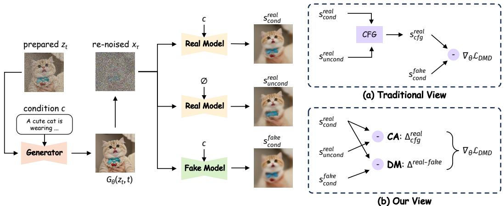
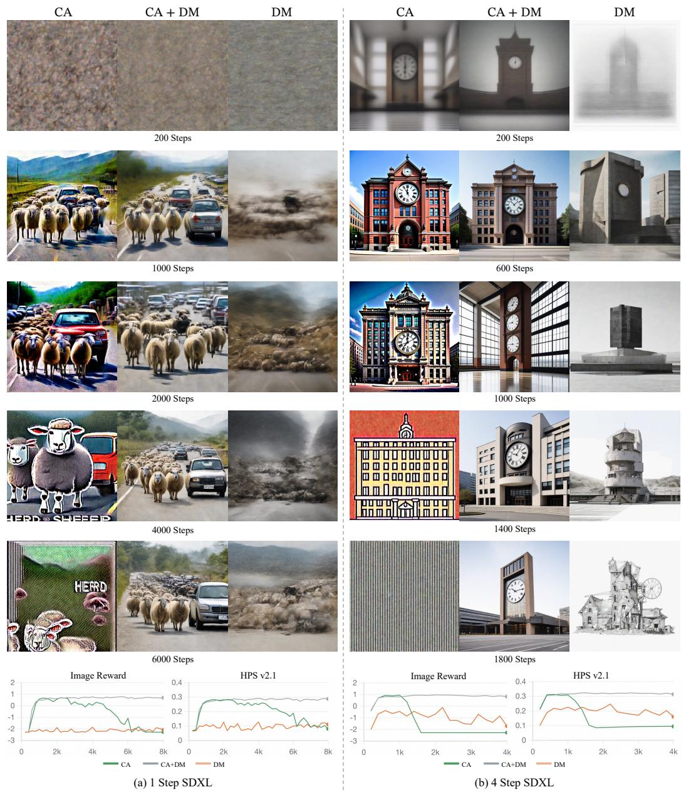
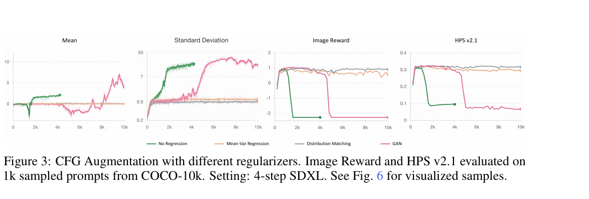
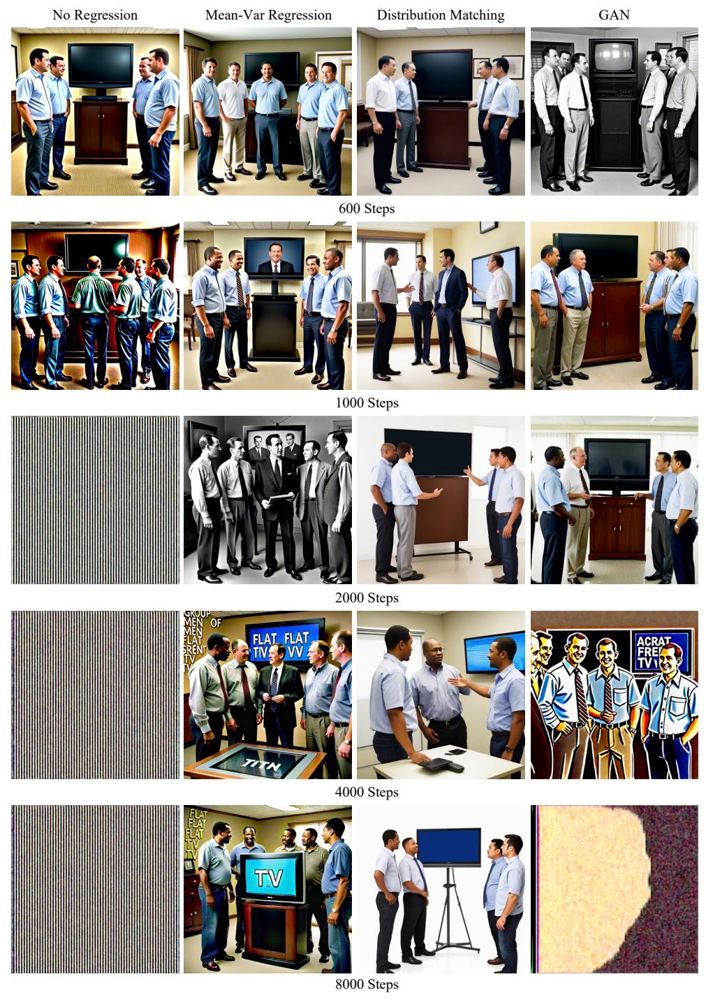
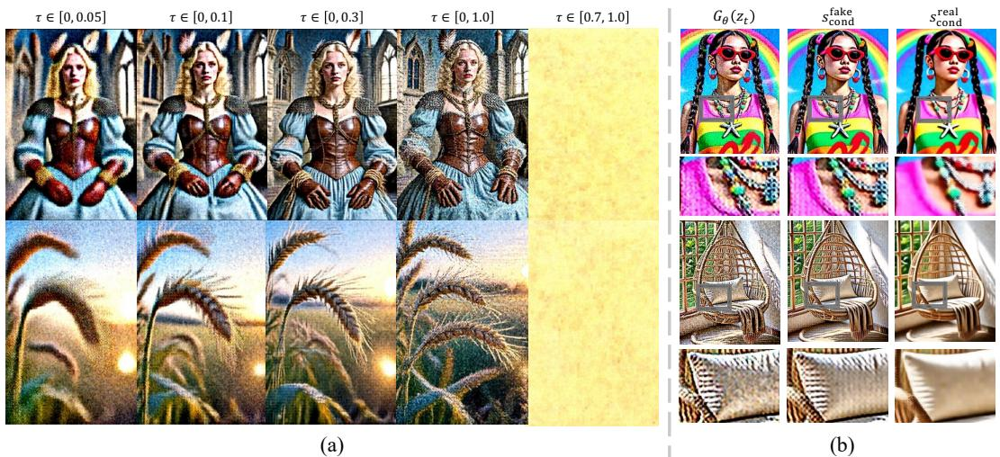

<!DOCTYPE html>


<html lang="zh-CN">
  

    <head>
      <meta charset="utf-8" />
        
      <meta name="description" content="用于记录学习笔记的个人网站" />
      
      <meta
        name="viewport"
        content="width=device-width, initial-scale=1, maximum-scale=1"
      />
      <title> twlelev的博客</title>
  <meta name="generator" content="hexo-theme-ayer">
      
      <link rel="shortcut icon" href="/favicon.ico" />
       
<link rel="stylesheet" href="/dist/main.css">

      
<link rel="stylesheet" href="/css/fonts/remixicon.css">

      
<link rel="stylesheet" href="/css/custom.css">
 
      <script src="https://cdn.staticfile.org/pace/1.2.4/pace.min.js"></script>
       
 

      <link
        rel="stylesheet"
        href="https://cdn.jsdelivr.net/npm/@sweetalert2/theme-bulma@5.0.1/bulma.min.css"
      />
      <script src="https://cdn.jsdelivr.net/npm/sweetalert2@11.0.19/dist/sweetalert2.min.js"></script>

      <!-- mermaid -->
      
      <style>
        .swal2-styled.swal2-confirm {
          font-size: 1.6rem;
        }
      </style>
    <link rel="stylesheet" href="/css/prism-tomorrow.css" type="text/css">
<link rel="stylesheet" href="/css/prism-line-numbers.css" type="text/css"></head>
  </html>
</html>


<body>
  <div id="app">
    
      
    <main class="content on">
      
<section class="cover">
    
  <div class="cover-frame">
    <div class="bg-box">
      
    </div>
    <div class="cover-inner text-center text-white">
      <h1><a href="/">twlelev的博客</a></h1>
      <div id="subtitle-box">
        
        <span id="subtitle"></span>
        
      </div>
      <div>
        
      </div>
    </div>
  </div>
  <div class="cover-learn-more">
    <a href="javascript:void(0)" class="anchor"><i class="ri-arrow-down-line"></i></a>
  </div>
</section>


<script src="https://cdn.staticfile.org/typed.js/2.0.12/typed.min.js"></script>


<!-- Subtitle -->

  <script>
    try {
      var typed = new Typed("#subtitle", {
        strings: ['再努力一点', '不必在乎别人提前拥有', '愿你的努力都能得到回报'],
        startDelay: 0,
        typeSpeed: 200,
        loop: true,
        backSpeed: 100,
        showCursor: true
      });
    } catch (err) {
      console.log(err)
    }
  </script>
  
<div id="main">
  <section class="outer">
  
  
  

<div class="notice" style="margin-top:50px">
    <i class="ri-heart-fill"></i>
    <div class="notice-content" id="broad"></div>
</div>
<script type="text/javascript">
    fetch('https://v1.hitokoto.cn')
        .then(response => response.json())
        .then(data => {
            document.getElementById("broad").innerHTML = data.hitokoto;
        })
        .catch(console.error)
</script>

<style>
    .notice {
        padding: 20px;
        border: 1px dashed #e6e6e6;
        color: #969696;
        position: relative;
        display: inline-block;
        width: 100%;
        background: #fbfbfb50;
        border-radius: 10px;
    }

    .notice i {
        float: left;
        color: #999;
        font-size: 16px;
        padding-right: 10px;
        vertical-align: middle;
        margin-top: -2px;
    }

    .notice-content {
        display: initial;
        vertical-align: middle;
    }
</style>
  
  <article class="articles">
    
    
    
    
    <article
  id="post-3D/3D reconstruct 中相机相关基础"
  class="article article-type-post"
  itemscope
  itemprop="blogPost"
  data-scroll-reveal
>
  <div class="article-inner">
    
    <header class="article-header">
       
<h2 itemprop="name">
  <a class="article-title" href="/2026/05/18/3d/3d-reconstruct-zhong-xiang-ji-xiang-guan-ji-chu/"
    >reconstruct中相机相关基础</a> 
</h2>
 

      
    </header>
     
    <div class="article-meta">
      <a href="/2026/05/18/3d/3d-reconstruct-zhong-xiang-ji-xiang-guan-ji-chu/" class="article-date">
  <time datetime="2026-05-18T07:20:39.000Z" itemprop="datePublished">2026-05-18</time>
</a> 
  <div class="article-category">
    <a class="article-category-link" href="/categories/%E5%9F%BA%E7%A1%80/">基础</a>
  </div>
   
    </div>
      
    <div class="article-entry" itemprop="articleBody">
       
  <h1 id="相机参数-位姿-fov-与-uv-反投"><a class="markdownIt-Anchor" href="#相机参数-位姿-fov-与-uv-反投"></a> 相机参数、位姿、FOV 与 UV 反投</h1>
<p>这份笔记整理相机内参、外参、相机位姿、FOV 的关系，以及它们在 Pixal3D 和 UV 反投中的作用。</p>
<h2 id="1-相机参数分为两类"><a class="markdownIt-Anchor" href="#1-相机参数分为两类"></a> 1. 相机参数分为两类</h2>
<p>相机参数通常分成：</p>
<pre class="highlight"><code class="text">内参 K：相机自身如何成像，也就是镜头和图像平面的参数
外参 R,t：相机在世界坐标中放在哪里、朝哪里看
</code></pre>
<p>直观理解：</p>
<pre class="highlight"><code class="text">内参：镜头
外参：相机架子
</code></pre>
<p>内参影响视野宽窄、透视强弱、图像中心位置。外参影响看到物体哪一面、相机远近、俯视还是仰视、物体在画面中的位置。</p>
<h2 id="2-内参-k"><a class="markdownIt-Anchor" href="#2-内参-k"></a> 2. 内参 K</h2>
<p>内参描述 3D 点进入相机坐标系之后，如何投影到 2D 像素坐标。常见内参矩阵：</p>
<pre class="highlight"><code class="text">K = [ fx   0  cx
      0   fy  cy
      0    0   1 ]
</code></pre>
<p>含义：</p>
<ul>
<li><code>fx, fy</code>：焦距，单位是像素。焦距越大，视野越窄，物体看起来越大，透视越弱。</li>
<li><code>cx, cy</code>：主点，通常接近图像中心。</li>
<li>畸变参数、skew 等在很多深度学习或 3D 生成代码里会被忽略。</li>
</ul>
<p>如果一个点在相机坐标系下是 <code>(Xc, Yc, Zc)</code>，投影到像素坐标为：</p>
<pre class="highlight"><code class="text">u = fx * Xc / Zc + cx
v = fy * Yc / Zc + cy
</code></pre>
<p>这里的 <code>(u, v)</code> 是图像像素坐标。</p>
<h2 id="3-外参-rt"><a class="markdownIt-Anchor" href="#3-外参-rt"></a> 3. 外参 R,t</h2>
<p>外参描述世界坐标中的点如何变换到相机坐标。常见形式：</p>
<pre class="highlight"><code class="text">Xc = R * Xw + t
</code></pre>
<p>其中：</p>
<ul>
<li><code>Xw</code>：世界坐标中的 3D 点。</li>
<li><code>Xc</code>：相机坐标中的 3D 点。</li>
<li><code>R</code>：旋转矩阵。</li>
<li><code>t</code>：平移向量。</li>
</ul>
<p>矩阵形式：</p>
<pre class="highlight"><code class="text">[ Xc ]   [ R  t ] [ Xw ]
[ 1  ] = [ 0  1 ] [ 1  ]
</code></pre>
<p>这个 <code>[R | t]</code> 通常叫 <strong>world-to-camera</strong> 外参，也就是从世界坐标变到相机坐标。</p>
<h2 id="4-相机位姿-camera-pose"><a class="markdownIt-Anchor" href="#4-相机位姿-camera-pose"></a> 4. 相机位姿 camera pose</h2>
<p>很多图形学、SLAM、NeRF 代码里说的 camera pose，通常指的是 <strong>camera-to-world</strong> 矩阵：</p>
<pre class="highlight"><code class="text">Xw = R_c2w * Xc + C
</code></pre>
<p>矩阵形式：</p>
<pre class="highlight"><code class="text">T_c2w = [ R_c2w  C
          0      1 ]
</code></pre>
<p>其中：</p>
<ul>
<li><code>C</code> 是相机中心在世界坐标中的位置。</li>
<li><code>R_c2w</code> 是相机坐标轴在世界坐标中的朝向。</li>
</ul>
<p>它和 world-to-camera 外参互为逆：</p>
<pre class="highlight"><code class="text">R_w2c = R_c2w^T
t_w2c = -R_c2w^T * C
</code></pre>
<p>反过来：</p>
<pre class="highlight"><code class="text">R_c2w = R_w2c^T
C = -R_w2c^T * t_w2c
</code></pre>
<p>因此：</p>
<pre class="highlight"><code class="text">外参 world-to-camera = T_w2c
相机位姿 camera pose = T_c2w
T_w2c = inverse(T_c2w)
</code></pre>
<blockquote>
<p>[!warning] 容易混淆<br />
有些库把 pose 叫外参，有些库把 pose 叫外参的逆。实际使用时一定要确认矩阵方向是 <code>world_to_camera</code> 还是 <code>camera_to_world</code>。</p>
</blockquote>
<h2 id="5-完整投影公式"><a class="markdownIt-Anchor" href="#5-完整投影公式"></a> 5. 完整投影公式</h2>
<p>世界坐标点投影到图像像素，一般分两步：</p>
<pre class="highlight"><code class="text">Xc = R * Xw + t

u = fx * Xc / Zc + cx
v = fy * Yc / Zc + cy
</code></pre>
<p>合起来可以写成：</p>
<pre class="highlight"><code class="text">s [u, v, 1]^T = K [R | t] [Xw, Yw, Zw, 1]^T
</code></pre>
<p>其中：</p>
<ul>
<li><code>K</code> 是内参。</li>
<li><code>[R | t]</code> 是外参。</li>
<li><code>s</code> 是尺度，通常对应深度。</li>
</ul>
<h2 id="6-方位角-仰角-距离"><a class="markdownIt-Anchor" href="#6-方位角-仰角-距离"></a> 6. 方位角、仰角、距离</h2>
<p>在很多 3D 生成和渲染代码里，外参不直接写成 <code>R,t</code>，而是用更直观的参数：</p>
<pre class="highlight"><code class="text">azimuth   方位角：绕竖直轴转多少，例如正面、左侧、右侧
elevation 仰角：相机从上往下还是从下往上看
distance  距离：相机离物体中心多远
target    观察目标点，通常是物体中心
</code></pre>
<p>这些参数可以通过 <code>look_at</code> 方法转换成 camera pose。例如：</p>
<pre class="highlight"><code class="text">azimuth = 0 deg      正面
azimuth = 90 deg     侧面
elevation = 20 deg   略微俯视或仰视，取决于坐标系约定
distance = 2.5       离物体中心 2.5 个单位
</code></pre>
<p>得到相机位置 <code>C</code> 和相机朝向 <code>R_c2w</code> 后，取逆即可得到 world-to-camera 外参 <code>[R | t]</code>。</p>
<h2 id="7-fov-是什么"><a class="markdownIt-Anchor" href="#7-fov-是什么"></a> 7. FOV 是什么</h2>
<p>FOV 是 <strong>Field of View</strong>，即视场角或视野角。它描述相机镜头一次能看到多宽的范围。常见类型：</p>
<pre class="highlight"><code class="text">horizontal FOV / camera_angle_x：水平视场角
vertical FOV / camera_angle_y：垂直视场角
diagonal FOV：对角线视场角
</code></pre>
<p>FOV 属于内参相关概念。它描述镜头成像范围，不描述相机在哪里、朝哪里看。</p>
<p>水平 FOV 与 <code>fx</code> 的关系：</p>
<pre class="highlight"><code class="text">fov_x = 2 * atan(image_width / (2 * fx))
</code></pre>
<p>反过来：</p>
<pre class="highlight"><code class="text">fx = image_width / (2 * tan(fov_x / 2))
</code></pre>
<p>因此：</p>
<pre class="highlight"><code class="text">fx 大  -&gt; FOV 小 -&gt; 视野窄 -&gt; 物体看起来更大，透视更弱
fx 小  -&gt; FOV 大 -&gt; 视野宽 -&gt; 物体看起来更小，透视更强
</code></pre>
<p>直观例子：</p>
<pre class="highlight"><code class="text">长焦镜头：FOV 小，像望远镜，脸部透视被压缩
广角镜头：FOV 大，像近距离手机自拍，鼻子更突出，透视更强
</code></pre>
<p>如果图像宽度为 <code>512</code>：</p>
<pre class="highlight"><code class="text">fx = 512
fov_x = 2 * atan(512 / (2 * 512)) ~= 53.1 deg

fx = 256
fov_x = 2 * atan(512 / (2 * 256)) = 90 deg
</code></pre>
<p>这样不同视角中 person/head 的位置和画面占比才更稳定，也更适合后续 UV 反投。</p>
<h2 id="8-uv-反投需要什么相机参数"><a class="markdownIt-Anchor" href="#8-uv-反投需要什么相机参数"></a> 8. UV 反投需要什么相机参数</h2>
<p>如果要把多视角图像反投到 mesh 的 UV 上，仅有 MoGe 提供的内参不够。UV 反投至少需要：</p>
<pre class="highlight"><code class="text">1. mesh 顶点、面、UV
2. 每张图的相机内参 K：fx, fy, cx, cy
3. 每张图的相机外参 R,t 或 camera pose
4. 可见性判断：z-buffer / depth test
</code></pre>
<p>反投流程可以按 UV texel 做：</p>
<pre class="highlight"><code class="text">对每个 UV texel
  -&gt; 找到它属于哪个 triangle
  -&gt; 用 barycentric 插值得到 3D surface point
  -&gt; 用 K[R|t] 投影到每张 view image
  -&gt; depth test 判断是否可见
  -&gt; 从图像采样颜色/PBR
  -&gt; 多视角加权融合
  -&gt; 对没覆盖区域做 padding / inpaint
</code></pre>
<p>也可以按图像像素做：</p>
<pre class="highlight"><code class="text">每张图像像素
  -&gt; rasterization 得到 triangle id、barycentric、depth
  -&gt; 找到对应 UV 坐标
  -&gt; 把像素颜色 splat / accumulate 到 UV atlas
</code></pre>
<p>如果多视角图是自己从已知 mesh 渲染出来的，那么渲染时本来就有 <code>K, R, t</code>，此时不一定需要 MoGe。</p>
<p>如果多视角图是生成模型产生的，或者来自未知相机，那么 MoGe 只能提供内参线索，还必须估计每张图相对于 mesh 的外参：</p>
<pre class="highlight"><code class="text">R_i, t_i = camera_pose_estimation(mesh, image_i)
</code></pre>
<p>对于 3D head，可以使用：</p>
<ul>
<li>2D facial landmarks + FLAME/mesh 对应点做 PnP。</li>
<li>silhouette、normal、depth 的 differentiable rendering 优化。</li>
<li>face parsing、眼角、鼻尖、嘴角等语义区域约束。</li>
<li>MoGe depth/point map 与 mesh 对齐，但仍然要解相机/物体位姿。</li>
</ul>
<h2 id="9-multi-view-diffusion-生成图用于反投-uv"><a class="markdownIt-Anchor" href="#9-multi-view-diffusion-生成图用于反投-uv"></a> 9. Multi-view diffusion 生成图用于反投 UV</h2>
<p>如果 multi-view images 是通过 diffusion 生成的，那么生成阶段最好明确控制或记录每张图的相机协议。至少需要：</p>
<pre class="highlight"><code class="text">azimuth：水平绕物体旋转角
elevation：俯仰角
distance 或 camera radius：相机离物体中心多远
target / look_at center：相机看向哪里，通常是 head center
projection type：perspective 或 orthographic
image resolution：图像宽高
coordinate convention：坐标系约定
</code></pre>
<p>如果使用透视投影，还需要：</p>
<pre class="highlight"><code class="text">FOV 或 focal length
near / far
aspect
</code></pre>
<p>如果使用正交投影，还需要：</p>
<pre class="highlight"><code class="text">ortho_scale / ortho_size
near / far
aspect
</code></pre>
<p>正交投影下没有透视里的 <code>Xc / Zc</code> 和 <code>Yc / Zc</code>，物体大小主要由 <code>ortho_scale</code> 控制。对 FLAME 或稳定拓扑 head 做 UV 反投时，正交投影常常更稳定，因为 diffusion 生成的多视角图未必有严格真实透视。</p>
<p>一个常见 head multi-view 协议可以是：</p>
<pre class="highlight"><code class="text">front:       azimuth =   0 deg, elevation = 0 deg
front-left:  azimuth = -45 deg, elevation = 0 deg
left:        azimuth = -90 deg, elevation = 0 deg
front-right: azimuth =  45 deg, elevation = 0 deg
right:       azimuth =  90 deg, elevation = 0 deg
back:        azimuth = 180 deg, elevation = 0 deg

projection = orthographic
ortho_scale = fixed
target = head center
resolution = 1024 or 2048
</code></pre>
<blockquote>
<p>[!note] Camera prompt ≠ 真实相机<br />
控制 diffusion 的 camera prompt 或 condition，不等于生成图真的严格符合该相机。比如指定 <code>left view, azimuth=-90 deg</code>，生成结果可能实际是 70 度侧脸，头部比例、耳朵、头发也可能发生生成式偏移。</p>
</blockquote>
<p>因此反投前通常还需要做一次 pose refinement：</p>
<pre class="highlight"><code class="text">1. 设定目标相机 azimuth / elevation / projection
2. multi-view diffusion 生成一致视图
3. 对每张生成图重新估计或优化相机位姿、scale、translation
4. 用优化后的相机做 UV 反投
</code></pre>
<p>对于正交 head 视图，常优化：</p>
<pre class="highlight"><code class="text">azimuth
elevation
roll
translation x/y
ortho_scale
</code></pre>
<p>对于透视投影，还可能优化：</p>
<pre class="highlight"><code class="text">focal length / FOV
distance
</code></pre>
<h2 id="10-nvdiffrast-中相机约定如何生效"><a class="markdownIt-Anchor" href="#10-nvdiffrast-中相机约定如何生效"></a> 10. nvdiffrast 中相机约定如何生效</h2>
<p>nvdiffrast 本身不负责定义或推断相机参数。它只接收已经变换到 clip space 的顶点，以及三角面索引，然后做 rasterization 和 interpolation。典型调用类似：</p>
<pre class="highlight"><code class="python">rast_out, _ = dr.rasterize(ctx, pos_clip, tri, resolution=[H, W])
</code></pre>
<p>关键是 <code>pos_clip</code>：</p>
<pre class="highlight"><code class="text">pos_clip = MVP @ vertices_homo
</code></pre>
<p>其中：</p>
<pre class="highlight"><code class="text">MVP = Projection @ View @ Model
</code></pre>
<p>三部分含义：</p>
<pre class="highlight"><code class="text">Model：mesh 从 object/local 坐标到 world 坐标
View：world-to-camera，来自 azimuth/elevation/distance/target/look_at
Projection：camera-to-clip，来自 perspective FOV 或 orthographic scale
</code></pre>
<p>所以：</p>
<pre class="highlight"><code class="text">azimuth / elevation / distance / target
  -&gt; 用来构造 camera pose 或 View matrix

FOV / near / far / aspect
  -&gt; 用来构造 perspective Projection matrix

ortho_scale / near / far / aspect
  -&gt; 用来构造 orthographic Projection matrix

resolution
  -&gt; 传给 dr.rasterize(ctx, ..., resolution=[H, W])

crop / resize
  -&gt; 通常不在 nvdiffrast 内部处理，需要同步修改 projection/K 或记录后处理变换

坐标系约定
  -&gt; 体现在 View matrix、Projection matrix、顶点坐标、图像 Y 轴和 UV V 方向里
</code></pre>
<p>做 UV 反投时，常见流程是先用 nvdiffrast 渲染可见面，再插值得到每个像素对应的 UV：</p>
<pre class="highlight"><code class="python">uv_img, _ = dr.interpolate(uv, rast_out, tri)
</code></pre>
<p>这样每个可见像素就知道自己对应到 mesh 的哪个 UV 位置，之后就可以把该像素颜色写回 UV atlas，或者累积多视角颜色。</p>
<blockquote>
<p>[!warning] nvdiffrast 中最容易出错的约定</p>
<ul>
<li><strong>矩阵方向</strong>：如果手里是 <code>camera-to-world pose</code>，通常要先求逆成 <code>world-to-camera View</code>。</li>
<li><strong>相机看向方向</strong>：OpenGL 风格通常看 <code>-Z</code>，一些 CV 代码使用 <code>+Z</code>。</li>
<li><strong>NDC 深度范围</strong>：OpenGL 常见是 <code>[-1, 1]</code>，一些库使用 <code>[0, 1]</code>。</li>
<li><strong>图像 Y 轴</strong>：图像数组通常 <code>y</code> 向下，OpenGL/NDC 常常 <code>y</code> 向上。</li>
<li><strong>UV V 方向</strong>：有些 UV 约定 <code>v=0</code> 在底部，而图像第 0 行在顶部，常需要 <code>v = 1 - v</code>。</li>
<li><strong>crop/resize</strong>：nvdiffrast 不会知道 diffusion 图后处理过，需要你把变换等效进 projection/K 或额外记录。</li>
</ul>
</blockquote>
<p>因此，<code>azimuth/elevation/FOV/ortho_scale/target/坐标系</code> 这些约定会通过你构造的 <code>View</code> 和 <code>Projection</code> 矩阵进入 nvdiffrast；nvdiffrast 只执行 rasterization 和 interpolation。</p>
<h2 id="11-cropresize-对内参的影响"><a class="markdownIt-Anchor" href="#11-cropresize-对内参的影响"></a> 11. Crop/Resize 对内参的影响</h2>
<p>如果图像被裁剪或缩放，内参必须同步变换，否则反投会整体偏移。</p>
<p>缩放 <code>sx, sy</code> 后：</p>
<pre class="highlight"><code class="text">fx&#x27; = sx * fx
fy&#x27; = sy * fy
cx&#x27; = sx * cx
cy&#x27; = sy * cy
</code></pre>
<p>如果先裁剪，裁剪左上角为 <code>(x0, y0)</code>：</p>
<pre class="highlight"><code class="text">cx_crop = cx - x0
cy_crop = cy - y0
</code></pre>
<p>再缩放到新分辨率时继续乘缩放比例。</p>
<blockquote>
<p>[!important] Head reconstruction 与 UV 反投<br />
即使内参本身估计正确，只要 crop/resize 没同步更新 <code>K</code>，投影和反投都会错位。</p>
</blockquote>
<h2 id="12-总结"><a class="markdownIt-Anchor" href="#12-总结"></a> 12. 总结</h2>
<pre class="highlight"><code class="text">内参 K / FOV：描述镜头如何成像
外参 R,t：描述世界点如何变到相机坐标
相机位姿 T_c2w：描述相机在世界中的位置和朝向
world-to-camera 外参 T_w2c = inverse(T_c2w)
</code></pre>
<p>Pixal3D 主要用 MoGe 估计内参/FOV，用于把图像特征对齐到 3D token。它不依赖完整相机位姿。</p>
<p>UV 反投则必须有完整相机几何：内参、外参、mesh UV 和可见性判断。只有内参时，无法判断图像中的像素对应 mesh 的哪一面。</p>
<p>如果 multi-view 图来自 diffusion，生成时要明确投影类型、视角、scale/FOV、target、分辨率和坐标系约定；反投前最好再做 pose refinement。</p>
<p>nvdiffrast 不替用户定义相机。相机约定需要先被转换成 <code>Model/View/Projection</code> 矩阵，最终通过 <code>pos_clip = MVP @ vertices_homo</code> 进入 rasterization。</p>
 
      <!-- reward -->
      
    </div>
    

    <!-- copyright -->
    
    <footer class="article-footer">
       
  <ul class="article-tag-list" itemprop="keywords"><li class="article-tag-list-item"><a class="article-tag-list-link" href="/tags/3D/" rel="tag">3D</a></li></ul>

    </footer>
  </div>

   
   
  
</article>

    
    <article
  id="post-TTS/GPT-SoVITS"
  class="article article-type-post"
  itemscope
  itemprop="blogPost"
  data-scroll-reveal
>
  <div class="article-inner">
    
    <header class="article-header">
       
<h2 itemprop="name">
  <a class="article-title" href="/2026/04/15/tts/gpt-sovits/"
    >GPT-SoVITS</a> 
</h2>
 

      
    </header>
     
    <div class="article-meta">
      <a href="/2026/04/15/tts/gpt-sovits/" class="article-date">
  <time datetime="2026-04-15T06:02:09.000Z" itemprop="datePublished">2026-04-15</time>
</a> 
  <div class="article-category">
    <a class="article-category-link" href="/categories/TTS/">TTS</a>
  </div>
   
    </div>
      
    <div class="article-entry" itemprop="articleBody">
       
  <h1 id="gpt-sovits-架构全链路详解"><a class="markdownIt-Anchor" href="#gpt-sovits-架构全链路详解"></a> GPT-SoVITS 架构全链路详解</h1>
<h2 id="第一阶段-参考音频预处理"><a class="markdownIt-Anchor" href="#第一阶段-参考音频预处理"></a> 第一阶段: 参考音频预处理</h2>
<pre class="highlight"><code class="">参考音频 (3~10s)
    │
    ├─→ 16kHz resampling
    │       → CNHuBERT → HuBERT 特征 (768维, 50fps)
    │               → VQ Quantizer (RVQ, 1024码本)
    │                       → prompt_semantic  ← [1, T_ref] 离散 token
    │                                                  缓存，作为 GPT 的 prompt
    │
    └─→ 原始采样率 spectrogram → refer_spec  ← Mel 频谱，送给 SoVITS 提取音色
         (v2Pro 额外保留 16kHz 音频 → CAM++ → sv_emb 512维)
</code></pre>
<h2 id="第二阶段gptar自回归预测目标语义token"><a class="markdownIt-Anchor" href="#第二阶段gptar自回归预测目标语义token"></a> 第二阶段：GPT(AR自回归)预测目标语义token</h2>
<p><strong>GPT的输入不只是text(音素序列 phones + BERT 特征), 还包括参考音频的语义token作为prompt</strong></p>
<pre class="highlight"><code class="">
输入：
  ├─ 目标文本 → 前端处理 → 音素序列 phones + BERT 特征
  └─ prompt_semantic (参考音频的语义 token，作为上文)

GPT AR 自回归：
  [prompt_semantic | BOS] → 逐 token 预测 → pred_semantic
                                              [T_pred] 个离散 token

</code></pre>
<p>prompt_semantic的作用是让GPT对齐说话人的节奏/韵律风格，进行in-context仿说。</p>
<h2 id="第三阶段sovits解码为音频"><a class="markdownIt-Anchor" href="#第三阶段sovits解码为音频"></a> 第三阶段：SoVITS解码为音频</h2>
<pre class="highlight"><code class="">pred_semantic (离散 token)
    → RVQ Decoder → quantized (连续向量, 768维)
    → ssl_proj + interpolate (25hz→50hz)
    ↓
TextEncoder (enc_p)：
    ├─ 输入1: quantized (语义内容)
    ├─ 输入2: phones (文本音素，控制发音)
    └─ 输入3: ge (音色/风格向量)
    → 通过 MRTE 模块融合三路信息
    → 输出: m_p, logs_p (先验分布参数)
    ↓
Flow (正规化流，逆向)：
    z_p ~ N(m_p, exp(logs_p)) → z
    ↓
Generator (HiFi-GAN 风格声码器)：
    z + ge → 波形音频

</code></pre>
<p>v2Pro = v2 的 SoVITS 架构 + <strong>SV Embedding</strong> + <strong>v3 的 GPT 模型</strong>，本质上是把两个最大的升级（更强语义 GPT + 说话人身份强化）合并到 v2 的轻量声学框架里，不引入外部 Vocoder，保持推理简洁</p>
<h1 id="z_p-z-flow的关系"><a class="markdownIt-Anchor" href="#z_p-z-flow的关系"></a> z_p、z、Flow的关系</h1>
<pre class="highlight"><code class="">训练：真实mel → enc_q → z ──Flow正向──→ z_p   (然后算 KL: z_p分布 vs 先验分布)
推理：先验采样 z_p ──Flow逆向──→ z → Generator
Flow：是可逆双射函数
</code></pre>
<p>KL loss 主要训练 <strong>enc_p（先验编码器）</strong>，让它预测的 N(m_p, exp(logs_p)) 去拟合后验 z 经 Flow 正向映射后的分布。Flow 本身主要被重建损失训练。两者共同保证：推理时先验采样 z_p → Flow 逆向 → z，与训练时 enc_q(真实mel) → z 的分布一致。</p>
 
      <!-- reward -->
      
    </div>
    

    <!-- copyright -->
    
    <footer class="article-footer">
       
  <ul class="article-tag-list" itemprop="keywords"><li class="article-tag-list-item"><a class="article-tag-list-link" href="/tags/TTS/" rel="tag">TTS</a></li></ul>

    </footer>
  </div>

   
   
  
</article>

    
    <article
  id="post-TTS/vibe-voice-finetune实践"
  class="article article-type-post"
  itemscope
  itemprop="blogPost"
  data-scroll-reveal
>
  <div class="article-inner">
    
    <header class="article-header">
       
<h2 itemprop="name">
  <a class="article-title" href="/2026/04/03/tts/vibe-voice-finetune-shi-jian/"
    >VibeVoice 声音克隆微调实践</a> 
</h2>
 

      
    </header>
     
    <div class="article-meta">
      <a href="/2026/04/03/tts/vibe-voice-finetune-shi-jian/" class="article-date">
  <time datetime="2026-04-03T07:55:22.000Z" itemprop="datePublished">2026-04-03</time>
</a> 
  <div class="article-category">
    <a class="article-category-link" href="/categories/TTS/">TTS</a>
  </div>
   
    </div>
      
    <div class="article-entry" itemprop="articleBody">
       
  <h2 id="模型架构速览"><a class="markdownIt-Anchor" href="#模型架构速览"></a> 模型架构速览</h2>
<p>VibeVoice 本质上是 <strong>Qwen2.5 LLM + 扩散解码头</strong> 的混合架构，将大语言模型的文本理解能力与扩散模型的声学生成能力结合起来。</p>
<table>
<thead>
<tr>
<th>组件</th>
<th>作用</th>
<th>参数量</th>
</tr>
</thead>
<tbody>
<tr>
<td>language_model (Qwen2.5)</td>
<td>自回归生成条件向量</td>
<td>~1.5B</td>
</tr>
<tr>
<td>acoustic_tokenizer</td>
<td>VAE 编解码音频波形</td>
<td>~60M</td>
</tr>
<tr>
<td>semantic_tokenizer</td>
<td>VQ-VAE 编码语义特征（自监督语音模型）</td>
<td>~60M</td>
</tr>
<tr>
<td>acoustic_connector</td>
<td>投影 acoustic latent → LLM hidden dim</td>
<td>~8M</td>
</tr>
<tr>
<td>semantic_connector</td>
<td>投影 semantic latent → LLM hidden dim</td>
<td>~8M</td>
</tr>
<tr>
<td><strong>prediction_head（扩散）</strong></td>
<td>噪声预测器，将 LLM hidden state → 音频 latent</td>
<td>~123M</td>
</tr>
</tbody>
</table>
<h3 id="文本与参考语音的融合机制"><a class="markdownIt-Anchor" href="#文本与参考语音的融合机制"></a> 文本与参考语音的融合机制</h3>
<p>模型接受文本和参考音频两路输入，其融合发生在 embedding 层：</p>
<ol>
<li><strong>构造 prompt</strong>：<code>系统提示 + [SPEECH_PLACEHOLDER × N] + Speaker 1: 目标文本 + &lt;speech_start&gt;</code></li>
<li><strong>Tokenize</strong>：整个 prompt 转为 token IDs</li>
<li><strong>查 Embedding 表</strong>：每个 token ID 映射为向量</li>
<li><strong>替换占位符</strong>：用参考音频的真实 embedding（<code>acoustic_connector + semantic_connector</code> 双路）覆盖占位符位置</li>
</ol>
<pre class="highlight"><code class="python">inputs_embeds = embed_layer(input_ids).clone()
ref_speech_embeds = acoustic_connector(scaled_ac) + semantic_connector(se_latents)
ref_positions = speech_input_mask[<span class="hljs-number">0</span>].nonzero()
inputs_embeds[<span class="hljs-number">0</span>, ref_positions[:n_ref]] = ref_speech_embeds[<span class="hljs-number">0</span>, :n_ref]
</code></pre>
<p>最终送入 LLM 的是 <strong>文本 embedding + 参考语音 embedding</strong> 混合序列——文本告诉它「说什么」，参考语音告诉它「用谁的声音说」。</p>
<hr />
<h2 id="推理中的-semantic-feedback"><a class="markdownIt-Anchor" href="#推理中的-semantic-feedback"></a> 推理中的 Semantic Feedback</h2>
<h3 id="自回归生成循环"><a class="markdownIt-Anchor" href="#自回归生成循环"></a> 自回归生成循环</h3>
<p>每次生成一个音频 token 的流程：</p>
<pre class="highlight"><code class="">for 每个输出 token:
    1. 扩散采样（DPM solver, ~10步）
       输入: last_hidden（LLM 条件向量）
       输出: scaled_latent [1, vae_dim]

    2. 反馈路由 → Acoustic-only 或 Acoustic+Semantic

    3. LLM 前向传播（单步，利用 KV cache）
       输出: 新的 last_hidden → 用于下一次扩散采样
</code></pre>
<h3 id="两种反馈模式"><a class="markdownIt-Anchor" href="#两种反馈模式"></a> 两种反馈模式</h3>
<table>
<thead>
<tr>
<th>模式</th>
<th>反馈内容</th>
<th>公式</th>
<th>速度</th>
</tr>
</thead>
<tbody>
<tr>
<td>Acoustic-only</td>
<td>仅 acoustic embedding</td>
<td><code>next = acoustic_connector(latent)</code></td>
<td>快</td>
</tr>
<tr>
<td><strong>Acoustic+Semantic</strong></td>
<td>解码→重编码→双路</td>
<td><code>next = ac_connector(latent) + se_connector(semantic_re_encode(decode(latent)))</code></td>
<td>慢（每步解码+重编码）</td>
</tr>
</tbody>
</table>
<blockquote>
<p>[!tip] 为什么 Semantic Feedback 是必要条件？<br />
训练时 forward pass 用的是 acoustic + semantic <strong>双路</strong>输入（有 ground truth semantic token）。Base model 推理默认用 acoustic-only——速度快，且 base model 没有严重的训练/推理分布偏移。</p>
<p>但<strong>微调后</strong> prediction_head 发生变化，生成的 latent 分布与训练时不完全一致。若只反馈 acoustic，缺少 semantic 信号会让 LLM 偏离正常分布，导致退化（循环、噪声）。加上 semantic feedback 后，反馈信号与训练时一致，推理才稳定。</p>
</blockquote>
<p>注意：这里的 semantic <strong>不是</strong> NLP 意义上「从文本得到的语义」，而是<strong>从音频波形中提取的语音内容特征</strong>（类似 HuBERT/w2vBERT）。因此必须先 decode → waveform → 再用 semantic_tokenizer 重新编码，无法从 acoustic latent 直接转换。</p>
<hr />
<h2 id="微调方案"><a class="markdownIt-Anchor" href="#微调方案"></a> 微调方案</h2>
<h3 id="方案一diffusion-only主要方案"><a class="markdownIt-Anchor" href="#方案一diffusion-only主要方案"></a> 方案一：Diffusion-only（主要方案）</h3>
<p><strong>冻结所有参数，仅训练 prediction_head（~123M params）。</strong></p>
<p>原理：LLM hidden states 与 base model 完全一致，仅让扩散去噪器学习目标说话人的声学特征。</p>
<pre class="highlight"><code class="">finetuning-tts/finetune_diffusion_only.py   # 训练
finetuning-tts/inference_diffusion.py       # 推理（含 semantic feedback）
</code></pre>
<h3 id="方案二lora-on-llm对比方案"><a class="markdownIt-Anchor" href="#方案二lora-on-llm对比方案"></a> 方案二：LoRA on LLM（对比方案）</h3>
<p>在 LLM 上应用 LoRA adapter（q/k/v/o/gate/up/down_proj）+ 同时训练 prediction_head。</p>
<p>LoRA 修改 LLM hidden states 使其更适应目标说话人，prediction_head 联合训练以适应修改后的 hidden states。</p>
<hr />
<h2 id="实验设计"><a class="markdownIt-Anchor" href="#实验设计"></a> 实验设计</h2>
<p><strong>固定参数</strong>：batch_size=1，gradient_accumulation=8（有效 batch=8），lr_scheduler=cosine，warmup_ratio=0.05，weight_decay=0.01，bf16 精度，训练数据 4704 样本。</p>
<p><strong>搜索变量</strong>：</p>
<table>
<thead>
<tr>
<th>变量</th>
<th>搜索范围</th>
</tr>
</thead>
<tbody>
<tr>
<td>微调方法</td>
<td>diffusion-only / LoRA</td>
</tr>
<tr>
<td>学习率 (lr)</td>
<td>1e-7 ~ 5e-6</td>
</tr>
<tr>
<td>训练轮数 (epochs)</td>
<td>1 ~ 20</td>
</tr>
<tr>
<td>LoRA rank</td>
<td>8, 16</td>
</tr>
<tr>
<td>LoRA alpha</td>
<td>16, 32</td>
</tr>
</tbody>
</table>
<p><strong>评估指标</strong>：</p>
<ul>
<li><strong>说话人相似度</strong>：Resemblyzer VoiceEncoder，生成音频与参考音频的余弦相似度</li>
<li><strong>ASR 正确性</strong>：faster-whisper (medium)，检查生成内容是否正确</li>
</ul>
<hr />
<h2 id="实验结果"><a class="markdownIt-Anchor" href="#实验结果"></a> 实验结果</h2>
<h3 id="完整结果表"><a class="markdownIt-Anchor" href="#完整结果表"></a> 完整结果表</h3>
<table>
<thead>
<tr>
<th>排名</th>
<th>实验</th>
<th>方法</th>
<th>lr</th>
<th>epochs</th>
<th>相似度</th>
<th>ASR</th>
<th>备注</th>
</tr>
</thead>
<tbody>
<tr>
<td><strong>1</strong></td>
<td><strong>E06</strong></td>
<td><strong>diffusion</strong></td>
<td><strong>5e-7</strong></td>
<td><strong>10</strong></td>
<td><strong>0.9234</strong></td>
<td><strong>正确</strong></td>
<td><strong>最佳</strong></td>
</tr>
<tr>
<td>2</td>
<td>E11</td>
<td>diffusion</td>
<td>5e-7</td>
<td>20</td>
<td>0.919</td>
<td>正确</td>
<td>过拟合</td>
</tr>
<tr>
<td>3</td>
<td>E08</td>
<td>diffusion</td>
<td>2.5e-7</td>
<td>10</td>
<td>0.9161</td>
<td>正确</td>
<td>lr 偏低</td>
</tr>
<tr>
<td>4</td>
<td>E04</td>
<td>diffusion</td>
<td>5e-7</td>
<td>5</td>
<td>0.9093</td>
<td>正确</td>
<td>欠训练</td>
</tr>
<tr>
<td>7</td>
<td>E12</td>
<td><strong>lora</strong></td>
<td>1e-7</td>
<td>1</td>
<td>0.8943</td>
<td>正确</td>
<td>LoRA 可用！</td>
</tr>
<tr>
<td>-</td>
<td>base</td>
<td>-</td>
<td>-</td>
<td>-</td>
<td>0.829</td>
<td>正确</td>
<td>基线</td>
</tr>
<tr>
<td>9</td>
<td>E10</td>
<td>diffusion</td>
<td>5e-6</td>
<td>1</td>
<td>0.7689</td>
<td>损坏</td>
<td>lr 过高</td>
</tr>
<tr>
<td>11</td>
<td>E07</td>
<td>diffusion</td>
<td>1e-6</td>
<td>10</td>
<td>0.7503</td>
<td>循环</td>
<td>lr 过高</td>
</tr>
<tr>
<td>14</td>
<td>E14</td>
<td>diffusion</td>
<td>3e-6</td>
<td>5</td>
<td>0.6944</td>
<td>损坏</td>
<td>lr 过高</td>
</tr>
</tbody>
</table>
<h3 id="学习率敏感度极窄有效窗口"><a class="markdownIt-Anchor" href="#学习率敏感度极窄有效窗口"></a> 学习率敏感度：极窄有效窗口</h3>
<p>prediction_head 对学习率<strong>极其敏感</strong>：</p>
<table>
<thead>
<tr>
<th>lr 范围</th>
<th>效果</th>
</tr>
</thead>
<tbody>
<tr>
<td><strong>5e-7</strong></td>
<td><strong>最优</strong>：ASR 正确，相似度最高</td>
</tr>
<tr>
<td>7.5e-7</td>
<td>可用但偏弱</td>
</tr>
<tr>
<td>2e-7 ~ 2.5e-7</td>
<td>安全但偏弱</td>
</tr>
<tr>
<td>1e-6</td>
<td>危险：ASR 开始退化（循环、重复）</td>
</tr>
<tr>
<td>≥ 2e-6</td>
<td>完全损坏：输出噪声</td>
</tr>
</tbody>
</table>
<p><strong>有效学习率窗口：2e-7 ~ 5e-7</strong>，最优点在 <strong>5e-7</strong>。</p>
<h3 id="训练轮数分析lr5e-7"><a class="markdownIt-Anchor" href="#训练轮数分析lr5e-7"></a> 训练轮数分析（lr=5e-7）</h3>
<table>
<thead>
<tr>
<th>epochs</th>
<th>相似度</th>
<th>状态</th>
</tr>
</thead>
<tbody>
<tr>
<td>1</td>
<td>0.8863</td>
<td>欠训练</td>
</tr>
<tr>
<td>5</td>
<td>0.9093</td>
<td>正常</td>
</tr>
<tr>
<td><strong>10</strong></td>
<td><strong>0.9234</strong></td>
<td><strong>最佳</strong></td>
</tr>
<tr>
<td>12</td>
<td>0.8965</td>
<td>过拟合！</td>
</tr>
<tr>
<td>20</td>
<td>0.919</td>
<td>过拟合</td>
</tr>
</tbody>
</table>
<p><strong>最优训练轮数 = 10 epochs</strong>。超过 10 后出现过拟合，相似度反而下降。</p>
<h3 id="lora-方案分析"><a class="markdownIt-Anchor" href="#lora-方案分析"></a> LoRA 方案分析</h3>
<table>
<thead>
<tr>
<th>lr</th>
<th>结果</th>
</tr>
</thead>
<tbody>
<tr>
<td>1e-4 ~ 5e-6</td>
<td>完全损坏（sim 0.45-0.58，ASR 错误）</td>
</tr>
<tr>
<td><strong>1e-7</strong></td>
<td><strong>首次可用</strong>（sim 0.894，ASR 正确）</td>
</tr>
</tbody>
</table>
<p>LoRA 在极低 lr 下才可工作，但收益不如 diffusion-only（0.894 vs 0.923）。LLM hidden states 对 LoRA 修改非常敏感——这也从反面印证了「冻结 LLM，只调扩散头」的正确性。</p>
<hr />
<h2 id="关键结论"><a class="markdownIt-Anchor" href="#关键结论"></a> 关键结论</h2>
<blockquote>
<p>[!success] 最优配置</p>
<ul>
<li><strong>方法</strong>：Diffusion-only（仅训练 prediction_head，~123M）</li>
<li><strong>学习率</strong>：5e-7</li>
<li><strong>训练轮数</strong>：10 epochs</li>
<li><strong>调度器</strong>：cosine，warmup_ratio=0.05</li>
<li><strong>推理</strong>：semantic feedback + CFG 1.3 + DPM 10 steps</li>
<li><strong>结果</strong>：说话人相似度 <strong>0.9234</strong>（base model 0.829，<strong>+11.3%</strong>）</li>
</ul>
</blockquote>
<ol>
<li><strong>Diffusion-only &gt; LoRA</strong>：冻结 LLM 只调 prediction_head 是最优策略。修改 LLM hidden states 会严重破坏语音生成质量。</li>
<li><strong>lr 窗口极窄</strong>：有效范围仅 2e-7~5e-7。≥1e-6 即 ASR 退化，≥2e-6 完全损坏。</li>
<li><strong>10 epochs 恰好</strong>：少训欠拟合，多训过拟合，曲线对称。</li>
<li><strong>Semantic feedback 必须开启</strong>：微调后推理必须反馈 acoustic + semantic 双路，否则分布偏移导致循环/噪声。</li>
<li><strong>目标 0.95 未达成</strong>：Diffusion-only 的天花板约为 0.92-0.93。进一步突破可能需要更多训练数据或探索数据增强策略。</li>
</ol>
<hr />
<h2 id="最佳模型与推理命令"><a class="markdownIt-Anchor" href="#最佳模型与推理命令"></a> 最佳模型与推理命令</h2>
<pre class="highlight"><code class="">experiments/E06/model/prediction_head.pt
</code></pre>
<pre class="highlight"><code class="bash">python finetuning-tts/inference_diffusion.py \
    --base_model microsoft/VibeVoice-1.5B \
    --prediction_head_path ./experiments/E06/model/prediction_head.pt \
    --ref_audio ./ref.ogg \
    --text <span class="hljs-string">&quot;要合成的文本&quot;</span> \
    --output_path ./output.wav \
    --cfg_scale 1.3 \
    --num_inference_steps 10
</code></pre>
<p><strong>实验环境</strong>：4× NVIDIA RTX 4090 (24GB)，2 GPU 并行训练，总运行时间约 12 小时（14 个实验，7 轮并行）。</p>
 
      <!-- reward -->
      
    </div>
    

    <!-- copyright -->
    
    <footer class="article-footer">
       
  <ul class="article-tag-list" itemprop="keywords"><li class="article-tag-list-item"><a class="article-tag-list-link" href="/tags/Diffusion/" rel="tag">Diffusion</a></li><li class="article-tag-list-item"><a class="article-tag-list-link" href="/tags/Fine-tuning/" rel="tag">Fine-tuning</a></li><li class="article-tag-list-item"><a class="article-tag-list-link" href="/tags/TTS/" rel="tag">TTS</a></li><li class="article-tag-list-item"><a class="article-tag-list-link" href="/tags/VibeVoice/" rel="tag">VibeVoice</a></li><li class="article-tag-list-item"><a class="article-tag-list-link" href="/tags/Voice-Cloning/" rel="tag">Voice Cloning</a></li></ul>

    </footer>
  </div>

   
   
  
</article>

    
    <article
  id="post-TTS/qwen-tts"
  class="article article-type-post"
  itemscope
  itemprop="blogPost"
  data-scroll-reveal
>
  <div class="article-inner">
    
    <header class="article-header">
       
<h2 itemprop="name">
  <a class="article-title" href="/2026/04/01/tts/qwen-tts/"
    >qwen-tts</a> 
</h2>
 

      
    </header>
     
    <div class="article-meta">
      <a href="/2026/04/01/tts/qwen-tts/" class="article-date">
  <time datetime="2026-04-01T08:01:36.000Z" itemprop="datePublished">2026-04-01</time>
</a> 
  <div class="article-category">
    <a class="article-category-link" href="/categories/qwen-tts/">qwen-tts</a>
  </div>
   
    </div>
      
    <div class="article-entry" itemprop="articleBody">
       
  <h1 id="qwen3-tts-整体网络框架"><a class="markdownIt-Anchor" href="#qwen3-tts-整体网络框架"></a> Qwen3-TTS 整体网络框架</h1>
<pre class="highlight"><code class="mermaid">flowchart TD
    SI[&quot;ref_mel [B, T_mel, 128]&quot;]
    SO[&quot;spk_embed [B, D]&quot;]
    IE[&quot;input_embeds [B, T, D]&quot;]
    HS[&quot;hidden_states [B, T, D]&quot;]
    CH[&quot;codec_head — codebook 0 logits [B,T,V]&quot;]
    CP[&quot;Sub-Talker — codebook 1-15 logits [B,15,V]&quot;]
    ST[&quot;speech_tokenizer — waveform&quot;]

    subgraph SE[&quot;SpeakerEncoder (ECAPA-TDNN)&quot;]
        SI --&gt; SO
    end

    subgraph MT[&quot;Main Talker (28层 Transformer Decoder)&quot;]
        IE --&gt; HS
    end

    SO -- &quot;注入 idx 3000&quot; --&gt; IE
    HS --&gt; CH
    HS --&gt; CP
    CH --&gt; ST
    CP --&gt; ST
</code></pre>
<h1 id="推理流程自回归逐步生成"><a class="markdownIt-Anchor" href="#推理流程自回归逐步生成"></a> 推理流程（自回归逐步生成）</h1>
<pre class="highlight"><code class="mermaid">flowchart TD
    P1[&quot;Step 1: Prefill — text + ref_audio → Main Talker&quot;]
    A[&quot;Main Talker: hidden_state[t] → codebook[0]&quot;]
    B[&quot;Sub-Talker: codebook[1] → [2] → … → [15]&quot;]
    C[&quot;16个 codebook embeddings 求和 → 下一步输入&quot;]
    P3[&quot;Step 3: 解码 — speech_tokenizer → waveform&quot;]

    P1 --&gt; A --&gt; B --&gt; C
    C -- &quot;下一时间步 t+1&quot; --&gt; A
    C --&gt; P3
</code></pre>
<h1 id="各模块维度汇总"><a class="markdownIt-Anchor" href="#各模块维度汇总"></a> 各模块维度汇总</h1>
<table>
<thead>
<tr>
<th>模块</th>
<th>层数</th>
<th>维度</th>
<th>说明</th>
</tr>
</thead>
<tbody>
<tr>
<td>SpeakerEncoder (ECAPA-TDNN)</td>
<td>3× SE-Res2Net + pooling</td>
<td>mel 128 → D</td>
<td>提取说话人特征</td>
</tr>
<tr>
<td>Main Talker</td>
<td>28层 Transformer Decoder</td>
<td>D (hidden_size)</td>
<td>预测 codebook 0</td>
</tr>
<tr>
<td>CodePredictor (Sub-Talker)</td>
<td>5层 Transformer Decoder</td>
<td>较小 hidden_size</td>
<td>预测 codebook 1–15</td>
</tr>
<tr>
<td>codec_head</td>
<td>1层 Linear</td>
<td>D → vocab_size</td>
<td>codebook 0 分类头</td>
</tr>
<tr>
<td>lm_head × 15</td>
<td>各 1层 Linear</td>
<td>sub_D → vocab_size</td>
<td>codebook 1–15 分类头</td>
</tr>
<tr>
<td>small_to_mtp_projection</td>
<td>1层 Linear</td>
<td>D → sub_D</td>
<td>Main → Sub 维度映射</td>
</tr>
</tbody>
</table>
<h1 id="微调问题汇总"><a class="markdownIt-Anchor" href="#微调问题汇总"></a> 微调问题汇总</h1>
<h2 id="1过拟合丢失生成eos-token能力"><a class="markdownIt-Anchor" href="#1过拟合丢失生成eos-token能力"></a> 1.过拟合丢失生成EOS token能力</h2>
<p>数据中 EOS：</p>
<pre class="highlight"><code class=""># codec channel 中，EOS 只出现一次：在所有 audio codec 之后
input_ids[i, 8+text_ids_len-1+codec_ids_len, 1] = codec_eos_token_id
</code></pre>
<p>label中:</p>
<pre class="highlight"><code class="">codec_0_labels[i, 8+text_ids_len-1+codec_ids_len] = codec_eos_token_id
</code></pre>
<p>每条训练样本中，EOS token只出现1次，而audio codec token出现几百次。<br />
假设一条16秒音频在12HZ生成192 个codec frame, 模型看到的label分布是:</p>
<ul>
<li>192个正常codec token(如id=0~4095的各种值)</li>
<li>1个EOS token(id=4198)</li>
</ul>
<p>当模型在752条数据上训练20epoch出现过拟合：</p>
<ul>
<li>模型对每条样本的codec 序列背的滚瓜烂熟，loss趋于0</li>
<li>在这种情况下，模型学习到的codec 序列和EOS绑定在一起，一起背住了</li>
<li>当模型推理，输入没见过的text,模型找不到匹配的记忆模型，找不到EOS结束位置。</li>
</ul>
<h2 id="2过拟合导致文本提示失效"><a class="markdownIt-Anchor" href="#2过拟合导致文本提示失效"></a> 2.过拟合导致文本提示失效</h2>
<p>loss如下:</p>
<pre class="highlight"><code class="">outputs = model.talker(
    inputs_embeds=input_embeddings,  # text embedding + codec embedding 混合
    attention_mask=attention_mask,
    labels=codec_0_labels,           # 只监督 codec_0 的预测
    output_hidden_states=True
)
loss = outputs.loss + 0.3 * sub_talker_loss
</code></pre>
<p>loss只衡量&quot;给定前面所有token, 预测下一个codec token的准确度&quot;。现在考虑两种降低loss的策略:</p>
<ol>
<li>(理想泛化学习)理解文本内容 -&gt; 根据文本语义发音 -&gt; 预测对应的codec token</li>
<li>(死记硬背)根据codec token序列[a,b,c,…] -&gt; 直接记住a后面是b,b后面是c,预测下一个codec token</li>
</ol>
<p>两种策略都能然loss下降，但策略2更简单，梯度下降优先选择这条路。</p>
<ol>
<li>输入中 codec embedding 和 text embedding 是叠加的</li>
</ol>
<pre class="highlight"><code class="">input_embeddings = input_text_embedding + input_codec_embedding
</code></pre>
<p>模型可以选择性关注codec通道而忽略text通道<br />
2. codec自身具有极强的自相关性 - 语音信号是连续的，相邻帧的codec是高度相似的。仅靠前几帧就能预测下一帧，不需要看文本。</p>
<h2 id="3过拟合导致重复循环"><a class="markdownIt-Anchor" href="#3过拟合导致重复循环"></a> 3.过拟合导致重复循环</h2>
<p><strong>训练时：不存在重复循环</strong><br />
训练时用的是teacher forcing， 上下文中每一个codec token都是ground truth.所以训练时模型永远看到正确的上下文，不会出现循环。Loss 下降是正常的。<br />
<strong>推理时</strong><br />
推理用的是autoregressive decoding - 每一步的输入是模型上一步生成的token.<br />
这就是 train-inference mismatch（训练-推理不一致）问题,推理时很快偏离真实分布。</p>
<p><strong>过拟合的模型在推理时会这样崩溃：</strong></p>
<ol>
<li>第 1 步：输入新文本，模型没见过，输出一个不太对的 codec token</li>
<li>第 2 步：输入 X，这个 X 不在任何训练样本的正常上下文中，模型又输出一个偏离的 Y</li>
<li>误差累积：几步之后，模型进入一个它在训练中完全没见过的状态空间</li>
<li>在陌生状态下：模型的输出概率分布变得混乱，很容易产生一个短序列 [A, B, C] 使得 A→B, B→C, C→A 形成闭环</li>
<li>闭环一旦形成就无法逃脱 — 因为模型没有&quot;识别自己在循环&quot;的能力，且不会生成 EOS</li>
</ol>
 
      <!-- reward -->
      
    </div>
    

    <!-- copyright -->
    
    <footer class="article-footer">
       
  <ul class="article-tag-list" itemprop="keywords"><li class="article-tag-list-item"><a class="article-tag-list-link" href="/tags/TTS/" rel="tag">TTS</a></li></ul>

    </footer>
  </div>

   
   
  
</article>

    
    <article
  id="post-Claude-Code使用"
  class="article article-type-post"
  itemscope
  itemprop="blogPost"
  data-scroll-reveal
>
  <div class="article-inner">
    
    <header class="article-header">
       
<h2 itemprop="name">
  <a class="article-title" href="/2026/03/25/claude-code-shi-yong/"
    >Claude Code使用</a> 
</h2>
 

      
    </header>
     
    <div class="article-meta">
      <a href="/2026/03/25/claude-code-shi-yong/" class="article-date">
  <time datetime="2026-03-25T07:53:08.000Z" itemprop="datePublished">2026-03-25</time>
</a>    
    </div>
      
    <div class="article-entry" itemprop="articleBody">
       
  <h1 id="claude-code-最佳实践"><a class="markdownIt-Anchor" href="#claude-code-最佳实践"></a> Claude Code 最佳实践</h1>
<blockquote>
<p>基于：<a target="_blank" rel="noopener" href="https://x.com/pandatalk8/status/2035975664730575325">@PandaTalk8</a> 改编并补充</p>
</blockquote>
<hr />
<h2 id="0使用前配置"><a class="markdownIt-Anchor" href="#0使用前配置"></a> 0.使用前配置</h2>
<p><strong>添加skills</strong><br />
/plugins  在Manage plugins中的Marketplaces中添加<a target="_blank" rel="noopener" href="https://github.com/anthropics/claude-plugins-official.git">https://github.com/anthropics/claude-plugins-official.git</a>，随后便能在Plugins中添加插件，一般排名前几的都是比较好用的，推荐superpowers。</p>
<blockquote>
<p><strong>superpowers 简介</strong>：一套元能力集合，把资深工程师的工作纪律（先想后做、TDD、验证后再声明完成、代码审查）固化成可自动触发的 skills。核心包括 <code>brainstorming</code>（探索需求）、<code>writing-plans</code>（写实施计划）、<code>executing-plans</code>（执行计划）、<code>test-driven-development</code>（严格TDD）、<code>systematic-debugging</code>（系统化排查）、<code>verification-before-completion</code>（禁止幻觉式完成）、<code>using-git-worktrees</code>（隔离工作区）等。好用在于：<strong>强制纪律</strong>（禁止跳过测试就声称&quot;修好了&quot;）+ <strong>触发式调用</strong>（系统在合适时机自动提醒）+ <strong>可组合</strong>（构成完整流水线）。</p>
</blockquote>
<p><strong>允许claude code所有权限</strong><br />
在当前项目下创建.claude/settings.local.json<br />
在其中配置：</p>
<pre class="highlight"><code class="">&#123;
  &quot;permissions&quot;: &#123;
    &quot;defaultMode&quot;: &quot;bypassPermissions&quot;,
    &quot;allow&quot;: [
      &quot;Bash&quot;,
      &quot;Read&quot;,
      &quot;Write&quot;,
      &quot;Edit&quot;,
      &quot;Glob&quot;,
      &quot;Grep&quot;,
      &quot;WebFetch&quot;,
      &quot;WebSearch&quot;,
      &quot;NotebookEdit&quot;,
      &quot;Agent&quot;,
      &quot;TodoWrite&quot;
    ],
    &quot;deny&quot;: []
  &#125;
&#125;

</code></pre>
<p>配置好后，不用每一步都需要确认各种权限，让claude code畅通无阻执行各种权限。</p>
<h2 id="1-claudemd-最被低估的功能"><a class="markdownIt-Anchor" href="#1-claudemd-最被低估的功能"></a> 1. <a target="_blank" rel="noopener" href="http://CLAUDE.md">CLAUDE.md</a> — 最被低估的功能</h2>
<blockquote>
<p>如果你只记住这篇文章的一件事，那就是：写好 <a target="_blank" rel="noopener" href="http://claude.md">claude.md</a>。</p>
</blockquote>
<p><a target="_blank" rel="noopener" href="http://CLAUDE.md">CLAUDE.md</a> 是 Claude Code 每次对话启动时自动读取的指令文件，就像给新同事的入职文档。/init <a target="_blank" rel="noopener" href="http://xn--claudeCLAUDE-y16svht89a3hev0gjs1dzpap7yh27ohhbu78axf9c.md">可以让claude自动总结仓库并编写CLAUDE.md</a>。<br />
<strong>好的 <a target="_blank" rel="noopener" href="http://CLAUDE.md">CLAUDE.md</a> 应该包含什么</strong></p>
<ul>
<li>写 Claude 从代码里<strong>读不出来</strong>的东西——<strong>&quot;为什么&quot;比&quot;是什么&quot;更重要</strong></li>
<li>保持在 <strong>200 行以内</strong>（太长会导致 Claude 忽略规则）</li>
<li>不要放频繁变化的内容，用链接代替</li>
</ul>
<p><strong>四级层级配置</strong><br />
Claude Code 支持多级 <a target="_blank" rel="noopener" href="http://CLAUDE.md">CLAUDE.md</a>，按优先级加载：<strong>全局 → 用户 → 工作区 → 文件夹级别</strong><br />
<strong>示例内容</strong></p>
<ul>
<li>项目名称和常用命令</li>
<li>编码规范</li>
<li>架构决策背景</li>
<li>常见陷阱</li>
</ul>
<h2 id="2-clauderules-目录-进阶规则管理"><a class="markdownIt-Anchor" href="#2-clauderules-目录-进阶规则管理"></a> 2. .claude/rules/ 目录 — 进阶规则管理</h2>
<p>在 <code>.claude/rules/</code> 目录下创建带 YAML frontmatter 的规则文件，可以针对特定文件类型生效。规则仅在访问匹配文件时加载，<strong>节省上下文空间</strong>。</p>
<h2 id="3-指令质量决定输出质量"><a class="markdownIt-Anchor" href="#3-指令质量决定输出质量"></a> 3. 指令质量决定输出质量</h2>
<p><strong>差指令 vs 好指令</strong></p>
<table>
<thead>
<tr>
<th>差的指令</th>
<th>好的指令</th>
</tr>
</thead>
<tbody>
<tr>
<td>“给用户列表加搜索功能”</td>
<td>“在 <code>@src/pages/UserList.tsx</code> 的表格上方加搜索框。调用后端 API <code>/api/users?search=xxx</code>，不要前端过滤。使用 300ms 防抖。样式与 Filter 组件保持一致。”</td>
</tr>
</tbody>
</table>
<p><strong>好指令的三要素：目标 + 约束 + 上下文</strong></p>
<p>官方推荐技巧</p>
<ul>
<li>用 <code>@filepath</code> 直接引用具体文件</li>
<li>遇到 UI 问题直接贴截图</li>
<li>提供验证标准（测试用例、预期输出）</li>
<li>明确说明**“不要做什么”**</li>
</ul>
<p><strong>什么时候可以用模糊指令</strong></p>
<ul>
<li>探索性任务</li>
<li>理解架构</li>
<li>代码改进建议</li>
</ul>
<h2 id="4-plan-mode-先想后做"><a class="markdownIt-Anchor" href="#4-plan-mode-先想后做"></a> 4. Plan Mode — 先想后做</h2>
<p>Plan Mode 下 Claude Code <strong>只读取文件和分析，不做任何修改</strong>，生成详细的实现计划。<br />
这里可以通过安装**<code>superpowers</code>**插件实施。</p>
<p>安装后每次执行任务时看到的 <strong>spec → plan → todo</strong> 流程，是这三个skill协作的结果：</p>
<ol>
<li><strong><code>superpowers:brainstorming</code></strong> — 负责<strong>探索需求和写spec</strong>。在任何创建/修改功能前触发，和你讨论意图、约束、设计方案。</li>
<li><strong><code>superpowers:writing-plans</code></strong> — 负责<strong>把spec转化为实施计划</strong>。有了明确需求后，生成分步骤的implementation plan。</li>
<li><strong><code>superpowers:executing-plans</code></strong> / <strong><code>superpowers:subagent-driven-development</code></strong> — 负责<strong>执行计划并更新TodoWrite</strong>。执行时把计划拆成todo items，逐步完成并标记。</li>
</ol>
<h2 id="5-子-agent-ai-并行处理"><a class="markdownIt-Anchor" href="#5-子-agent-ai-并行处理"></a> 5. 子 Agent — AI 并行处理</h2>
<p>子 Agent 在独立的上下文窗口中处理任务。<br />
<strong>内置类型</strong></p>
<table>
<thead>
<tr>
<th>类型</th>
<th>能力</th>
<th>用途</th>
</tr>
</thead>
</table>
<p>| <strong>Explore</strong> | 只读，快速代码搜索 | 查找代码、理解结构 |<br />
| <strong>Plan</strong> | 只读分析 | 制定方案 |<br />
| <strong>General</strong> | 完整功能 | 复杂独立任务 |</p>
<p><strong>核心价值</strong><br />
<strong>隔离上下文</strong>——测试输出、日志、搜索结果留在子 Agent 的上下文中，只返回摘要给主对话，避免污染主上下文。</p>
<p><strong>自定义 Agent</strong><br />
在 <code>.claude/agents/</code> 目录下用 YAML 配置创建。</p>
<pre class="highlight"><code class="*">---
name: code-reviewer
description: 代码审查专家。代码改动后自动触发。
tools: Read, Grep, Glob, Bash
model: sonnet
---

你是一位资深代码审查者。检查以下维度：
- 代码清晰度和可读性
- 错误处理是否完整
- 有没有暴露敏感信息
- 输入验证
- 性能隐患
</code></pre>
<p>然后在对话中用 @“code-reviewer (agent)” 调用它。</p>
<h2 id="6-上下文管理-关键但容易忽略"><a class="markdownIt-Anchor" href="#6-上下文管理-关键但容易忽略"></a> 6. 上下文管理 — 关键但容易忽略</h2>
<p><strong>什么会占用上下文</strong></p>
<ul>
<li>对话历史</li>
<li>Claude 读取的文件内容</li>
<li>命令输出</li>
<li><a target="_blank" rel="noopener" href="http://CLAUDE.md">CLAUDE.md</a>（每次都加载）</li>
<li>Memory 文件（前 200 行）</li>
<li>Skill 和 MCP 工具定义</li>
</ul>
<p><strong>五个实用策略</strong></p>
<h4 id="1-clear-清空对话"><a class="markdownIt-Anchor" href="#1-clear-清空对话"></a> 1) <code>/clear</code> — 清空对话</h4>
<p>清空对话但保留 <a target="_blank" rel="noopener" href="http://CLAUDE.md">CLAUDE.md</a>。<strong>完成一项任务就清理。</strong></p>
<h4 id="2-compact-手动压缩"><a class="markdownIt-Anchor" href="#2-compact-手动压缩"></a> 2) <code>/compact</code> — 手动压缩</h4>
<p>可以带焦点参数：<code>/compact focus on API changes and test results</code></p>
<h4 id="3-context-查看上下文用量"><a class="markdownIt-Anchor" href="#3-context-查看上下文用量"></a> 3) <code>/context</code> — 查看上下文用量</h4>
<p>按文件和工具显示上下文使用明细。</p>
<h4 id="4-子-agent-隔离噪音"><a class="markdownIt-Anchor" href="#4-子-agent-隔离噪音"></a> 4) 子 Agent 隔离噪音</h4>
<p>把运行测试、分析代码等任务放到子 Agent 中，避免大量输出占满主上下文。</p>
<h4 id="5-claudemd-中加压缩指令"><a class="markdownIt-Anchor" href="#5-claudemd-中加压缩指令"></a> 5) <a target="_blank" rel="noopener" href="http://CLAUDE.md">CLAUDE.md</a> 中加压缩指令</h4>
<p>告诉 Claude 在压缩时应该保留哪些信息。<br />
<strong>Memory vs <a target="_blank" rel="noopener" href="http://CLAUDE.md">CLAUDE.md</a></strong></p>
<table>
<thead>
<tr>
<th>Memory 存储</th>
<th>Memory 不应存储</th>
</tr>
</thead>
<tbody>
<tr>
<td>个人偏好</td>
<td>代码细节</td>
</tr>
<tr>
<td>项目约定</td>
<td>Git 历史</td>
</tr>
<tr>
<td>历史决策</td>
<td>临时状态</td>
</tr>
</tbody>
</table>
<p>用 <code>/memory</code> 命令管理已加载的 Memory 文件。</p>
<h2 id="7-权限模式-五个级别"><a class="markdownIt-Anchor" href="#7-权限模式-五个级别"></a> 7. 权限模式 — 五个级别</h2>
<p>通过 <code>Shift+Tab</code> 循环切换权限模式，从无限制到只读（Plan Mode）逐级递增限制。</p>
<h3 id="在-claudesettingsjson-中配置权限"><a class="markdownIt-Anchor" href="#在-claudesettingsjson-中配置权限"></a> 在 <code>.claude/settings.json</code> 中配置权限</h3>
<pre class="highlight"><code class="">
规则优先级：deny → ask → allow（deny 优先级最高）

</code></pre>
<pre class="highlight"><code class="*">&#123;
  &quot;permissions&quot;: &#123;
    &quot;allow&quot;: [
      &quot;Bash(npm run *)&quot;,
      &quot;Bash(git commit *)&quot;,
      &quot;Edit(src/**/*.ts)&quot;,
      &quot;Read(*.md)&quot;,
      &quot;Glob&quot;,
      &quot;Grep&quot;,
      &quot;WebFetch&quot;,
      &quot;WebSearch&quot;,
      &quot;Agent&quot;,
      &quot;TodoWrite&quot;,
      &quot;mcp__plugin_context7_context7__query-docs&quot;,
      &quot;mcp__plugin_context7_context7__resolve-library-id&quot;
    ],
    &quot;deny&quot;: [
      &quot;Bash(rm -rf *)&quot;,
      &quot;Edit(.env)&quot;
    ]
  &#125;
&#125;
</code></pre>
<p><strong>配置文件层级</strong></p>
<table>
<thead>
<tr>
<th>文件</th>
<th>用途</th>
</tr>
</thead>
<tbody>
<tr>
<td>.claude/settings.json</td>
<td>团队共享</td>
</tr>
<tr>
<td>~/.claude/settings.json</td>
<td>个人配置</td>
</tr>
<tr>
<td>.claude/settings.local.json</td>
<td>敏感配置，需加入 <code>.gitignore</code></td>
</tr>
</tbody>
</table>
<h2 id="8-hooks-让规则变成铁律"><a class="markdownIt-Anchor" href="#8-hooks-让规则变成铁律"></a> 8. Hooks — 让规则变成铁律</h2>
<p><a target="_blank" rel="noopener" href="http://CLAUDE.md">CLAUDE.md</a> 是建议；<strong>Hooks 是无条件执行的规则</strong>。<br />
<strong>关键事件类型</strong></p>
<table>
<thead>
<tr>
<th>事件</th>
<th>触发时机</th>
</tr>
</thead>
<tbody>
<tr>
<td><code>PreToolUse</code></td>
<td>工具使用前</td>
</tr>
<tr>
<td><code>PostToolUse</code></td>
<td>工具使用后</td>
</tr>
<tr>
<td><code>SessionStart</code></td>
<td>会话开始时</td>
</tr>
<tr>
<td><code>Compact</code></td>
<td>上下文压缩时</td>
</tr>
</tbody>
</table>
<p><strong>实际用例</strong></p>
<ul>
<li>编辑后自动格式化（Prettier hook）</li>
<li>阻止修改生产环境配置</li>
<li>压缩后重新注入关键信息</li>
</ul>
<p><strong>Hook 命令类型</strong></p>
<table>
<thead>
<tr>
<th>类型</th>
<th>说明</th>
</tr>
</thead>
<tbody>
<tr>
<td><code>command</code></td>
<td>Shell 命令</td>
</tr>
<tr>
<td><code>http</code></td>
<td>POST 请求</td>
</tr>
<tr>
<td><code>prompt</code></td>
<td>yes/no 决策</td>
</tr>
<tr>
<td><code>agent</code></td>
<td>子 Agent 验证</td>
</tr>
</tbody>
</table>
<p><strong>退出码：</strong> <code>0</code> = 允许，<code>2</code> = 阻止</p>
<h2 id="9-git-工作流-worktree-安全网"><a class="markdownIt-Anchor" href="#9-git-工作流-worktree-安全网"></a> 9. Git 工作流 — Worktree 安全网</h2>
<p><strong>Git Worktree</strong><br />
在 <code>.claude/worktrees/</code> 中创建隔离的分支副本。Claude 的编辑无风险，完成后自动清理或提示是否保留。</p>
<h3 id="git-使用规则"><a class="markdownIt-Anchor" href="#git-使用规则"></a> Git 使用规则</h3>
<ol>
<li><strong>永远不要自动 push</strong>（Claude 只能 commit）</li>
<li><strong>频繁 commit</strong>，保持 <code>/rewind</code> 回滚能力</li>
<li><strong>对危险操作设 deny 权限</strong>（force push、reset 等）</li>
<li>用 <code>--from-pr</code> 参数加载 PR 上下文做代码审查</li>
</ol>
<h2 id="10-快捷键与命令速查"><a class="markdownIt-Anchor" href="#10-快捷键与命令速查"></a> 10. 快捷键与命令速查</h2>
<h3 id="最常用斜杠命令"><a class="markdownIt-Anchor" href="#最常用斜杠命令"></a> 最常用斜杠命令</h3>
<table>
<thead>
<tr>
<th>命令</th>
<th>功能</th>
</tr>
</thead>
<tbody>
<tr>
<td><code>/clear</code></td>
<td>清空对话</td>
</tr>
<tr>
<td><code>/compact</code></td>
<td>压缩上下文</td>
</tr>
<tr>
<td><code>/context</code></td>
<td>查看上下文用量</td>
</tr>
<tr>
<td><code>/memory</code></td>
<td>管理 Memory</td>
</tr>
<tr>
<td><code>/rewind</code></td>
<td>回退操作</td>
</tr>
<tr>
<td><code>/resume</code></td>
<td>恢复会话</td>
</tr>
<tr>
<td><code>/init</code></td>
<td>自动分析代码库生成 <a target="_blank" rel="noopener" href="http://CLAUDE.md">CLAUDE.md</a></td>
</tr>
<tr>
<td><code>/cost</code></td>
<td>查看费用</td>
</tr>
<tr>
<td><code>/model</code></td>
<td>切换模型</td>
</tr>
<tr>
<td><code>/effort</code></td>
<td>调整推理深度</td>
</tr>
<tr>
<td><code>/mcp</code></td>
<td>管理 MCP 服务器</td>
</tr>
<tr>
<td><code>/permissions</code></td>
<td>管理权限</td>
</tr>
</tbody>
</table>
<h2 id="11-extended-thinking-深度推理模式"><a class="markdownIt-Anchor" href="#11-extended-thinking-深度推理模式"></a> 11. Extended Thinking — 深度推理模式</h2>
<p>通过 <code>Option+T</code>（Mac）或 <code>Alt+T</code>（Windows/Linux）开启。<br />
<strong>适合使用的场景</strong></p>
<ul>
<li>复杂架构决策</li>
<li>多因素调试</li>
<li>重构策略选择</li>
<li>方案对比分析</li>
</ul>
<p><strong>不需要使用的场景</strong></p>
<ul>
<li>简单代码修改</li>
<li>格式化/重命名</li>
<li>明显的 bug 修复</li>
</ul>
<blockquote>
<p>在 prompt 中提到 “ultrathink” 可以强制开启最大推理深度。</p>
</blockquote>
<h2 id="12-mcp-server-外部工具集成"><a class="markdownIt-Anchor" href="#12-mcp-server-外部工具集成"></a> 12. MCP Server — 外部工具集成</h2>
<p><strong>添加方式</strong></p>
<pre class="highlight"><code class="bash">
claude mcp add [name] -- [<span class="hljs-built_in">command</span>]

</code></pre>
<p><strong>配置文件</strong><br />
在 <code>.mcp.json</code> 中配置。</p>
<p><strong>注意事项</strong></p>
<p>每个 MCP 服务器会增加 100-500+ tokens 的工具定义开销。用 <code>/mcp</code> 命令检查开销。<strong>建议最多 2-3 个核心服务器。</strong></p>
 
      <!-- reward -->
      
    </div>
    

    <!-- copyright -->
    
    <footer class="article-footer">
       
    </footer>
  </div>

   
   
  
</article>

    
    <article
  id="post-AIGC/Helios"
  class="article article-type-post"
  itemscope
  itemprop="blogPost"
  data-scroll-reveal
>
  <div class="article-inner">
    
    <header class="article-header">
       
<h2 itemprop="name">
  <a class="article-title" href="/2026/03/09/aigc/helios/"
    >Helios</a> 
</h2>
 

      
    </header>
     
    <div class="article-meta">
      <a href="/2026/03/09/aigc/helios/" class="article-date">
  <time datetime="2026-03-09T10:02:07.000Z" itemprop="datePublished">2026-03-09</time>
</a> 
  <div class="article-category">
    <a class="article-category-link" href="/categories/Videos/">Videos</a>
  </div>
   
    </div>
      
    <div class="article-entry" itemprop="articleBody">
       
  <h2 id="heliospipeline-vs-2d-图像生成-pipeline-的核心区别"><a class="markdownIt-Anchor" href="#heliospipeline-vs-2d-图像生成-pipeline-的核心区别"></a> HeliosPipeline vs 2D 图像生成 Pipeline 的核心区别</h2>
<p>HeliosPipeline（视频生成）与标准 2D 图像生成（如 StableDiffusion / FLUX）的主要差异：</p>
<hr />
<h3 id="1-latents-维度5d-vs-4d"><a class="markdownIt-Anchor" href="#1-latents-维度5d-vs-4d"></a> 1. Latents 维度：5D vs 4D</h3>
<table>
<thead>
<tr>
<th>对比项</th>
<th>2D 图像生成</th>
<th>Helios 视频生成</th>
</tr>
</thead>
<tbody>
<tr>
<td>Latent shape</td>
<td><code>(B, C, H, W)</code> 4维</td>
<td><code>(B, C, T, H, W)</code> 5维</td>
</tr>
<tr>
<td>示例</td>
<td><code>(1, 4, 64, 64)</code></td>
<td><code>(1, 16, 9, 48, 80)</code></td>
</tr>
</tbody>
</table>
<p><strong>代码依据（<code>prepare_latents</code>）：</strong></p>
<pre class="highlight"><code class="python">num_latent_frames = (num_frames - <span class="hljs-number">1</span>) // self.vae_scale_factor_temporal + <span class="hljs-number">1</span>
shape = (
    batch_size,
    num_channels_latents,  <span class="hljs-comment"># 16 channels</span>
    num_latent_frames,     <span class="hljs-comment"># 时间维度 T</span>
    <span class="hljs-built_in">int</span>(height) // self.vae_scale_factor_spatial,   <span class="hljs-comment"># H/8</span>
    <span class="hljs-built_in">int</span>(width) // self.vae_scale_factor_spatial,    <span class="hljs-comment"># W/8</span>
)
</code></pre>
<hr />
<h3 id="2-vae时间-空间双重下采样"><a class="markdownIt-Anchor" href="#2-vae时间-空间双重下采样"></a> 2. VAE：时间 + 空间双重下采样</h3>
<table>
<thead>
<tr>
<th>对比项</th>
<th>2D 图像 VAE</th>
<th>Helios VAE（AutoencoderKLWan）</th>
</tr>
</thead>
<tbody>
<tr>
<td>空间下采样</td>
<td><code>spatial_scale = 8</code></td>
<td><code>vae_scale_factor_spatial = 8</code></td>
</tr>
<tr>
<td>时间下采样</td>
<td>无</td>
<td><code>vae_scale_factor_temporal = 4</code></td>
</tr>
<tr>
<td>通道数</td>
<td>通常 4</td>
<td><code>in_channels = 16</code></td>
</tr>
</tbody>
</table>
<p><strong>时间压缩公式：</strong></p>
<pre class="highlight"><code class="python">num_latent_frames = (num_frames - <span class="hljs-number">1</span>) // <span class="hljs-number">4</span> + <span class="hljs-number">1</span>
<span class="hljs-comment"># 例如：132帧视频 → (132-1)//4 + 1 = 33 个 latent frames</span>
</code></pre>
<hr />
<h3 id="3-分块自回归生成chunk-based-autoregressive"><a class="markdownIt-Anchor" href="#3-分块自回归生成chunk-based-autoregressive"></a> 3. 分块自回归生成（Chunk-based Autoregressive）</h3>
<p>这是 Helios 与 2D 图像生成最大的设计差异。</p>
<ul>
<li>2D 图像：一次 denoise 整张图，无历史信息</li>
<li>Helios：视频按 <strong>chunk</strong> 逐段生成，每个 chunk 为 <code>window_num_frames</code> 帧，并维护<strong>多尺度历史 latent 缓冲区</strong></li>
</ul>
<pre class="highlight"><code class="python"><span class="hljs-comment"># 历史 latent buffer，shape: (B, C, num_history_latent_frames, H&#x27;, W&#x27;)</span>
history_latents = torch.zeros(
    batch_size, num_channels_latents, num_history_latent_frames,
    height // self.vae_scale_factor_spatial, width // self.vae_scale_factor_spatial,
)
</code></pre>
<p>历史缓冲区分三个时间尺度（<code>history_sizes = [16, 2, 1]</code>）：</p>
<ul>
<li><code>latents_history_long</code>：长期历史（16帧）</li>
<li><code>latents_history_mid</code>：中期历史（2帧）</li>
<li><code>latents_history_short</code>：短期历史（1帧）+ prefix</li>
</ul>
<hr />
<h3 id="4-transformer-输入额外携带历史上下文"><a class="markdownIt-Anchor" href="#4-transformer-输入额外携带历史上下文"></a> 4. Transformer 输入额外携带历史上下文</h3>
<p>2D 图像 Transformer（如 DiT）输入：</p>
<pre class="highlight"><code class="">hidden_states(noisy latent), timestep, encoder_hidden_states(text)
</code></pre>
<p>Helios Transformer 额外输入：</p>
<pre class="highlight"><code class="python">self.transformer(
    hidden_states=latent_model_input,
    timestep=timestep,
    encoder_hidden_states=prompt_embeds,
    <span class="hljs-comment"># 以下为视频专属：</span>
    indices_hidden_states=indices_hidden_states,           <span class="hljs-comment"># 当前chunk位置索引</span>
    indices_latents_history_short=...,                     <span class="hljs-comment"># 历史帧位置索引</span>
    indices_latents_history_mid=...,
    indices_latents_history_long=...,
    latents_history_short=latents_history_short,           <span class="hljs-comment"># 历史latent条件</span>
    latents_history_mid=latents_history_mid,
    latents_history_long=latents_history_long,
)
</code></pre>
<hr />
<h3 id="5-stage-2空间金字塔扩分辨率pyramid-upsampling"><a class="markdownIt-Anchor" href="#5-stage-2空间金字塔扩分辨率pyramid-upsampling"></a> 5. Stage 2：空间金字塔扩分辨率（Pyramid Upsampling）</h3>
<p>Helios 有可选的 Stage 2，对 latent 做<strong>空间金字塔渐进式上采样</strong>，从低分辨率 latent 开始逐步放大到目标分辨率，每个尺度重新 denoise：</p>
<pre class="highlight"><code class="python"><span class="hljs-comment"># 2D: 直接在目标分辨率 denoise</span>
<span class="hljs-comment"># Helios Stage2: latent 先缩小 (// 2^stages)，逐级 upsample + denoise</span>
<span class="hljs-keyword">for</span> i_s <span class="hljs-keyword">in</span> <span class="hljs-built_in">range</span>(pyramid_num_stages):
    height *= <span class="hljs-number">2</span>; width *= <span class="hljs-number">2</span>
    latents = F.interpolate(latents, size=(height, width), mode=<span class="hljs-string">&quot;nearest&quot;</span>)
    <span class="hljs-comment"># 每级重新设置 timesteps，逐步 denoise</span>
</code></pre>
<hr />
<h3 id="6-特殊噪声注入block-noise"><a class="markdownIt-Anchor" href="#6-特殊噪声注入block-noise"></a> 6. 特殊噪声注入（Block Noise）</h3>
<p>Helios 在每个 pyramid stage 转换时使用<strong>结构化块噪声</strong>（非各向同性高斯），用于消除 bilinear 上采样的块状伪影：</p>
<pre class="highlight"><code class="python"><span class="hljs-comment"># 协方差矩阵：patch内相关，不同patch独立</span>
cov = eye(block_size) * (<span class="hljs-number">1</span> + gamma) - ones(block_size) * gamma
L = cholesky(cov)
noise = z @ L.T  <span class="hljs-comment"># 结构化噪声</span>
latents = alpha * latents + beta * noise
</code></pre>
<hr />
<h3 id="总结对比表"><a class="markdownIt-Anchor" href="#总结对比表"></a> 总结对比表</h3>
<table>
<thead>
<tr>
<th>特性</th>
<th>2D 图像生成</th>
<th>Helios 视频生成</th>
</tr>
</thead>
<tbody>
<tr>
<td>Latent 维度</td>
<td><code>(B, C, H, W)</code></td>
<td><code>(B, C, T, H, W)</code></td>
</tr>
<tr>
<td>时间压缩</td>
<td>无</td>
<td>×4（temporal）</td>
</tr>
<tr>
<td>空间压缩</td>
<td>×8</td>
<td>×8（spatial）</td>
</tr>
<tr>
<td>通道数</td>
<td>4 (SD) / 16 (FLUX)</td>
<td>16</td>
</tr>
<tr>
<td>生成方式</td>
<td>单次全图</td>
<td>分 chunk 自回归</td>
</tr>
<tr>
<td>条件输入</td>
<td>仅文本/图像</td>
<td>文本 + 多尺度历史 latent</td>
</tr>
<tr>
<td>分辨率策略</td>
<td>固定分辨率</td>
<td>可选金字塔渐进上采样</td>
</tr>
<tr>
<td>噪声类型</td>
<td>各向同性高斯</td>
<td>结构化 block noise（pyramid阶段）</td>
</tr>
<tr>
<td>支持模态</td>
<td>T2I / I2I</td>
<td>T2V / I2V / V2V</td>
</tr>
</tbody>
</table>
<h2 id="历史帧的注入机制concat-to-token-sequence而非-kv-cache"><a class="markdownIt-Anchor" href="#历史帧的注入机制concat-to-token-sequence而非-kv-cache"></a> 历史帧的注入机制：<strong>Concat to Token Sequence</strong>，而非 KV Cache</h2>
<p>源码:<code>transformer_helios_diffusers.py</code>，<strong>历史帧不是通过 KV Cache 注入，而是通过将历史 latent 编码成 token，直接 concat 到当前 chunk 的 token sequence 前面</strong>，一起参与 Self-Attention。</p>
<hr />
<h3 id="核心机制token-concat-before-self-attention"><a class="markdownIt-Anchor" href="#核心机制token-concat-before-self-attention"></a> 核心机制：Token Concat Before Self-Attention</h3>
<p>在 <code>HeliosTransformer3DModel.forward()</code> 中，流程如下：</p>
<h4 id="step-1当前-chunk-noisy-latent-patchify"><a class="markdownIt-Anchor" href="#step-1当前-chunk-noisy-latent-patchify"></a> Step 1：当前 chunk noisy latent patchify</h4>
<pre class="highlight"><code class="python">hidden_states = self.patch_embedding(hidden_states)  
<span class="hljs-comment"># shape: (B, inner_dim, T_cur, H&#x27;, W&#x27;)</span>
hidden_states = hidden_states.flatten(<span class="hljs-number">2</span>).transpose(<span class="hljs-number">1</span>, <span class="hljs-number">2</span>)
<span class="hljs-comment"># shape: (B, T_cur*H&#x27;*W&#x27;, inner_dim)</span>
original_context_length = hidden_states.shape[<span class="hljs-number">1</span>]  <span class="hljs-comment"># 记录当前chunk的token数</span>
</code></pre>
<h4 id="step-2short-历史-latent-用独立-conv-编码后-concat-到前面"><a class="markdownIt-Anchor" href="#step-2short-历史-latent-用独立-conv-编码后-concat-到前面"></a> Step 2：Short 历史 latent 用<strong>独立 conv</strong> 编码后 concat 到前面</h4>
<pre class="highlight"><code class="python">latents_history_short = self.patch_short(latents_history_short)  <span class="hljs-comment"># 1x patch</span>
<span class="hljs-comment"># flatten → (B, T_short*H&#x27;*W&#x27;, inner_dim)</span>
hidden_states = torch.cat([latents_history_short, hidden_states], dim=<span class="hljs-number">1</span>)
rotary_emb = torch.cat([rotary_emb_history_short, rotary_emb], dim=<span class="hljs-number">1</span>)
</code></pre>
<h4 id="step-3mid-历史-latent-用2x-下采样-conv-编码后-concat"><a class="markdownIt-Anchor" href="#step-3mid-历史-latent-用2x-下采样-conv-编码后-concat"></a> Step 3：Mid 历史 latent 用<strong>2x 下采样 conv</strong> 编码后 concat</h4>
<pre class="highlight"><code class="python">latents_history_mid = self.patch_mid(latents_history_mid)  <span class="hljs-comment"># 2x patch（token数变少）</span>
hidden_states = torch.cat([latents_history_mid, hidden_states], dim=<span class="hljs-number">1</span>)
</code></pre>
<h4 id="step-4long-历史-latent-用4x-下采样-conv-编码后-concat"><a class="markdownIt-Anchor" href="#step-4long-历史-latent-用4x-下采样-conv-编码后-concat"></a> Step 4：Long 历史 latent 用<strong>4x 下采样 conv</strong> 编码后 concat</h4>
<pre class="highlight"><code class="python">latents_history_long = self.patch_long(latents_history_long)  <span class="hljs-comment"># 4x patch（token数更少）</span>
hidden_states = torch.cat([latents_history_long, hidden_states], dim=<span class="hljs-number">1</span>)
</code></pre>
<h4 id="最终进入-transformer-block-的-token-序列结构"><a class="markdownIt-Anchor" href="#最终进入-transformer-block-的-token-序列结构"></a> 最终进入 Transformer Block 的 token 序列结构：</h4>
<pre class="highlight"><code class="">[ long_history_tokens | mid_history_tokens | short_history_tokens | current_chunk_tokens ]
                           ↑ 全部参与 Self-Attention ↑
</code></pre>
<hr />
<h3 id="与-kv-cache-的本质区别"><a class="markdownIt-Anchor" href="#与-kv-cache-的本质区别"></a> 与 KV Cache 的本质区别</h3>
<table>
<thead>
<tr>
<th>特性</th>
<th>KV Cache（如 LLM）</th>
<th>Helios 的做法</th>
</tr>
</thead>
<tbody>
<tr>
<td>历史信息存储</td>
<td>存储历史 K/V，复用</td>
<td>存储历史 latent，每次重新编码</td>
</tr>
<tr>
<td>注入方式</td>
<td>历史 K/V 与当前 Q 做 attention</td>
<td>历史 token 与当前 token concat 后共同做 Self-Attention</td>
</tr>
<tr>
<td>Q 的范围</td>
<td>只有当前 token 做 Q</td>
<td>历史+当前 token 全部做 Q（但 output 只取 current 部分）</td>
</tr>
<tr>
<td>信息流向</td>
<td>单向：历史→当前</td>
<td>双向全 attention（但历史帧用 t=0 timestep）</td>
</tr>
</tbody>
</table>
<hr />
<h3 id="两个精妙的设计细节"><a class="markdownIt-Anchor" href="#两个精妙的设计细节"></a> 两个精妙的设计细节</h3>
<h4 id="1-original_context_lengthoutput-只取当前-chunk-部分"><a class="markdownIt-Anchor" href="#1-original_context_lengthoutput-只取当前-chunk-部分"></a> 1. <code>original_context_length</code>：output 只取当前 chunk 部分</h4>
<pre class="highlight"><code class="python"><span class="hljs-comment"># HeliosOutputNorm.forward()</span>
hidden_states = hidden_states[:, -original_context_length:, :]  <span class="hljs-comment"># 只取当前 chunk 的 token 输出</span>
</code></pre>
<p>历史 token 参与 attention 贡献 context，但<strong>最终 output 只对当前 chunk 的 token 解码</strong>，历史 token 的 output 被丢弃。</p>
<h4 id="2-历史帧使用-t0-的-timestep-embedding已经干净的帧"><a class="markdownIt-Anchor" href="#2-历史帧使用-t0-的-timestep-embedding已经干净的帧"></a> 2. 历史帧使用 <code>t=0</code> 的 timestep embedding（已经干净的帧）</h4>
<pre class="highlight"><code class="python"><span class="hljs-keyword">if</span> self.zero_history_timestep:
    timestep_t0 = torch.zeros((<span class="hljs-number">1</span>), dtype=timestep.dtype, ...)
    temb_t0, timestep_proj_t0, _ = self.condition_embedder(timestep_t0, ...)
    <span class="hljs-comment"># 历史 token 使用 t=0 的 timestep embedding</span>
    temb = torch.cat([temb_t0, temb], dim=<span class="hljs-number">1</span>)
</code></pre>
<p>这在语义上非常合理：历史帧是已经生成好的&quot;干净&quot;帧，不需要去噪，所以 timestep=0。</p>
<h4 id="3-多尺度历史空间时间分辨率递减"><a class="markdownIt-Anchor" href="#3-多尺度历史空间时间分辨率递减"></a> 3. 多尺度历史：空间&amp;时间分辨率递减</h4>
<pre class="highlight"><code class="">short_history: patch_size = (1,2,2)  → 原始分辨率，距当前最近 1帧
mid_history:   patch_size = (2,4,4)  → 空间 1/2，时间 1/2，中期 2帧
long_history:  patch_size = (4,8,8)  → 空间 1/4，时间 1/4，远期 16帧
</code></pre>
<p>时间越久的历史，其 token 数越少（分辨率越低），这样既保留了长程依赖，又控制了 sequence length 的增长—— <strong>类似于人类记忆的多分辨率压缩。</strong></p>
<hr />
<h3 id="总结"><a class="markdownIt-Anchor" href="#总结"></a> 总结</h3>
<p>Helios 历史帧的注入方式是：<strong>Multi-scale Token Concatenation</strong>（多尺度历史 token 拼接）到 Self-Attention 的 token 序列前。</p>
<ul>
<li>✅ 不是 KV Cache（没有缓存 K/V，每次重新编码历史 latent）。</li>
<li>✅ 不是替换 T 中的部分帧（当前 chunk 的 T 维度是完整的 noisy latent，历史从 token 维度拼接进来）。</li>
<li>✅ Self-Attention 可以看到历史 token（全局注意力），但不消耗于 output。</li>
</ul>
 
      <!-- reward -->
      
    </div>
    

    <!-- copyright -->
    
    <footer class="article-footer">
       
  <ul class="article-tag-list" itemprop="keywords"><li class="article-tag-list-item"><a class="article-tag-list-link" href="/tags/AIGC/" rel="tag">AIGC</a></li></ul>

    </footer>
  </div>

   
   
  
</article>

    
    <article
  id="post-强化学习/强化学习V值学习之td-target实验分析"
  class="article article-type-post"
  itemscope
  itemprop="blogPost"
  data-scroll-reveal
>
  <div class="article-inner">
    
    <header class="article-header">
       
<h2 itemprop="name">
  <a class="article-title" href="/2026/01/09/qiang-hua-xue-xi/qiang-hua-xue-xi-v-zhi-xue-xi-zhi-td-target-shi-yan-fen-xi/"
    >强化学习V值学习之td_target实验分析</a> 
</h2>
 

      
    </header>
     
    <div class="article-meta">
      <a href="/2026/01/09/qiang-hua-xue-xi/qiang-hua-xue-xi-v-zhi-xue-xi-zhi-td-target-shi-yan-fen-xi/" class="article-date">
  <time datetime="2026-01-09T07:01:53.000Z" itemprop="datePublished">2026-01-09</time>
</a> 
  <div class="article-category">
    <a class="article-category-link" href="/categories/%E5%BC%BA%E5%8C%96%E5%AD%A6%E4%B9%A0/">强化学习</a>
  </div>
   
    </div>
      
    <div class="article-entry" itemprop="articleBody">
       
  <h1 id="强化学习实验报告ppo-算法中不同-td-target-对-value-网络拟合性能的影响分析"><a class="markdownIt-Anchor" href="#强化学习实验报告ppo-算法中不同-td-target-对-value-网络拟合性能的影响分析"></a> 强化学习实验报告：PPO 算法中不同 TD Target 对 Value 网络拟合性能的影响分析</h1>
<h2 id="1-实验动机-motivation"><a class="markdownIt-Anchor" href="#1-实验动机-motivation"></a> 1. 实验动机 (Motivation)</h2>
<p>在深度强化学习尤其是 Actor-Critic 类算法（如 PPO）中，价值网络（Critic）的拟合质量直接决定了优势函数（Advantage）的准确性，进而影响策略提升的稳定性。</p>
<p>本次实验旨在研究两种不同的 <span class="katex"><span class="katex-mathml"><math xmlns="http://www.w3.org/1998/Math/MathML"><semantics><mrow><mi>t</mi><mi>d</mi><mi mathvariant="normal">_</mi><mi>t</mi><mi>a</mi><mi>r</mi><mi>g</mi><mi>e</mi><mi>t</mi></mrow><annotation encoding="application/x-tex">td\_target</annotation></semantics></math></span><span class="katex-html" aria-hidden="true"><span class="base"><span class="strut" style="height:1.00444em;vertical-align:-0.31em;"></span><span class="mord mathnormal">t</span><span class="mord mathnormal">d</span><span class="mord" style="margin-right:0.02778em;">_</span><span class="mord mathnormal">t</span><span class="mord mathnormal">a</span><span class="mord mathnormal" style="margin-right:0.02778em;">r</span><span class="mord mathnormal" style="margin-right:0.03588em;">g</span><span class="mord mathnormal">e</span><span class="mord mathnormal">t</span></span></span></span> 计算方式对V值网络训练效果的影响：</p>
<ol>
<li><strong>1-step TD Target</strong>: 使用单步奖励和下一时刻预测值作为目标，<span class="katex"><span class="katex-mathml"><math xmlns="http://www.w3.org/1998/Math/MathML"><semantics><mrow><msub><mi>y</mi><mi>t</mi></msub><mo>=</mo><msub><mi>r</mi><mi>t</mi></msub><mo>+</mo><mi>γ</mi><mi>V</mi><mo stretchy="false">(</mo><msub><mi>s</mi><mrow><mi>t</mi><mo>+</mo><mn>1</mn></mrow></msub><mo stretchy="false">)</mo></mrow><annotation encoding="application/x-tex">y_t = r_t + \gamma V(s_{t+1})</annotation></semantics></math></span><span class="katex-html" aria-hidden="true"><span class="base"><span class="strut" style="height:0.625em;vertical-align:-0.19444em;"></span><span class="mord"><span class="mord mathnormal" style="margin-right:0.03588em;">y</span><span class="msupsub"><span class="vlist-t vlist-t2"><span class="vlist-r"><span class="vlist" style="height:0.2805559999999999em;"><span style="top:-2.5500000000000003em;margin-left:-0.03588em;margin-right:0.05em;"><span class="pstrut" style="height:2.7em;"></span><span class="sizing reset-size6 size3 mtight"><span class="mord mathnormal mtight">t</span></span></span></span><span class="vlist-s">​</span></span><span class="vlist-r"><span class="vlist" style="height:0.15em;"><span></span></span></span></span></span></span><span class="mspace" style="margin-right:0.2777777777777778em;"></span><span class="mrel">=</span><span class="mspace" style="margin-right:0.2777777777777778em;"></span></span><span class="base"><span class="strut" style="height:0.73333em;vertical-align:-0.15em;"></span><span class="mord"><span class="mord mathnormal" style="margin-right:0.02778em;">r</span><span class="msupsub"><span class="vlist-t vlist-t2"><span class="vlist-r"><span class="vlist" style="height:0.2805559999999999em;"><span style="top:-2.5500000000000003em;margin-left:-0.02778em;margin-right:0.05em;"><span class="pstrut" style="height:2.7em;"></span><span class="sizing reset-size6 size3 mtight"><span class="mord mathnormal mtight">t</span></span></span></span><span class="vlist-s">​</span></span><span class="vlist-r"><span class="vlist" style="height:0.15em;"><span></span></span></span></span></span></span><span class="mspace" style="margin-right:0.2222222222222222em;"></span><span class="mbin">+</span><span class="mspace" style="margin-right:0.2222222222222222em;"></span></span><span class="base"><span class="strut" style="height:1em;vertical-align:-0.25em;"></span><span class="mord mathnormal" style="margin-right:0.05556em;">γ</span><span class="mord mathnormal" style="margin-right:0.22222em;">V</span><span class="mopen">(</span><span class="mord"><span class="mord mathnormal">s</span><span class="msupsub"><span class="vlist-t vlist-t2"><span class="vlist-r"><span class="vlist" style="height:0.301108em;"><span style="top:-2.5500000000000003em;margin-left:0em;margin-right:0.05em;"><span class="pstrut" style="height:2.7em;"></span><span class="sizing reset-size6 size3 mtight"><span class="mord mtight"><span class="mord mathnormal mtight">t</span><span class="mbin mtight">+</span><span class="mord mtight">1</span></span></span></span></span><span class="vlist-s">​</span></span><span class="vlist-r"><span class="vlist" style="height:0.208331em;"><span></span></span></span></span></span></span><span class="mclose">)</span></span></span></span>。</li>
<li><strong>GAE (Generalized Advantage Estimation) Target</strong>: 使用多步的目标，<span class="katex"><span class="katex-mathml"><math xmlns="http://www.w3.org/1998/Math/MathML"><semantics><mrow><msub><mi>y</mi><mi>t</mi></msub><mo>=</mo><msubsup><mi>A</mi><mi>t</mi><mrow><mi>G</mi><mi>A</mi><mi>E</mi></mrow></msubsup><mo>+</mo><mi>V</mi><mo stretchy="false">(</mo><msub><mi>s</mi><mi>t</mi></msub><mo stretchy="false">)</mo></mrow><annotation encoding="application/x-tex">y_t = A^{GAE}_t + V(s_t)</annotation></semantics></math></span><span class="katex-html" aria-hidden="true"><span class="base"><span class="strut" style="height:0.625em;vertical-align:-0.19444em;"></span><span class="mord"><span class="mord mathnormal" style="margin-right:0.03588em;">y</span><span class="msupsub"><span class="vlist-t vlist-t2"><span class="vlist-r"><span class="vlist" style="height:0.2805559999999999em;"><span style="top:-2.5500000000000003em;margin-left:-0.03588em;margin-right:0.05em;"><span class="pstrut" style="height:2.7em;"></span><span class="sizing reset-size6 size3 mtight"><span class="mord mathnormal mtight">t</span></span></span></span><span class="vlist-s">​</span></span><span class="vlist-r"><span class="vlist" style="height:0.15em;"><span></span></span></span></span></span></span><span class="mspace" style="margin-right:0.2777777777777778em;"></span><span class="mrel">=</span><span class="mspace" style="margin-right:0.2777777777777778em;"></span></span><span class="base"><span class="strut" style="height:1.088331em;vertical-align:-0.247em;"></span><span class="mord"><span class="mord mathnormal">A</span><span class="msupsub"><span class="vlist-t vlist-t2"><span class="vlist-r"><span class="vlist" style="height:0.8413309999999999em;"><span style="top:-2.4530000000000003em;margin-left:0em;margin-right:0.05em;"><span class="pstrut" style="height:2.7em;"></span><span class="sizing reset-size6 size3 mtight"><span class="mord mathnormal mtight">t</span></span></span><span style="top:-3.063em;margin-right:0.05em;"><span class="pstrut" style="height:2.7em;"></span><span class="sizing reset-size6 size3 mtight"><span class="mord mtight"><span class="mord mathnormal mtight">G</span><span class="mord mathnormal mtight">A</span><span class="mord mathnormal mtight" style="margin-right:0.05764em;">E</span></span></span></span></span><span class="vlist-s">​</span></span><span class="vlist-r"><span class="vlist" style="height:0.247em;"><span></span></span></span></span></span></span><span class="mspace" style="margin-right:0.2222222222222222em;"></span><span class="mbin">+</span><span class="mspace" style="margin-right:0.2222222222222222em;"></span></span><span class="base"><span class="strut" style="height:1em;vertical-align:-0.25em;"></span><span class="mord mathnormal" style="margin-right:0.22222em;">V</span><span class="mopen">(</span><span class="mord"><span class="mord mathnormal">s</span><span class="msupsub"><span class="vlist-t vlist-t2"><span class="vlist-r"><span class="vlist" style="height:0.2805559999999999em;"><span style="top:-2.5500000000000003em;margin-left:0em;margin-right:0.05em;"><span class="pstrut" style="height:2.7em;"></span><span class="sizing reset-size6 size3 mtight"><span class="mord mathnormal mtight">t</span></span></span></span><span class="vlist-s">​</span></span><span class="vlist-r"><span class="vlist" style="height:0.15em;"><span></span></span></span></span></span></span><span class="mclose">)</span></span></span></span>，这等价于 TD(<span class="katex"><span class="katex-mathml"><math xmlns="http://www.w3.org/1998/Math/MathML"><semantics><mrow><mi>λ</mi></mrow><annotation encoding="application/x-tex">\lambda</annotation></semantics></math></span><span class="katex-html" aria-hidden="true"><span class="base"><span class="strut" style="height:0.69444em;vertical-align:0em;"></span><span class="mord mathnormal">λ</span></span></span></span>) 目标。</li>
</ol>
<p>理论分析如下：<br />
1-step理论上可以收敛更快，但是v值网络的目标是拟合Q值，1-step td target作为计算q值可能并不准确。<br />
gae target通过多步长期来看平衡了偏差与方差，作为计算Q值理论更准确，虽然收敛速度不如1-step td target,但是最终收敛效果应该优于1-step td target。</p>
<p>我们希望通过实验观察：在 <code>LunarLander-v3</code> 环境中，V值网络的目标函数对Critic 网络学得速度以及准确性的差异。</p>
<h2 id="2-实验方法-methodology"><a class="markdownIt-Anchor" href="#2-实验方法-methodology"></a> 2. 实验方法 (Methodology)</h2>
<ul>
<li><strong>算法</strong>: PPO (Proximal Policy Optimization)</li>
<li><strong>环境</strong>: <code>LunarLander-v3</code></li>
<li><strong>训练步数</strong>: 500,000 steps</li>
<li><strong>对比变量</strong>:<br />
    *   <strong>组A (Run 8858)</strong>: <code>td_target = r + v_next</code> (1-step TD)<br />
    *   <strong>组B (Run 8552)</strong>: <code>td_target = adv + v</code> (GAE/TD-lambda)</li>
<li><strong>核心评价指标</strong>: <strong>Explained Variance (解释方差)、avg_reward(平均回报)</strong>。</li>
</ul>
<h2 id="3-指标原理解析explained-variance-ev"><a class="markdownIt-Anchor" href="#3-指标原理解析explained-variance-ev"></a> 3. 指标原理解析：Explained Variance (EV)</h2>
<h3 id="31-什么是解释方差"><a class="markdownIt-Anchor" href="#31-什么是解释方差"></a> 3.1 什么是解释方差？</h3>
<p>解释方差是回归分析中的核心指标，用于衡量模型对数据波动的捕获能力。其计算公式为：</p>
<p class='katex-block'><span class="katex-display"><span class="katex"><span class="katex-mathml"><math xmlns="http://www.w3.org/1998/Math/MathML" display="block"><semantics><mrow><mi>E</mi><mi>V</mi><mo>=</mo><mn>1</mn><mo>−</mo><mfrac><mrow><mtext>Var</mtext><mo stretchy="false">(</mo><msub><mi>y</mi><mtext>true</mtext></msub><mo>−</mo><msub><mi>y</mi><mtext>pred</mtext></msub><mo stretchy="false">)</mo></mrow><mrow><mtext>Var</mtext><mo stretchy="false">(</mo><msub><mi>y</mi><mtext>true</mtext></msub><mo stretchy="false">)</mo></mrow></mfrac></mrow><annotation encoding="application/x-tex">EV = 1 - \frac{\text{Var}(y_{\text{true}} - y_{\text{pred}})}{\text{Var}(y_{\text{true}})}
</annotation></semantics></math></span><span class="katex-html" aria-hidden="true"><span class="base"><span class="strut" style="height:0.68333em;vertical-align:0em;"></span><span class="mord mathnormal" style="margin-right:0.05764em;">E</span><span class="mord mathnormal" style="margin-right:0.22222em;">V</span><span class="mspace" style="margin-right:0.2777777777777778em;"></span><span class="mrel">=</span><span class="mspace" style="margin-right:0.2777777777777778em;"></span></span><span class="base"><span class="strut" style="height:0.72777em;vertical-align:-0.08333em;"></span><span class="mord">1</span><span class="mspace" style="margin-right:0.2222222222222222em;"></span><span class="mbin">−</span><span class="mspace" style="margin-right:0.2222222222222222em;"></span></span><span class="base"><span class="strut" style="height:2.363em;vertical-align:-0.936em;"></span><span class="mord"><span class="mopen nulldelimiter"></span><span class="mfrac"><span class="vlist-t vlist-t2"><span class="vlist-r"><span class="vlist" style="height:1.427em;"><span style="top:-2.314em;"><span class="pstrut" style="height:3em;"></span><span class="mord"><span class="mord text"><span class="mord">Var</span></span><span class="mopen">(</span><span class="mord"><span class="mord mathnormal" style="margin-right:0.03588em;">y</span><span class="msupsub"><span class="vlist-t vlist-t2"><span class="vlist-r"><span class="vlist" style="height:0.2805559999999999em;"><span style="top:-2.5500000000000003em;margin-left:-0.03588em;margin-right:0.05em;"><span class="pstrut" style="height:2.7em;"></span><span class="sizing reset-size6 size3 mtight"><span class="mord mtight"><span class="mord text mtight"><span class="mord mtight">true</span></span></span></span></span></span><span class="vlist-s">​</span></span><span class="vlist-r"><span class="vlist" style="height:0.15em;"><span></span></span></span></span></span></span><span class="mclose">)</span></span></span><span style="top:-3.23em;"><span class="pstrut" style="height:3em;"></span><span class="frac-line" style="border-bottom-width:0.04em;"></span></span><span style="top:-3.677em;"><span class="pstrut" style="height:3em;"></span><span class="mord"><span class="mord text"><span class="mord">Var</span></span><span class="mopen">(</span><span class="mord"><span class="mord mathnormal" style="margin-right:0.03588em;">y</span><span class="msupsub"><span class="vlist-t vlist-t2"><span class="vlist-r"><span class="vlist" style="height:0.2805559999999999em;"><span style="top:-2.5500000000000003em;margin-left:-0.03588em;margin-right:0.05em;"><span class="pstrut" style="height:2.7em;"></span><span class="sizing reset-size6 size3 mtight"><span class="mord mtight"><span class="mord text mtight"><span class="mord mtight">true</span></span></span></span></span></span><span class="vlist-s">​</span></span><span class="vlist-r"><span class="vlist" style="height:0.15em;"><span></span></span></span></span></span></span><span class="mspace" style="margin-right:0.2222222222222222em;"></span><span class="mbin">−</span><span class="mspace" style="margin-right:0.2222222222222222em;"></span><span class="mord"><span class="mord mathnormal" style="margin-right:0.03588em;">y</span><span class="msupsub"><span class="vlist-t vlist-t2"><span class="vlist-r"><span class="vlist" style="height:0.3361079999999999em;"><span style="top:-2.5500000000000003em;margin-left:-0.03588em;margin-right:0.05em;"><span class="pstrut" style="height:2.7em;"></span><span class="sizing reset-size6 size3 mtight"><span class="mord mtight"><span class="mord text mtight"><span class="mord mtight">pred</span></span></span></span></span></span><span class="vlist-s">​</span></span><span class="vlist-r"><span class="vlist" style="height:0.286108em;"><span></span></span></span></span></span></span><span class="mclose">)</span></span></span></span><span class="vlist-s">​</span></span><span class="vlist-r"><span class="vlist" style="height:0.936em;"><span></span></span></span></span></span><span class="mclose nulldelimiter"></span></span></span></span></span></span></p>
<p>在强化学习中：</p>
<ul>
<li><span class="katex"><span class="katex-mathml"><math xmlns="http://www.w3.org/1998/Math/MathML"><semantics><mrow><msub><mi>y</mi><mtext>true</mtext></msub></mrow><annotation encoding="application/x-tex">y_{\text{true}}</annotation></semantics></math></span><span class="katex-html" aria-hidden="true"><span class="base"><span class="strut" style="height:0.625em;vertical-align:-0.19444em;"></span><span class="mord"><span class="mord mathnormal" style="margin-right:0.03588em;">y</span><span class="msupsub"><span class="vlist-t vlist-t2"><span class="vlist-r"><span class="vlist" style="height:0.2805559999999999em;"><span style="top:-2.5500000000000003em;margin-left:-0.03588em;margin-right:0.05em;"><span class="pstrut" style="height:2.7em;"></span><span class="sizing reset-size6 size3 mtight"><span class="mord mtight"><span class="mord text mtight"><span class="mord mtight">true</span></span></span></span></span></span><span class="vlist-s">​</span></span><span class="vlist-r"><span class="vlist" style="height:0.15em;"><span></span></span></span></span></span></span></span></span></span> 为计算出的收益目标（TD Target）。</li>
<li><span class="katex"><span class="katex-mathml"><math xmlns="http://www.w3.org/1998/Math/MathML"><semantics><mrow><msub><mi>y</mi><mtext>pred</mtext></msub></mrow><annotation encoding="application/x-tex">y_{\text{pred}}</annotation></semantics></math></span><span class="katex-html" aria-hidden="true"><span class="base"><span class="strut" style="height:0.716668em;vertical-align:-0.286108em;"></span><span class="mord"><span class="mord mathnormal" style="margin-right:0.03588em;">y</span><span class="msupsub"><span class="vlist-t vlist-t2"><span class="vlist-r"><span class="vlist" style="height:0.3361079999999999em;"><span style="top:-2.5500000000000003em;margin-left:-0.03588em;margin-right:0.05em;"><span class="pstrut" style="height:2.7em;"></span><span class="sizing reset-size6 size3 mtight"><span class="mord mtight"><span class="mord text mtight"><span class="mord mtight">pred</span></span></span></span></span></span><span class="vlist-s">​</span></span><span class="vlist-r"><span class="vlist" style="height:0.286108em;"><span></span></span></span></span></span></span></span></span></span> 为价值网络的预测值 <span class="katex"><span class="katex-mathml"><math xmlns="http://www.w3.org/1998/Math/MathML"><semantics><mrow><mi>V</mi><mo stretchy="false">(</mo><mi>s</mi><mo stretchy="false">)</mo></mrow><annotation encoding="application/x-tex">V(s)</annotation></semantics></math></span><span class="katex-html" aria-hidden="true"><span class="base"><span class="strut" style="height:1em;vertical-align:-0.25em;"></span><span class="mord mathnormal" style="margin-right:0.22222em;">V</span><span class="mopen">(</span><span class="mord mathnormal">s</span><span class="mclose">)</span></span></span></span>。</li>
</ul>
<h3 id="32-为什么-ev-是决定性指标"><a class="markdownIt-Anchor" href="#32-为什么-ev-是决定性指标"></a> 3.2 为什么 EV 是决定性指标？</h3>
<ul>
<li><strong>衡量拟合质量</strong>: 相比于 <code>value_loss</code>（绝对误差），EV 是一个归一化的指标。EV 越接近 1，说明 Critic 越能精准预测收益的波动；EV 较低甚至为负，说明 Critic 预测充满了来自环境或未来状态的噪声。</li>
<li><strong>指导信用分配</strong>: PPO 使用优势函数进行策略更新。只有当 <span class="katex"><span class="katex-mathml"><math xmlns="http://www.w3.org/1998/Math/MathML"><semantics><mrow><mi>V</mi></mrow><annotation encoding="application/x-tex">V</annotation></semantics></math></span><span class="katex-html" aria-hidden="true"><span class="base"><span class="strut" style="height:0.68333em;vertical-align:0em;"></span><span class="mord mathnormal" style="margin-right:0.22222em;">V</span></span></span></span> 能够解释大部分累计收益的波动（即 EV 高）时，减去 <span class="katex"><span class="katex-mathml"><math xmlns="http://www.w3.org/1998/Math/MathML"><semantics><mrow><mi>V</mi></mrow><annotation encoding="application/x-tex">V</annotation></semantics></math></span><span class="katex-html" aria-hidden="true"><span class="base"><span class="strut" style="height:0.68333em;vertical-align:0em;"></span><span class="mord mathnormal" style="margin-right:0.22222em;">V</span></span></span></span> 后的优势函数才能真实反映动作的相对优劣，从而降低梯度更新的方差。</li>
</ul>
<h2 id="4-实验结果与对比分析-results-analysis"><a class="markdownIt-Anchor" href="#4-实验结果与对比分析-results-analysis"></a> 4. 实验结果与对比分析 (Results &amp; Analysis)</h2>
<p>基于记录数据，实验汇总如下：</p>
<p></p>
<h2 id="5-理论总结与权衡-theoretical-trade-offs"><a class="markdownIt-Anchor" href="#5-理论总结与权衡-theoretical-trade-offs"></a> 5. 理论总结与权衡 (Theoretical Trade-offs)</h2>
<p>本次实验揭示了强化学习中经典的 <strong>“偏差-方差权衡” (Bias-Variance Trade-off)</strong></p>
<ol>
<li>
<p><strong>1-step TD (强信号、高偏差)</strong>：<br />
    *   <strong>优势</strong>：目标的随机性极小，信号传递极其迅速，能够让 Critic 网络在极短时间内实现高 Explained Variance。<br />
    *   <strong>代价</strong>：它是“短视”的，拟合的目标可能偏离真实的长期 Q 值，存在理论上的系统性偏差。</p>
</li>
<li>
<p><strong>GAE (低偏差、高方差)</strong>：<br />
    *   <strong>优势</strong>：通过利用多步乃至全轨迹的信息，GAE 能更准确地平衡偏差与方差。从长期来看，它拟合的价值函数更能代表真实的未来收益期望。<br />
    *   <strong>代价</strong>：由于累加了多步的不确定性，其目标函数波动剧烈，导致在训练早期收敛速度较慢，EV 指标相对较低。</p>
</li>
</ol>
 
      <!-- reward -->
      
    </div>
    

    <!-- copyright -->
    
    <footer class="article-footer">
       
  <ul class="article-tag-list" itemprop="keywords"><li class="article-tag-list-item"><a class="article-tag-list-link" href="/tags/PPO/" rel="tag">PPO</a></li></ul>

    </footer>
  </div>

   
   
  
</article>

    
    <article
  id="post-AIGC/Z-Image相关技术解析"
  class="article article-type-post"
  itemscope
  itemprop="blogPost"
  data-scroll-reveal
>
  <div class="article-inner">
    
    <header class="article-header">
       
<h2 itemprop="name">
  <a class="article-title" href="/2025/12/26/aigc/z-image-xiang-guan-ji-zhu-jie-xi/"
    >Z-Image相关技术解析</a> 
</h2>
 

      
    </header>
     
    <div class="article-meta">
      <a href="/2025/12/26/aigc/z-image-xiang-guan-ji-zhu-jie-xi/" class="article-date">
  <time datetime="2025-12-26T08:45:34.000Z" itemprop="datePublished">2025-12-26</time>
</a> 
  <div class="article-category">
    <a class="article-category-link" href="/categories/AIGC/">AIGC</a>
  </div>
   
    </div>
      
    <div class="article-entry" itemprop="articleBody">
       
  <h1 id="z-image基于单流扩散transformer的高效图像生成基础模型深度解析"><a class="markdownIt-Anchor" href="#z-image基于单流扩散transformer的高效图像生成基础模型深度解析"></a> Z-Image：基于单流扩散Transformer的高效图像生成基础模型深度解析</h1>
<h2 id="1-概述-introduction"><a class="markdownIt-Anchor" href="#1-概述-introduction"></a> 1. 概述 (Introduction)</h2>
<p>Z-Image 是由阿里巴巴团队开发的一款高效 6B 参数级图像生成基础模型。它挑战了当前主流模型（如 FLUX.2、Hunyuan-Image-3.0）依赖超大规模参数（20B~80B）的“规模至上”范式。</p>
<h3 id="核心亮点"><a class="markdownIt-Anchor" href="#核心亮点"></a> 核心亮点：</h3>
<ul>
<li>
<p><strong>计算高效性</strong>：仅需 314K H800 GPU 小时即可完成全流程训练（约 63 万美元），远低于同类竞品。</p>
</li>
<li>
<p><strong>架构创新</strong>：采用可扩展单流扩散 Transformer (S3-DiT) 架构。</p>
</li>
<li>
<p><strong>端到端优化</strong>：涵盖数据基础设施、训练课程、蒸馏 scheme 及强化学习。</p>
</li>
<li>
<p><strong>卓越性能</strong>：在写实图像生成和中英双语文字渲染方面表现优异。</p>
</li>
</ul>
<hr />
<h2 id="2-数据基础设施-data-infrastructure"><a class="markdownIt-Anchor" href="#2-数据基础设施-data-infrastructure"></a> 2. 数据基础设施 (Data Infrastructure)</h2>
<p>Z-Image 强调“数据效率”而非单纯 of “数据量”，通过四个核心引擎实现从原始数据到高质量训练样本的转化。该系统作为一个动态引擎，旨在固定预算内最大化知识获取率。</p>
<h3 id="21-数据分析引擎-data-profiling-engine"><a class="markdownIt-Anchor" href="#21-数据分析引擎-data-profiling-engine"></a> 2.1 数据分析引擎 (Data Profiling Engine)</h3>
<p>系统化处理大规模未清洗数据，提取多维特征：</p>
<ul>
<li>
<p><strong>基础元数据</strong>：缓存分辨率、文件大小，并计算 <strong>pHash (perceptual hash)</strong> 作为视觉指纹，实现快速去重。</p>
</li>
<li>
<p><strong>技术质量评估</strong>：</p>
</li>
</ul>
<p>*   <strong>压缩伪影</strong>：计算理想未压缩大小与实际大小的比例（Ratio）。</p>
<p>*   <strong>视觉退化</strong>：利用内部训练的模型评估清晰度、光照、构图等指标。</p>
<h3 id="22-跨模态向量引擎-cross-modal-vector-engine"><a class="markdownIt-Anchor" href="#22-跨模态向量引擎-cross-modal-vector-engine"></a> 2.2 跨模态向量引擎 (Cross-modal Vector Engine)</h3>
<ul>
<li>
<p><strong>语义去重</strong>：利用数十亿个 Embedding 进行大规模语义层面的数据精简，确保数据集的非冗余性。</p>
</li>
<li>
<p><strong>故障诊断与修复</strong>：通过跨模态搜索功能，精确定位导致模型失败的特定概念，并战略性地采样以填补空白。</p>
</li>
</ul>
<h3 id="23-世界知识拓扑图谱-world-knowledge-topological-graph"><a class="markdownIt-Anchor" href="#23-世界知识拓扑图谱-world-knowledge-topological-graph"></a> 2.3 世界知识拓扑图谱 (World Knowledge Topological Graph)</h3>
<ul>
<li>
<p><strong>分层组织</strong>：提供语义骨干，将知识结构化。</p>
</li>
<li>
<p><strong>语义指南针</strong>：识别数据集中的“概念盲区”，指导主动采样。</p>
</li>
<li>
<p><strong>分布重平衡</strong>：在训练过程中根据图谱拓扑结构重新平衡数据分布，提高学习效率。</p>
</li>
</ul>
<h3 id="24-主动策划引擎-active-curation-engine"><a class="markdownIt-Anchor" href="#24-主动策划引擎-active-curation-engine"></a> 2.4 主动策划引擎 (Active Curation Engine)</h3>
<ul>
<li>
<p><strong>前沿探索</strong>：自动采样模型表现不佳或缺乏知识的概念（“Hard Cases”）。</p>
</li>
<li>
<p><strong>闭环微调</strong>：驱动闭环标注流水线，持续提升数据质量。</p>
</li>
</ul>
<h3 id="25-图像编辑对的高效构建-efficient-construction-of-editing-pairs"><a class="markdownIt-Anchor" href="#25-图像编辑对的高效构建-efficient-construction-of-editing-pairs"></a> 2.5 图像编辑对的高效构建 (Efficient Construction of Editing Pairs)</h3>
<p>基于该基础设施，团队还构建了专门用于 Z-Image-Edit 的数据流水线，通过图形化表示高效生成编辑对。</p>
<hr />
<h2 id="3-图像标注器-image-captioner"><a class="markdownIt-Anchor" href="#3-图像标注器-image-captioner"></a> 3. 图像标注器 (Image Captioner)</h2>
<p>高质量的标注是理解语义的基础，Z-Image 采用了多维度的标注策略：</p>
<ul>
<li>
<p><strong>带有 OCR 信息的详细标注</strong>：不仅描述物体，还包含图像中的文字信息。</p>
</li>
<li>
<p><strong>结合世界知识的多层级标注</strong>：利用知识图谱增强标注的深度，使模型理解更复杂的概念。</p>
</li>
<li>
<p><strong>图像编辑的差异化标注 (Difference Caption)</strong>：描述图像修改前后的具体变化，专门用于训练编辑模型。</p>
</li>
</ul>
<hr />
<h2 id="4-模型架构s3-dit"><a class="markdownIt-Anchor" href="#4-模型架构s3-dit"></a> 4. 模型架构：S3-DiT</h2>
<p>Z-Image 采用了 <strong>Scalable Single-Stream Diffusion Transformer (S3-DiT)</strong> 架构。</p>
<h3 id="41-架构设计理念"><a class="markdownIt-Anchor" href="#41-架构设计理念"></a> 4.1 架构设计理念</h3>
<ul>
<li>
<p><strong>单流 (Single-Stream)</strong>：不同于将文本和图像分开处理的双流架构，S3-DiT 在每一层都进行深度的跨模态交互。</p>
</li>
<li>
<p><strong>多模态对齐</strong>：将文本 Token、图像 VAE Token 和图像语义 Token 统一处理。</p>
</li>
<li>
<p><strong>参数效率</strong>：在 6B 参数规模下实现了极高的表达能力。</p>
</li>
</ul>
<hr />
<h2 id="5-训练策略与效率优化"><a class="markdownIt-Anchor" href="#5-训练策略与效率优化"></a> 5. 训练策略与效率优化</h2>
<h3 id="51-训练课程设计-training-curriculum"><a class="markdownIt-Anchor" href="#51-训练课程设计-training-curriculum"></a> 5.1 训练课程设计 (Training Curriculum)</h3>
<ol>
<li>
<p><strong>低分辨率预训练 (Low-res. Pre-training)</strong>：在 <span class="katex"><span class="katex-mathml"><math xmlns="http://www.w3.org/1998/Math/MathML"><semantics><mrow><mn>25</mn><msup><mn>6</mn><mn>2</mn></msup></mrow><annotation encoding="application/x-tex">256^2</annotation></semantics></math></span><span class="katex-html" aria-hidden="true"><span class="base"><span class="strut" style="height:0.8141079999999999em;vertical-align:0em;"></span><span class="mord">2</span><span class="mord">5</span><span class="mord"><span class="mord">6</span><span class="msupsub"><span class="vlist-t"><span class="vlist-r"><span class="vlist" style="height:0.8141079999999999em;"><span style="top:-3.063em;margin-right:0.05em;"><span class="pstrut" style="height:2.7em;"></span><span class="sizing reset-size6 size3 mtight"><span class="mord mtight">2</span></span></span></span></span></span></span></span></span></span></span> 分辨率下建立基础的视觉-语义对齐。</p>
</li>
<li>
<p><strong>全能预训练 (Omni-pre-training)</strong>：统一处理任意分辨率生成、文生图及图生图任务。</p>
</li>
<li>
<p><strong>PE 感知的监督微调 (SFT)</strong>：利用提示词增强器 (Prompt Enhancer) 生成的详细描述进行微调。</p>
</li>
</ol>
<h3 id="52-训练成本明细-table-1"><a class="markdownIt-Anchor" href="#52-训练成本明细-table-1"></a> 5.2 训练成本明细 (Table 1)</h3>
<p>| 阶段 | H800 GPU 小时 | 估计成本 (USD) |</p>
<p>| :— | :— | :— |</p>
<p>| 低分辨率预训练 | 147.5K | $295K |</p>
<p>| 全能预训练 | 142.5K | $285K |</p>
<p>| 后训练 (Post-Training) | 24K | $48K |</p>
<p>| <strong>总计</strong> | <strong>314K</strong> | <strong>$628K</strong> |</p>
<hr />
<h2 id="6-推理加速与蒸馏-z-image-turbo"><a class="markdownIt-Anchor" href="#6-推理加速与蒸馏-z-image-turbo"></a> 6. 推理加速与蒸馏 (Z-Image-Turbo)</h2>
<p>为了实现亚秒级推理，团队提出了 Z-Image-Turbo，仅需 8 步 (NFE) 即可生成高质量图像，且显存占用低于 16GB VRAM。</p>
<h3 id="61-解耦-dmd-decoupled-dmd"><a class="markdownIt-Anchor" href="#61-解耦-dmd-decoupled-dmd"></a> 6.1 解耦 DMD (Decoupled DMD)</h3>
<p>传统的分步蒸馏（DMD）往往面临细节丢失和颜色退化的问题。Z-Image 通过<strong>解耦 (Decoupled)</strong> 策略，显式分离了质量增强和训练稳定性的角色。</p>
<h3 id="62-dmdr结合强化学习与正则化"><a class="markdownIt-Anchor" href="#62-dmdr结合强化学习与正则化"></a> 6.2 DMDR：结合强化学习与正则化</h3>
<p><strong>DMDR (Distribution Matching with Reinforcement learning)</strong> 将分布匹配项作为内在正则化项。其核心在于利用奖励反馈（Reward post-training）来提升模型的表现力：</p>
<ul>
<li>
<p><strong>阶段 1：离线对齐</strong>。使用 DPO (Direct Preference Optimization) 在客观维度进行对齐。</p>
</li>
<li>
<p><strong>阶段 2：在线精炼</strong>。利用 GRPO 进一步优化。</p>
</li>
</ul>
<h3 id="63-结果分析"><a class="markdownIt-Anchor" href="#63-结果分析"></a> 6.3 结果分析</h3>
<p>蒸馏后的 Z-Image-Turbo 在保持原有 6B 模型理解能力的同时，实现了推理速度的数量级提升。</p>
<hr />
<h2 id="7-强化学习与人类反馈-rlhf"><a class="markdownIt-Anchor" href="#7-强化学习与人类反馈-rlhf"></a> 7. 强化学习与人类反馈 (RLHF)</h2>
<p>通过多阶段的 RLHF 流程提升模型的美学和指令遵循能力：</p>
<ul>
<li>
<p><strong>奖励标注与训练</strong>：构建奖励模型以量化图像质量。</p>
</li>
<li>
<p><strong>提示词增强器 (Prompt Enhancer)</strong>：结合推理链（Reasoning Chain），将简短提示词转换为详细描述，增强模型对世界知识的理解。</p>
</li>
</ul>
<hr />
<h2 id="8-实验结果与可视化-results"><a class="markdownIt-Anchor" href="#8-实验结果与可视化-results"></a> 8. 实验结果与可视化 (Results)</h2>
<h3 id="81-写实图像生成-photo-realistic-generation"><a class="markdownIt-Anchor" href="#81-写实图像生成-photo-realistic-generation"></a> 8.1 写实图像生成 (Photo-realistic Generation)</h3>
<p>Z-Image 在捕捉复杂纹理、光影效果方面表现卓越。</p>
<p></p>
<p><em>图 1：Z-Image-Turbo 在写实照片生成中的表现。</em></p>
<h3 id="82-双语文字渲染-bilingual-text-rendering"><a class="markdownIt-Anchor" href="#82-双语文字渲染-bilingual-text-rendering"></a> 8.2 双语文字渲染 (Bilingual Text Rendering)</h3>
<p>模型能够精准地在生成的图像中嵌入中文和英文。</p>
<p></p>
<p><em>图 2：中英文字渲染示例。</em></p>
<h3 id="83-图像编辑-image-editing"><a class="markdownIt-Anchor" href="#83-图像编辑-image-editing"></a> 8.3 图像编辑 (Image Editing)</h3>
<p>Z-Image-Edit 展示了极强的指令遵循能力。</p>
<p></p>
<p><em>图 3：图生图及精确指令编辑示例。</em></p>
<hr />
<h2 id="9-结论"><a class="markdownIt-Anchor" href="#9-结论"></a> 9. 结论</h2>
<p>Z-Image 证明了通过系统性的流程优化和架构创新，可以在大幅降低计算成本的情况下，开发出达到甚至超过顶尖闭源商业模型水平的开源基础模型。其 6B 的紧凑体量使其在消费级显卡（&lt;16GB VRAM）上运行成为可能，极大的推进了高性能 AI 生成工具的普及。</p>
<h1 id="深度解读解耦-dmdcfg-增强为矛分布匹配为盾"><a class="markdownIt-Anchor" href="#深度解读解耦-dmdcfg-增强为矛分布匹配为盾"></a> 深度解读：解耦 DMD——CFG 增强为矛，分布匹配为盾</h1>
<p><strong>论文题目</strong>：DECOUPLED DMD: CFG AUGMENTATION AS THE SPEAR, DISTRIBUTION MATCHING AS THE SHIELD</p>
<p><strong>核心机构</strong>：阿里巴巴通义实验室 (Tongyi Lab), 香港中文大学 (CUHK)</p>
<p><strong>项目地址</strong>：<a target="_blank" rel="noopener" href="https://github.com/Tongyi-MAI/Z-Image">https://github.com/Tongyi-MAI/Z-Image</a></p>
<hr />
<h2 id="一-摘要与核心贡献"><a class="markdownIt-Anchor" href="#一-摘要与核心贡献"></a> 一、 摘要与核心贡献</h2>
<p>本文对扩散模型蒸馏（Diffusion Model Distillation, DMD）的内在机制提出了颠覆性的见解。传统的 DMD 算法被认为是通过匹配学生模型与教师模型的输出分布来工作的。然而，本文作者通过对 DMD 训练目标的严格分解发现：</p>
<ol>
<li>
<p><strong>真正的引擎并非分布匹配</strong>：在文本生成图像等复杂任务中，驱动“少步生成”的核心动力并非分布匹配，而是被长期忽视的 <strong>CFG 增强 (CFG Augmentation, CA)</strong>。</p>
</li>
<li>
<p><strong>分布匹配的角色是正则项</strong>：分布匹配（Distribution Matching, DM）项实际上起到的是“正则化”作用，用于确保训练稳定性并消除图像伪影。</p>
</li>
<li>
<p><strong>解耦与改进</strong>：基于这种分工解耦，作者提出了<strong>解耦的重噪调度（Decoupled Re-noising Schedules）</strong>，显著提升了蒸馏效果。</p>
</li>
</ol>
<p></p>
<p><em>图 1：(a) 传统视角认为 CFG 只是启发式放松；(b) 论文提出的解耦视角，将目标分为 CA 引擎和 DM 正则项。</em></p>
<hr />
<h2 id="二-dmd-的重新审视与数学分解"><a class="markdownIt-Anchor" href="#二-dmd-的重新审视与数学分解"></a> 二、 DMD 的重新审视与数学分解</h2>
<h3 id="21-理论回顾"><a class="markdownIt-Anchor" href="#21-理论回顾"></a> 2.1 理论回顾</h3>
<p>DMD 旨在训练一个学生生成器 <span class="katex"><span class="katex-mathml"><math xmlns="http://www.w3.org/1998/Math/MathML"><semantics><mrow><msub><mi>G</mi><mi>θ</mi></msub></mrow><annotation encoding="application/x-tex">G_{\theta}</annotation></semantics></math></span><span class="katex-html" aria-hidden="true"><span class="base"><span class="strut" style="height:0.83333em;vertical-align:-0.15em;"></span><span class="mord"><span class="mord mathnormal">G</span><span class="msupsub"><span class="vlist-t vlist-t2"><span class="vlist-r"><span class="vlist" style="height:0.33610799999999996em;"><span style="top:-2.5500000000000003em;margin-left:0em;margin-right:0.05em;"><span class="pstrut" style="height:2.7em;"></span><span class="sizing reset-size6 size3 mtight"><span class="mord mtight"><span class="mord mathnormal mtight" style="margin-right:0.02778em;">θ</span></span></span></span></span><span class="vlist-s">​</span></span><span class="vlist-r"><span class="vlist" style="height:0.15em;"><span></span></span></span></span></span></span></span></span></span>，通过最小化 <strong>积分 KL 散度 (IKL)</strong> 来模拟教师模型的输出分布：</p>
<p class='katex-block'><span class="katex-display"><span class="katex"><span class="katex-mathml"><math xmlns="http://www.w3.org/1998/Math/MathML" display="block"><semantics><mtable width="100%"><mtr><mtd width="50%"></mtd><mtd><mrow><msub><mi mathvariant="script">L</mi><mrow><mi>I</mi><mi>K</mi><mi>L</mi></mrow></msub><mo stretchy="false">(</mo><msub><mi>p</mi><mrow><mi>r</mi><mi>e</mi><mi>a</mi><mi>l</mi></mrow></msub><mo separator="true">,</mo><msub><mi>p</mi><mrow><mi>f</mi><mi>a</mi><mi>k</mi><mi>e</mi></mrow></msub><mo stretchy="false">)</mo><mo>=</mo><msubsup><mo>∫</mo><mn>0</mn><mn>1</mn></msubsup><mrow><mi mathvariant="double-struck">K</mi><mi mathvariant="double-struck">L</mi></mrow><mo stretchy="false">(</mo><msub><mi>p</mi><mrow><mi>r</mi><mi>e</mi><mi>a</mi><mi>l</mi><mo separator="true">,</mo><mi>τ</mi></mrow></msub><mi mathvariant="normal">∣</mi><mi mathvariant="normal">∣</mi><msub><mi>p</mi><mrow><mi>f</mi><mi>a</mi><mi>k</mi><mi>e</mi><mo separator="true">,</mo><mi>τ</mi></mrow></msub><mo stretchy="false">)</mo><mi>d</mi><mi>τ</mi></mrow></mtd><mtd width="50%"></mtd><mtd><mtext>(1)</mtext></mtd></mtr></mtable><annotation encoding="application/x-tex">\mathcal{L}_{IKL}(p_{real}, p_{fake}) = \int_{0}^{1} \mathbb{KL}(p_{real, \tau} || p_{fake, \tau}) d\tau \tag{1} 
</annotation></semantics></math></span><span class="katex-html" aria-hidden="true"><span class="base"><span class="strut" style="height:1.036108em;vertical-align:-0.286108em;"></span><span class="mord"><span class="mord"><span class="mord mathcal">L</span></span><span class="msupsub"><span class="vlist-t vlist-t2"><span class="vlist-r"><span class="vlist" style="height:0.32833099999999993em;"><span style="top:-2.5500000000000003em;margin-right:0.05em;"><span class="pstrut" style="height:2.7em;"></span><span class="sizing reset-size6 size3 mtight"><span class="mord mtight"><span class="mord mathnormal mtight" style="margin-right:0.07847em;">I</span><span class="mord mathnormal mtight" style="margin-right:0.07153em;">K</span><span class="mord mathnormal mtight">L</span></span></span></span></span><span class="vlist-s">​</span></span><span class="vlist-r"><span class="vlist" style="height:0.15em;"><span></span></span></span></span></span></span><span class="mopen">(</span><span class="mord"><span class="mord mathnormal">p</span><span class="msupsub"><span class="vlist-t vlist-t2"><span class="vlist-r"><span class="vlist" style="height:0.33610799999999996em;"><span style="top:-2.5500000000000003em;margin-left:0em;margin-right:0.05em;"><span class="pstrut" style="height:2.7em;"></span><span class="sizing reset-size6 size3 mtight"><span class="mord mtight"><span class="mord mathnormal mtight" style="margin-right:0.02778em;">r</span><span class="mord mathnormal mtight">e</span><span class="mord mathnormal mtight">a</span><span class="mord mathnormal mtight" style="margin-right:0.01968em;">l</span></span></span></span></span><span class="vlist-s">​</span></span><span class="vlist-r"><span class="vlist" style="height:0.15em;"><span></span></span></span></span></span></span><span class="mpunct">,</span><span class="mspace" style="margin-right:0.16666666666666666em;"></span><span class="mord"><span class="mord mathnormal">p</span><span class="msupsub"><span class="vlist-t vlist-t2"><span class="vlist-r"><span class="vlist" style="height:0.3361079999999999em;"><span style="top:-2.5500000000000003em;margin-left:0em;margin-right:0.05em;"><span class="pstrut" style="height:2.7em;"></span><span class="sizing reset-size6 size3 mtight"><span class="mord mtight"><span class="mord mathnormal mtight" style="margin-right:0.10764em;">f</span><span class="mord mathnormal mtight">a</span><span class="mord mathnormal mtight" style="margin-right:0.03148em;">k</span><span class="mord mathnormal mtight">e</span></span></span></span></span><span class="vlist-s">​</span></span><span class="vlist-r"><span class="vlist" style="height:0.286108em;"><span></span></span></span></span></span></span><span class="mclose">)</span><span class="mspace" style="margin-right:0.2777777777777778em;"></span><span class="mrel">=</span><span class="mspace" style="margin-right:0.2777777777777778em;"></span></span><span class="base"><span class="strut" style="height:2.4759580000000003em;vertical-align:-0.9119499999999999em;"></span><span class="mop"><span class="mop op-symbol large-op" style="margin-right:0.44445em;position:relative;top:-0.0011249999999999316em;">∫</span><span class="msupsub"><span class="vlist-t vlist-t2"><span class="vlist-r"><span class="vlist" style="height:1.5640080000000003em;"><span style="top:-1.7880500000000001em;margin-left:-0.44445em;margin-right:0.05em;"><span class="pstrut" style="height:2.7em;"></span><span class="sizing reset-size6 size3 mtight"><span class="mord mtight"><span class="mord mtight">0</span></span></span></span><span style="top:-3.8129000000000004em;margin-right:0.05em;"><span class="pstrut" style="height:2.7em;"></span><span class="sizing reset-size6 size3 mtight"><span class="mord mtight"><span class="mord mtight">1</span></span></span></span></span><span class="vlist-s">​</span></span><span class="vlist-r"><span class="vlist" style="height:0.9119499999999999em;"><span></span></span></span></span></span></span><span class="mspace" style="margin-right:0.16666666666666666em;"></span><span class="mord"><span class="mord mathbb">K</span><span class="mord mathbb">L</span></span><span class="mopen">(</span><span class="mord"><span class="mord mathnormal">p</span><span class="msupsub"><span class="vlist-t vlist-t2"><span class="vlist-r"><span class="vlist" style="height:0.3361079999999999em;"><span style="top:-2.5500000000000003em;margin-left:0em;margin-right:0.05em;"><span class="pstrut" style="height:2.7em;"></span><span class="sizing reset-size6 size3 mtight"><span class="mord mtight"><span class="mord mathnormal mtight" style="margin-right:0.02778em;">r</span><span class="mord mathnormal mtight">e</span><span class="mord mathnormal mtight">a</span><span class="mord mathnormal mtight" style="margin-right:0.01968em;">l</span><span class="mpunct mtight">,</span><span class="mord mathnormal mtight" style="margin-right:0.1132em;">τ</span></span></span></span></span><span class="vlist-s">​</span></span><span class="vlist-r"><span class="vlist" style="height:0.286108em;"><span></span></span></span></span></span></span><span class="mord">∣</span><span class="mord">∣</span><span class="mord"><span class="mord mathnormal">p</span><span class="msupsub"><span class="vlist-t vlist-t2"><span class="vlist-r"><span class="vlist" style="height:0.3361079999999999em;"><span style="top:-2.5500000000000003em;margin-left:0em;margin-right:0.05em;"><span class="pstrut" style="height:2.7em;"></span><span class="sizing reset-size6 size3 mtight"><span class="mord mtight"><span class="mord mathnormal mtight" style="margin-right:0.10764em;">f</span><span class="mord mathnormal mtight">a</span><span class="mord mathnormal mtight" style="margin-right:0.03148em;">k</span><span class="mord mathnormal mtight">e</span><span class="mpunct mtight">,</span><span class="mord mathnormal mtight" style="margin-right:0.1132em;">τ</span></span></span></span></span><span class="vlist-s">​</span></span><span class="vlist-r"><span class="vlist" style="height:0.286108em;"><span></span></span></span></span></span></span><span class="mclose">)</span><span class="mord mathnormal">d</span><span class="mord mathnormal" style="margin-right:0.1132em;">τ</span></span><span class="tag"><span class="strut" style="height:2.4759580000000003em;vertical-align:-0.9119499999999999em;"></span><span class="mord text"><span class="mord">(</span><span class="mord"><span class="mord">1</span></span><span class="mord">)</span></span></span></span></span></span></p>
<p>理想情况下，参数 <span class="katex"><span class="katex-mathml"><math xmlns="http://www.w3.org/1998/Math/MathML"><semantics><mrow><mi>θ</mi></mrow><annotation encoding="application/x-tex">\theta</annotation></semantics></math></span><span class="katex-html" aria-hidden="true"><span class="base"><span class="strut" style="height:0.69444em;vertical-align:0em;"></span><span class="mord mathnormal" style="margin-right:0.02778em;">θ</span></span></span></span> 的梯度估计为：</p>
<p class='katex-block'><span class="katex-display"><span class="katex"><span class="katex-mathml"><math xmlns="http://www.w3.org/1998/Math/MathML" display="block"><semantics><mtable width="100%"><mtr><mtd width="50%"></mtd><mtd><mrow><msub><mi mathvariant="normal">∇</mi><mi>θ</mi></msub><msub><mi mathvariant="script">L</mi><mrow><mi>t</mi><mi>h</mi><mi>e</mi><mi>o</mi><mi>r</mi><mi>y</mi></mrow></msub><mo>=</mo><mi mathvariant="double-struck">E</mi><mrow><mo fence="true">[</mo><mo>−</mo><mrow><mo fence="true">(</mo><msubsup><mi>s</mi><mrow><mi>c</mi><mi>o</mi><mi>n</mi><mi>d</mi></mrow><mrow><mi>r</mi><mi>e</mi><mi>a</mi><mi>l</mi></mrow></msubsup><mo stretchy="false">(</mo><msub><mi mathvariant="bold">x</mi><mi>τ</mi></msub><mo stretchy="false">)</mo><mo>−</mo><msubsup><mi>s</mi><mrow><mi>c</mi><mi>o</mi><mi>n</mi><mi>d</mi></mrow><mrow><mi>f</mi><mi>a</mi><mi>k</mi><mi>e</mi></mrow></msubsup><mo stretchy="false">(</mo><msub><mi mathvariant="bold">x</mi><mi>τ</mi></msub><mo stretchy="false">)</mo><mo fence="true">)</mo></mrow><mfrac><mrow><mi mathvariant="normal">∂</mi><msub><mi>G</mi><mi>θ</mi></msub><mo stretchy="false">(</mo><msub><mi>z</mi><mi>t</mi></msub><mo stretchy="false">)</mo></mrow><mrow><mi mathvariant="normal">∂</mi><mi>θ</mi></mrow></mfrac><mo fence="true">]</mo></mrow></mrow></mtd><mtd width="50%"></mtd><mtd><mtext>(2)</mtext></mtd></mtr></mtable><annotation encoding="application/x-tex">\nabla_{\theta} \mathcal{L}_{theory} = \mathbb{E} \left[ - \left(s_{cond}^{real}(\mathbf{x}_{\tau}) - s_{cond}^{fake}(\mathbf{x}_{\tau})\right) \frac{\partial G_{\theta}(z_t)}{\partial \theta} \right] \tag{2} 
</annotation></semantics></math></span><span class="katex-html" aria-hidden="true"><span class="base"><span class="strut" style="height:0.969438em;vertical-align:-0.286108em;"></span><span class="mord"><span class="mord">∇</span><span class="msupsub"><span class="vlist-t vlist-t2"><span class="vlist-r"><span class="vlist" style="height:0.33610799999999996em;"><span style="top:-2.5500000000000003em;margin-left:0em;margin-right:0.05em;"><span class="pstrut" style="height:2.7em;"></span><span class="sizing reset-size6 size3 mtight"><span class="mord mtight"><span class="mord mathnormal mtight" style="margin-right:0.02778em;">θ</span></span></span></span></span><span class="vlist-s">​</span></span><span class="vlist-r"><span class="vlist" style="height:0.15em;"><span></span></span></span></span></span></span><span class="mord"><span class="mord"><span class="mord mathcal">L</span></span><span class="msupsub"><span class="vlist-t vlist-t2"><span class="vlist-r"><span class="vlist" style="height:0.3361079999999999em;"><span style="top:-2.5500000000000003em;margin-right:0.05em;"><span class="pstrut" style="height:2.7em;"></span><span class="sizing reset-size6 size3 mtight"><span class="mord mtight"><span class="mord mathnormal mtight">t</span><span class="mord mathnormal mtight">h</span><span class="mord mathnormal mtight">e</span><span class="mord mathnormal mtight">o</span><span class="mord mathnormal mtight" style="margin-right:0.02778em;">r</span><span class="mord mathnormal mtight" style="margin-right:0.03588em;">y</span></span></span></span></span><span class="vlist-s">​</span></span><span class="vlist-r"><span class="vlist" style="height:0.286108em;"><span></span></span></span></span></span></span><span class="mspace" style="margin-right:0.2777777777777778em;"></span><span class="mrel">=</span><span class="mspace" style="margin-right:0.2777777777777778em;"></span></span><span class="base"><span class="strut" style="height:2.40003em;vertical-align:-0.95003em;"></span><span class="mord"><span class="mord mathbb">E</span></span><span class="mspace" style="margin-right:0.16666666666666666em;"></span><span class="minner"><span class="mopen delimcenter" style="top:0em;"><span class="delimsizing size3">[</span></span><span class="mord">−</span><span class="mspace" style="margin-right:0.16666666666666666em;"></span><span class="minner"><span class="mopen delimcenter" style="top:0em;"><span class="delimsizing size2">(</span></span><span class="mord"><span class="mord mathnormal">s</span><span class="msupsub"><span class="vlist-t vlist-t2"><span class="vlist-r"><span class="vlist" style="height:0.8991079999999998em;"><span style="top:-2.4530000000000003em;margin-left:0em;margin-right:0.05em;"><span class="pstrut" style="height:2.7em;"></span><span class="sizing reset-size6 size3 mtight"><span class="mord mtight"><span class="mord mathnormal mtight">c</span><span class="mord mathnormal mtight">o</span><span class="mord mathnormal mtight">n</span><span class="mord mathnormal mtight">d</span></span></span></span><span style="top:-3.113em;margin-right:0.05em;"><span class="pstrut" style="height:2.7em;"></span><span class="sizing reset-size6 size3 mtight"><span class="mord mtight"><span class="mord mathnormal mtight" style="margin-right:0.02778em;">r</span><span class="mord mathnormal mtight">e</span><span class="mord mathnormal mtight">a</span><span class="mord mathnormal mtight" style="margin-right:0.01968em;">l</span></span></span></span></span><span class="vlist-s">​</span></span><span class="vlist-r"><span class="vlist" style="height:0.247em;"><span></span></span></span></span></span></span><span class="mopen">(</span><span class="mord"><span class="mord"><span class="mord mathbf">x</span></span><span class="msupsub"><span class="vlist-t vlist-t2"><span class="vlist-r"><span class="vlist" style="height:0.151392em;"><span style="top:-2.5500000000000003em;margin-right:0.05em;"><span class="pstrut" style="height:2.7em;"></span><span class="sizing reset-size6 size3 mtight"><span class="mord mtight"><span class="mord mathnormal mtight" style="margin-right:0.1132em;">τ</span></span></span></span></span><span class="vlist-s">​</span></span><span class="vlist-r"><span class="vlist" style="height:0.15em;"><span></span></span></span></span></span></span><span class="mclose">)</span><span class="mspace" style="margin-right:0.2222222222222222em;"></span><span class="mbin">−</span><span class="mspace" style="margin-right:0.2222222222222222em;"></span><span class="mord"><span class="mord mathnormal">s</span><span class="msupsub"><span class="vlist-t vlist-t2"><span class="vlist-r"><span class="vlist" style="height:0.9670159999999998em;"><span style="top:-2.3986920000000005em;margin-left:0em;margin-right:0.05em;"><span class="pstrut" style="height:2.7em;"></span><span class="sizing reset-size6 size3 mtight"><span class="mord mtight"><span class="mord mathnormal mtight">c</span><span class="mord mathnormal mtight">o</span><span class="mord mathnormal mtight">n</span><span class="mord mathnormal mtight">d</span></span></span></span><span style="top:-3.180908em;margin-right:0.05em;"><span class="pstrut" style="height:2.7em;"></span><span class="sizing reset-size6 size3 mtight"><span class="mord mtight"><span class="mord mathnormal mtight" style="margin-right:0.10764em;">f</span><span class="mord mathnormal mtight">a</span><span class="mord mathnormal mtight" style="margin-right:0.03148em;">k</span><span class="mord mathnormal mtight">e</span></span></span></span></span><span class="vlist-s">​</span></span><span class="vlist-r"><span class="vlist" style="height:0.3013079999999999em;"><span></span></span></span></span></span></span><span class="mopen">(</span><span class="mord"><span class="mord"><span class="mord mathbf">x</span></span><span class="msupsub"><span class="vlist-t vlist-t2"><span class="vlist-r"><span class="vlist" style="height:0.151392em;"><span style="top:-2.5500000000000003em;margin-right:0.05em;"><span class="pstrut" style="height:2.7em;"></span><span class="sizing reset-size6 size3 mtight"><span class="mord mtight"><span class="mord mathnormal mtight" style="margin-right:0.1132em;">τ</span></span></span></span></span><span class="vlist-s">​</span></span><span class="vlist-r"><span class="vlist" style="height:0.15em;"><span></span></span></span></span></span></span><span class="mclose">)</span><span class="mclose delimcenter" style="top:0em;"><span class="delimsizing size2">)</span></span></span><span class="mspace" style="margin-right:0.16666666666666666em;"></span><span class="mord"><span class="mopen nulldelimiter"></span><span class="mfrac"><span class="vlist-t vlist-t2"><span class="vlist-r"><span class="vlist" style="height:1.427em;"><span style="top:-2.314em;"><span class="pstrut" style="height:3em;"></span><span class="mord"><span class="mord" style="margin-right:0.05556em;">∂</span><span class="mord mathnormal" style="margin-right:0.02778em;">θ</span></span></span><span style="top:-3.23em;"><span class="pstrut" style="height:3em;"></span><span class="frac-line" style="border-bottom-width:0.04em;"></span></span><span style="top:-3.677em;"><span class="pstrut" style="height:3em;"></span><span class="mord"><span class="mord" style="margin-right:0.05556em;">∂</span><span class="mord"><span class="mord mathnormal">G</span><span class="msupsub"><span class="vlist-t vlist-t2"><span class="vlist-r"><span class="vlist" style="height:0.33610799999999996em;"><span style="top:-2.5500000000000003em;margin-left:0em;margin-right:0.05em;"><span class="pstrut" style="height:2.7em;"></span><span class="sizing reset-size6 size3 mtight"><span class="mord mtight"><span class="mord mathnormal mtight" style="margin-right:0.02778em;">θ</span></span></span></span></span><span class="vlist-s">​</span></span><span class="vlist-r"><span class="vlist" style="height:0.15em;"><span></span></span></span></span></span></span><span class="mopen">(</span><span class="mord"><span class="mord mathnormal" style="margin-right:0.04398em;">z</span><span class="msupsub"><span class="vlist-t vlist-t2"><span class="vlist-r"><span class="vlist" style="height:0.2805559999999999em;"><span style="top:-2.5500000000000003em;margin-left:-0.04398em;margin-right:0.05em;"><span class="pstrut" style="height:2.7em;"></span><span class="sizing reset-size6 size3 mtight"><span class="mord mathnormal mtight">t</span></span></span></span><span class="vlist-s">​</span></span><span class="vlist-r"><span class="vlist" style="height:0.15em;"><span></span></span></span></span></span></span><span class="mclose">)</span></span></span></span><span class="vlist-s">​</span></span><span class="vlist-r"><span class="vlist" style="height:0.686em;"><span></span></span></span></span></span><span class="mclose nulldelimiter"></span></span><span class="mclose delimcenter" style="top:0em;"><span class="delimsizing size3">]</span></span></span></span><span class="tag"><span class="strut" style="height:2.40003em;vertical-align:-0.95003em;"></span><span class="mord text"><span class="mord">(</span><span class="mord"><span class="mord">2</span></span><span class="mord">)</span></span></span></span></span></span></p>
<h3 id="22-实践中的偏离"><a class="markdownIt-Anchor" href="#22-实践中的偏离"></a> 2.2 实践中的偏离</h3>
<p>在实际的大规模文本图像任务中，开发者发现直接使用公式 (2) 效果极差。为了提升效果，实践中会对教师分数采用 <strong>分类器自由引导 (CFG)</strong>：</p>
<p class='katex-block'><span class="katex-display"><span class="katex"><span class="katex-mathml"><math xmlns="http://www.w3.org/1998/Math/MathML" display="block"><semantics><mtable width="100%"><mtr><mtd width="50%"></mtd><mtd><mrow><msub><mi mathvariant="normal">∇</mi><mi>θ</mi></msub><msub><mi mathvariant="script">L</mi><mrow><mi>D</mi><mi>M</mi><mi>D</mi></mrow></msub><mo>=</mo><mi mathvariant="double-struck">E</mi><mrow><mo fence="true">[</mo><mo>−</mo><mrow><mo fence="true">(</mo><msubsup><mi>s</mi><mrow><mi>c</mi><mi>f</mi><mi>g</mi></mrow><mrow><mi>r</mi><mi>e</mi><mi>a</mi><mi>l</mi></mrow></msubsup><mo stretchy="false">(</mo><msub><mi mathvariant="bold">x</mi><mi>τ</mi></msub><mo stretchy="false">)</mo><mo>−</mo><msubsup><mi>s</mi><mrow><mi>c</mi><mi>o</mi><mi>n</mi><mi>d</mi></mrow><mrow><mi>f</mi><mi>a</mi><mi>k</mi><mi>e</mi></mrow></msubsup><mo stretchy="false">(</mo><msub><mi mathvariant="bold">x</mi><mi>τ</mi></msub><mo stretchy="false">)</mo><mo fence="true">)</mo></mrow><mfrac><mrow><mi mathvariant="normal">∂</mi><msub><mi>G</mi><mi>θ</mi></msub><mo stretchy="false">(</mo><msub><mi>z</mi><mi>t</mi></msub><mo stretchy="false">)</mo></mrow><mrow><mi mathvariant="normal">∂</mi><mi>θ</mi></mrow></mfrac><mo fence="true">]</mo></mrow></mrow></mtd><mtd width="50%"></mtd><mtd><mtext>(3)</mtext></mtd></mtr></mtable><annotation encoding="application/x-tex">\nabla_{\theta} \mathcal{L}_{DMD} = \mathbb{E} \left[ - \left(s_{cfg}^{real}(\mathbf{x}_{\tau}) - s_{cond}^{fake}(\mathbf{x}_{\tau})\right) \frac{\partial G_{\theta}(z_t)}{\partial \theta} \right] \tag{3} 
</annotation></semantics></math></span><span class="katex-html" aria-hidden="true"><span class="base"><span class="strut" style="height:0.83333em;vertical-align:-0.15em;"></span><span class="mord"><span class="mord">∇</span><span class="msupsub"><span class="vlist-t vlist-t2"><span class="vlist-r"><span class="vlist" style="height:0.33610799999999996em;"><span style="top:-2.5500000000000003em;margin-left:0em;margin-right:0.05em;"><span class="pstrut" style="height:2.7em;"></span><span class="sizing reset-size6 size3 mtight"><span class="mord mtight"><span class="mord mathnormal mtight" style="margin-right:0.02778em;">θ</span></span></span></span></span><span class="vlist-s">​</span></span><span class="vlist-r"><span class="vlist" style="height:0.15em;"><span></span></span></span></span></span></span><span class="mord"><span class="mord"><span class="mord mathcal">L</span></span><span class="msupsub"><span class="vlist-t vlist-t2"><span class="vlist-r"><span class="vlist" style="height:0.32833099999999993em;"><span style="top:-2.5500000000000003em;margin-right:0.05em;"><span class="pstrut" style="height:2.7em;"></span><span class="sizing reset-size6 size3 mtight"><span class="mord mtight"><span class="mord mathnormal mtight" style="margin-right:0.02778em;">D</span><span class="mord mathnormal mtight" style="margin-right:0.10903em;">M</span><span class="mord mathnormal mtight" style="margin-right:0.02778em;">D</span></span></span></span></span><span class="vlist-s">​</span></span><span class="vlist-r"><span class="vlist" style="height:0.15em;"><span></span></span></span></span></span></span><span class="mspace" style="margin-right:0.2777777777777778em;"></span><span class="mrel">=</span><span class="mspace" style="margin-right:0.2777777777777778em;"></span></span><span class="base"><span class="strut" style="height:2.40003em;vertical-align:-0.95003em;"></span><span class="mord"><span class="mord mathbb">E</span></span><span class="mspace" style="margin-right:0.16666666666666666em;"></span><span class="minner"><span class="mopen delimcenter" style="top:0em;"><span class="delimsizing size3">[</span></span><span class="mord">−</span><span class="mspace" style="margin-right:0.16666666666666666em;"></span><span class="minner"><span class="mopen delimcenter" style="top:0em;"><span class="delimsizing size2">(</span></span><span class="mord"><span class="mord mathnormal">s</span><span class="msupsub"><span class="vlist-t vlist-t2"><span class="vlist-r"><span class="vlist" style="height:0.899108em;"><span style="top:-2.4530000000000003em;margin-left:0em;margin-right:0.05em;"><span class="pstrut" style="height:2.7em;"></span><span class="sizing reset-size6 size3 mtight"><span class="mord mtight"><span class="mord mathnormal mtight">c</span><span class="mord mathnormal mtight" style="margin-right:0.10764em;">f</span><span class="mord mathnormal mtight" style="margin-right:0.03588em;">g</span></span></span></span><span style="top:-3.1130000000000004em;margin-right:0.05em;"><span class="pstrut" style="height:2.7em;"></span><span class="sizing reset-size6 size3 mtight"><span class="mord mtight"><span class="mord mathnormal mtight" style="margin-right:0.02778em;">r</span><span class="mord mathnormal mtight">e</span><span class="mord mathnormal mtight">a</span><span class="mord mathnormal mtight" style="margin-right:0.01968em;">l</span></span></span></span></span><span class="vlist-s">​</span></span><span class="vlist-r"><span class="vlist" style="height:0.383108em;"><span></span></span></span></span></span></span><span class="mopen">(</span><span class="mord"><span class="mord"><span class="mord mathbf">x</span></span><span class="msupsub"><span class="vlist-t vlist-t2"><span class="vlist-r"><span class="vlist" style="height:0.151392em;"><span style="top:-2.5500000000000003em;margin-right:0.05em;"><span class="pstrut" style="height:2.7em;"></span><span class="sizing reset-size6 size3 mtight"><span class="mord mtight"><span class="mord mathnormal mtight" style="margin-right:0.1132em;">τ</span></span></span></span></span><span class="vlist-s">​</span></span><span class="vlist-r"><span class="vlist" style="height:0.15em;"><span></span></span></span></span></span></span><span class="mclose">)</span><span class="mspace" style="margin-right:0.2222222222222222em;"></span><span class="mbin">−</span><span class="mspace" style="margin-right:0.2222222222222222em;"></span><span class="mord"><span class="mord mathnormal">s</span><span class="msupsub"><span class="vlist-t vlist-t2"><span class="vlist-r"><span class="vlist" style="height:0.9670159999999998em;"><span style="top:-2.3986920000000005em;margin-left:0em;margin-right:0.05em;"><span class="pstrut" style="height:2.7em;"></span><span class="sizing reset-size6 size3 mtight"><span class="mord mtight"><span class="mord mathnormal mtight">c</span><span class="mord mathnormal mtight">o</span><span class="mord mathnormal mtight">n</span><span class="mord mathnormal mtight">d</span></span></span></span><span style="top:-3.180908em;margin-right:0.05em;"><span class="pstrut" style="height:2.7em;"></span><span class="sizing reset-size6 size3 mtight"><span class="mord mtight"><span class="mord mathnormal mtight" style="margin-right:0.10764em;">f</span><span class="mord mathnormal mtight">a</span><span class="mord mathnormal mtight" style="margin-right:0.03148em;">k</span><span class="mord mathnormal mtight">e</span></span></span></span></span><span class="vlist-s">​</span></span><span class="vlist-r"><span class="vlist" style="height:0.3013079999999999em;"><span></span></span></span></span></span></span><span class="mopen">(</span><span class="mord"><span class="mord"><span class="mord mathbf">x</span></span><span class="msupsub"><span class="vlist-t vlist-t2"><span class="vlist-r"><span class="vlist" style="height:0.151392em;"><span style="top:-2.5500000000000003em;margin-right:0.05em;"><span class="pstrut" style="height:2.7em;"></span><span class="sizing reset-size6 size3 mtight"><span class="mord mtight"><span class="mord mathnormal mtight" style="margin-right:0.1132em;">τ</span></span></span></span></span><span class="vlist-s">​</span></span><span class="vlist-r"><span class="vlist" style="height:0.15em;"><span></span></span></span></span></span></span><span class="mclose">)</span><span class="mclose delimcenter" style="top:0em;"><span class="delimsizing size2">)</span></span></span><span class="mspace" style="margin-right:0.16666666666666666em;"></span><span class="mord"><span class="mopen nulldelimiter"></span><span class="mfrac"><span class="vlist-t vlist-t2"><span class="vlist-r"><span class="vlist" style="height:1.427em;"><span style="top:-2.314em;"><span class="pstrut" style="height:3em;"></span><span class="mord"><span class="mord" style="margin-right:0.05556em;">∂</span><span class="mord mathnormal" style="margin-right:0.02778em;">θ</span></span></span><span style="top:-3.23em;"><span class="pstrut" style="height:3em;"></span><span class="frac-line" style="border-bottom-width:0.04em;"></span></span><span style="top:-3.677em;"><span class="pstrut" style="height:3em;"></span><span class="mord"><span class="mord" style="margin-right:0.05556em;">∂</span><span class="mord"><span class="mord mathnormal">G</span><span class="msupsub"><span class="vlist-t vlist-t2"><span class="vlist-r"><span class="vlist" style="height:0.33610799999999996em;"><span style="top:-2.5500000000000003em;margin-left:0em;margin-right:0.05em;"><span class="pstrut" style="height:2.7em;"></span><span class="sizing reset-size6 size3 mtight"><span class="mord mtight"><span class="mord mathnormal mtight" style="margin-right:0.02778em;">θ</span></span></span></span></span><span class="vlist-s">​</span></span><span class="vlist-r"><span class="vlist" style="height:0.15em;"><span></span></span></span></span></span></span><span class="mopen">(</span><span class="mord"><span class="mord mathnormal" style="margin-right:0.04398em;">z</span><span class="msupsub"><span class="vlist-t vlist-t2"><span class="vlist-r"><span class="vlist" style="height:0.2805559999999999em;"><span style="top:-2.5500000000000003em;margin-left:-0.04398em;margin-right:0.05em;"><span class="pstrut" style="height:2.7em;"></span><span class="sizing reset-size6 size3 mtight"><span class="mord mathnormal mtight">t</span></span></span></span><span class="vlist-s">​</span></span><span class="vlist-r"><span class="vlist" style="height:0.15em;"><span></span></span></span></span></span></span><span class="mclose">)</span></span></span></span><span class="vlist-s">​</span></span><span class="vlist-r"><span class="vlist" style="height:0.686em;"><span></span></span></span></span></span><span class="mclose nulldelimiter"></span></span><span class="mclose delimcenter" style="top:0em;"><span class="delimsizing size3">]</span></span></span></span><span class="tag"><span class="strut" style="height:2.40003em;vertical-align:-0.95003em;"></span><span class="mord text"><span class="mord">(</span><span class="mord"><span class="mord">3</span></span><span class="mord">)</span></span></span></span></span></span></p>
<p>其中，<span class="katex"><span class="katex-mathml"><math xmlns="http://www.w3.org/1998/Math/MathML"><semantics><mrow><msubsup><mi>s</mi><mrow><mi>c</mi><mi>f</mi><mi>g</mi></mrow><mrow><mi>r</mi><mi>e</mi><mi>a</mi><mi>l</mi></mrow></msubsup></mrow><annotation encoding="application/x-tex">s_{cfg}^{real}</annotation></semantics></math></span><span class="katex-html" aria-hidden="true"><span class="base"><span class="strut" style="height:1.2683239999999998em;vertical-align:-0.4192159999999999em;"></span><span class="mord"><span class="mord mathnormal">s</span><span class="msupsub"><span class="vlist-t vlist-t2"><span class="vlist-r"><span class="vlist" style="height:0.849108em;"><span style="top:-2.4168920000000003em;margin-left:0em;margin-right:0.05em;"><span class="pstrut" style="height:2.7em;"></span><span class="sizing reset-size6 size3 mtight"><span class="mord mtight"><span class="mord mathnormal mtight">c</span><span class="mord mathnormal mtight" style="margin-right:0.10764em;">f</span><span class="mord mathnormal mtight" style="margin-right:0.03588em;">g</span></span></span></span><span style="top:-3.063em;margin-right:0.05em;"><span class="pstrut" style="height:2.7em;"></span><span class="sizing reset-size6 size3 mtight"><span class="mord mtight"><span class="mord mathnormal mtight" style="margin-right:0.02778em;">r</span><span class="mord mathnormal mtight">e</span><span class="mord mathnormal mtight">a</span><span class="mord mathnormal mtight" style="margin-right:0.01968em;">l</span></span></span></span></span><span class="vlist-s">​</span></span><span class="vlist-r"><span class="vlist" style="height:0.4192159999999999em;"><span></span></span></span></span></span></span></span></span></span> 的定义为：</p>
<p class='katex-block'><span class="katex-display"><span class="katex"><span class="katex-mathml"><math xmlns="http://www.w3.org/1998/Math/MathML" display="block"><semantics><mtable width="100%"><mtr><mtd width="50%"></mtd><mtd><mrow><msubsup><mi>s</mi><mrow><mi>c</mi><mi>f</mi><mi>g</mi></mrow><mrow><mi>r</mi><mi>e</mi><mi>a</mi><mi>l</mi></mrow></msubsup><mo stretchy="false">(</mo><msub><mi mathvariant="bold">x</mi><mi>τ</mi></msub><mo stretchy="false">)</mo><mo>=</mo><msubsup><mi>s</mi><mrow><mi>u</mi><mi>n</mi><mi>c</mi><mi>o</mi><mi>n</mi><mi>d</mi></mrow><mrow><mi>r</mi><mi>e</mi><mi>a</mi><mi>l</mi></mrow></msubsup><mo stretchy="false">(</mo><msub><mi mathvariant="bold">x</mi><mi>τ</mi></msub><mo stretchy="false">)</mo><mo>+</mo><mi>α</mi><mo stretchy="false">(</mo><msubsup><mi>s</mi><mrow><mi>c</mi><mi>o</mi><mi>n</mi><mi>d</mi></mrow><mrow><mi>r</mi><mi>e</mi><mi>a</mi><mi>l</mi></mrow></msubsup><mo stretchy="false">(</mo><msub><mi mathvariant="bold">x</mi><mi>τ</mi></msub><mo stretchy="false">)</mo><mo>−</mo><msubsup><mi>s</mi><mrow><mi>u</mi><mi>n</mi><mi>c</mi><mi>o</mi><mi>n</mi><mi>d</mi></mrow><mrow><mi>r</mi><mi>e</mi><mi>a</mi><mi>l</mi></mrow></msubsup><mo stretchy="false">(</mo><msub><mi mathvariant="bold">x</mi><mi>τ</mi></msub><mo stretchy="false">)</mo><mo stretchy="false">)</mo></mrow></mtd><mtd width="50%"></mtd><mtd><mtext>(4)</mtext></mtd></mtr></mtable><annotation encoding="application/x-tex">s_{cfg}^{real}(\mathbf{x}_{\tau}) = s_{uncond}^{real}(\mathbf{x}_{\tau}) + \alpha (s_{cond}^{real}(\mathbf{x}_{\tau}) - s_{uncond}^{real}(\mathbf{x}_{\tau})) \tag{4} 
</annotation></semantics></math></span><span class="katex-html" aria-hidden="true"><span class="base"><span class="strut" style="height:1.282216em;vertical-align:-0.383108em;"></span><span class="mord"><span class="mord mathnormal">s</span><span class="msupsub"><span class="vlist-t vlist-t2"><span class="vlist-r"><span class="vlist" style="height:0.899108em;"><span style="top:-2.4530000000000003em;margin-left:0em;margin-right:0.05em;"><span class="pstrut" style="height:2.7em;"></span><span class="sizing reset-size6 size3 mtight"><span class="mord mtight"><span class="mord mathnormal mtight">c</span><span class="mord mathnormal mtight" style="margin-right:0.10764em;">f</span><span class="mord mathnormal mtight" style="margin-right:0.03588em;">g</span></span></span></span><span style="top:-3.1130000000000004em;margin-right:0.05em;"><span class="pstrut" style="height:2.7em;"></span><span class="sizing reset-size6 size3 mtight"><span class="mord mtight"><span class="mord mathnormal mtight" style="margin-right:0.02778em;">r</span><span class="mord mathnormal mtight">e</span><span class="mord mathnormal mtight">a</span><span class="mord mathnormal mtight" style="margin-right:0.01968em;">l</span></span></span></span></span><span class="vlist-s">​</span></span><span class="vlist-r"><span class="vlist" style="height:0.383108em;"><span></span></span></span></span></span></span><span class="mopen">(</span><span class="mord"><span class="mord"><span class="mord mathbf">x</span></span><span class="msupsub"><span class="vlist-t vlist-t2"><span class="vlist-r"><span class="vlist" style="height:0.151392em;"><span style="top:-2.5500000000000003em;margin-right:0.05em;"><span class="pstrut" style="height:2.7em;"></span><span class="sizing reset-size6 size3 mtight"><span class="mord mtight"><span class="mord mathnormal mtight" style="margin-right:0.1132em;">τ</span></span></span></span></span><span class="vlist-s">​</span></span><span class="vlist-r"><span class="vlist" style="height:0.15em;"><span></span></span></span></span></span></span><span class="mclose">)</span><span class="mspace" style="margin-right:0.2777777777777778em;"></span><span class="mrel">=</span><span class="mspace" style="margin-right:0.2777777777777778em;"></span></span><span class="base"><span class="strut" style="height:1.1491079999999998em;vertical-align:-0.25em;"></span><span class="mord"><span class="mord mathnormal">s</span><span class="msupsub"><span class="vlist-t vlist-t2"><span class="vlist-r"><span class="vlist" style="height:0.8991079999999998em;"><span style="top:-2.4530000000000003em;margin-left:0em;margin-right:0.05em;"><span class="pstrut" style="height:2.7em;"></span><span class="sizing reset-size6 size3 mtight"><span class="mord mtight"><span class="mord mathnormal mtight">u</span><span class="mord mathnormal mtight">n</span><span class="mord mathnormal mtight">c</span><span class="mord mathnormal mtight">o</span><span class="mord mathnormal mtight">n</span><span class="mord mathnormal mtight">d</span></span></span></span><span style="top:-3.113em;margin-right:0.05em;"><span class="pstrut" style="height:2.7em;"></span><span class="sizing reset-size6 size3 mtight"><span class="mord mtight"><span class="mord mathnormal mtight" style="margin-right:0.02778em;">r</span><span class="mord mathnormal mtight">e</span><span class="mord mathnormal mtight">a</span><span class="mord mathnormal mtight" style="margin-right:0.01968em;">l</span></span></span></span></span><span class="vlist-s">​</span></span><span class="vlist-r"><span class="vlist" style="height:0.247em;"><span></span></span></span></span></span></span><span class="mopen">(</span><span class="mord"><span class="mord"><span class="mord mathbf">x</span></span><span class="msupsub"><span class="vlist-t vlist-t2"><span class="vlist-r"><span class="vlist" style="height:0.151392em;"><span style="top:-2.5500000000000003em;margin-right:0.05em;"><span class="pstrut" style="height:2.7em;"></span><span class="sizing reset-size6 size3 mtight"><span class="mord mtight"><span class="mord mathnormal mtight" style="margin-right:0.1132em;">τ</span></span></span></span></span><span class="vlist-s">​</span></span><span class="vlist-r"><span class="vlist" style="height:0.15em;"><span></span></span></span></span></span></span><span class="mclose">)</span><span class="mspace" style="margin-right:0.2222222222222222em;"></span><span class="mbin">+</span><span class="mspace" style="margin-right:0.2222222222222222em;"></span></span><span class="base"><span class="strut" style="height:1.1491079999999998em;vertical-align:-0.25em;"></span><span class="mord mathnormal" style="margin-right:0.0037em;">α</span><span class="mopen">(</span><span class="mord"><span class="mord mathnormal">s</span><span class="msupsub"><span class="vlist-t vlist-t2"><span class="vlist-r"><span class="vlist" style="height:0.8991079999999998em;"><span style="top:-2.4530000000000003em;margin-left:0em;margin-right:0.05em;"><span class="pstrut" style="height:2.7em;"></span><span class="sizing reset-size6 size3 mtight"><span class="mord mtight"><span class="mord mathnormal mtight">c</span><span class="mord mathnormal mtight">o</span><span class="mord mathnormal mtight">n</span><span class="mord mathnormal mtight">d</span></span></span></span><span style="top:-3.113em;margin-right:0.05em;"><span class="pstrut" style="height:2.7em;"></span><span class="sizing reset-size6 size3 mtight"><span class="mord mtight"><span class="mord mathnormal mtight" style="margin-right:0.02778em;">r</span><span class="mord mathnormal mtight">e</span><span class="mord mathnormal mtight">a</span><span class="mord mathnormal mtight" style="margin-right:0.01968em;">l</span></span></span></span></span><span class="vlist-s">​</span></span><span class="vlist-r"><span class="vlist" style="height:0.247em;"><span></span></span></span></span></span></span><span class="mopen">(</span><span class="mord"><span class="mord"><span class="mord mathbf">x</span></span><span class="msupsub"><span class="vlist-t vlist-t2"><span class="vlist-r"><span class="vlist" style="height:0.151392em;"><span style="top:-2.5500000000000003em;margin-right:0.05em;"><span class="pstrut" style="height:2.7em;"></span><span class="sizing reset-size6 size3 mtight"><span class="mord mtight"><span class="mord mathnormal mtight" style="margin-right:0.1132em;">τ</span></span></span></span></span><span class="vlist-s">​</span></span><span class="vlist-r"><span class="vlist" style="height:0.15em;"><span></span></span></span></span></span></span><span class="mclose">)</span><span class="mspace" style="margin-right:0.2222222222222222em;"></span><span class="mbin">−</span><span class="mspace" style="margin-right:0.2222222222222222em;"></span></span><span class="base"><span class="strut" style="height:1.1491079999999998em;vertical-align:-0.25em;"></span><span class="mord"><span class="mord mathnormal">s</span><span class="msupsub"><span class="vlist-t vlist-t2"><span class="vlist-r"><span class="vlist" style="height:0.8991079999999998em;"><span style="top:-2.4530000000000003em;margin-left:0em;margin-right:0.05em;"><span class="pstrut" style="height:2.7em;"></span><span class="sizing reset-size6 size3 mtight"><span class="mord mtight"><span class="mord mathnormal mtight">u</span><span class="mord mathnormal mtight">n</span><span class="mord mathnormal mtight">c</span><span class="mord mathnormal mtight">o</span><span class="mord mathnormal mtight">n</span><span class="mord mathnormal mtight">d</span></span></span></span><span style="top:-3.113em;margin-right:0.05em;"><span class="pstrut" style="height:2.7em;"></span><span class="sizing reset-size6 size3 mtight"><span class="mord mtight"><span class="mord mathnormal mtight" style="margin-right:0.02778em;">r</span><span class="mord mathnormal mtight">e</span><span class="mord mathnormal mtight">a</span><span class="mord mathnormal mtight" style="margin-right:0.01968em;">l</span></span></span></span></span><span class="vlist-s">​</span></span><span class="vlist-r"><span class="vlist" style="height:0.247em;"><span></span></span></span></span></span></span><span class="mopen">(</span><span class="mord"><span class="mord"><span class="mord mathbf">x</span></span><span class="msupsub"><span class="vlist-t vlist-t2"><span class="vlist-r"><span class="vlist" style="height:0.151392em;"><span style="top:-2.5500000000000003em;margin-right:0.05em;"><span class="pstrut" style="height:2.7em;"></span><span class="sizing reset-size6 size3 mtight"><span class="mord mtight"><span class="mord mathnormal mtight" style="margin-right:0.1132em;">τ</span></span></span></span></span><span class="vlist-s">​</span></span><span class="vlist-r"><span class="vlist" style="height:0.15em;"><span></span></span></span></span></span></span><span class="mclose">)</span><span class="mclose">)</span></span><span class="tag"><span class="strut" style="height:1.282216em;vertical-align:-0.383108em;"></span><span class="mord text"><span class="mord">(</span><span class="mord"><span class="mord">4</span></span><span class="mord">)</span></span></span></span></span></span></p>
<p><span class="katex"><span class="katex-mathml"><math xmlns="http://www.w3.org/1998/Math/MathML"><semantics><mrow><mi>α</mi></mrow><annotation encoding="application/x-tex">\alpha</annotation></semantics></math></span><span class="katex-html" aria-hidden="true"><span class="base"><span class="strut" style="height:0.43056em;vertical-align:0em;"></span><span class="mord mathnormal" style="margin-right:0.0037em;">α</span></span></span></span> 为引导尺度。这种理论与实践的差异一直没有得到系统的科学解释。</p>
<h3 id="23-核心分解公式"><a class="markdownIt-Anchor" href="#23-核心分解公式"></a> 2.3 核心分解公式</h3>
<p>作者通过代入公式 (4) 到公式 (3)，推导出了以下精妙的解耦形式：</p>
<p class='katex-block'><span class="katex-display"><span class="katex"><span class="katex-mathml"><math xmlns="http://www.w3.org/1998/Math/MathML" display="block"><semantics><mtable width="100%"><mtr><mtd width="50%"></mtd><mtd><mrow><msub><mi mathvariant="normal">∇</mi><mi>θ</mi></msub><msub><mi mathvariant="script">L</mi><mrow><mi>D</mi><mi>M</mi><mi>D</mi></mrow></msub><mo>=</mo><mi mathvariant="double-struck">E</mi><mrow><mo fence="true">[</mo><mo>−</mo><mo stretchy="false">(</mo><munder><munder><mrow><mo stretchy="false">(</mo><msubsup><mi>s</mi><mrow><mi>c</mi><mi>o</mi><mi>n</mi><mi>d</mi></mrow><mrow><mi>r</mi><mi>e</mi><mi>a</mi><mi>l</mi></mrow></msubsup><mo>−</mo><msubsup><mi>s</mi><mrow><mi>c</mi><mi>o</mi><mi>n</mi><mi>d</mi></mrow><mrow><mi>f</mi><mi>a</mi><mi>k</mi><mi>e</mi></mrow></msubsup><mo stretchy="false">)</mo></mrow><mo stretchy="true">⏟</mo></munder><mrow><msup><mi mathvariant="normal">Δ</mi><mrow><mi>r</mi><mi>e</mi><mi>a</mi><mi>l</mi><mo>−</mo><mi>f</mi><mi>a</mi><mi>k</mi><mi>e</mi></mrow></msup><mo stretchy="false">(</mo><mtext>DM</mtext><mo stretchy="false">)</mo></mrow></munder><mo>+</mo><munder><munder><mrow><mo stretchy="false">(</mo><mi>α</mi><mo>−</mo><mn>1</mn><mo stretchy="false">)</mo><mo stretchy="false">(</mo><msubsup><mi>s</mi><mrow><mi>c</mi><mi>o</mi><mi>n</mi><mi>d</mi></mrow><mrow><mi>r</mi><mi>e</mi><mi>a</mi><mi>l</mi></mrow></msubsup><mo>−</mo><msubsup><mi>s</mi><mrow><mi>u</mi><mi>n</mi><mi>c</mi><mi>o</mi><mi>n</mi><mi>d</mi></mrow><mrow><mi>r</mi><mi>e</mi><mi>a</mi><mi>l</mi></mrow></msubsup><mo stretchy="false">)</mo></mrow><mo stretchy="true">⏟</mo></munder><mrow><msubsup><mi mathvariant="normal">Δ</mi><mrow><mi>c</mi><mi>f</mi><mi>g</mi></mrow><mrow><mi>r</mi><mi>e</mi><mi>a</mi><mi>l</mi></mrow></msubsup><mo stretchy="false">(</mo><mtext>CA</mtext><mo stretchy="false">)</mo></mrow></munder><mo stretchy="false">)</mo><mfrac><mrow><mi mathvariant="normal">∂</mi><msub><mi>G</mi><mi>θ</mi></msub><mo stretchy="false">(</mo><msub><mi>z</mi><mi>t</mi></msub><mo stretchy="false">)</mo></mrow><mrow><mi mathvariant="normal">∂</mi><mi>θ</mi></mrow></mfrac><mo fence="true">]</mo></mrow></mrow></mtd><mtd width="50%"></mtd><mtd><mtext>(6)</mtext></mtd></mtr></mtable><annotation encoding="application/x-tex">\nabla_{\theta} \mathcal{L}_{DMD} = \mathbb{E} \left[ - (\underbrace{(s_{cond}^{real} - s_{cond}^{fake})}_{\Delta^{real-fake} (\text{DM})} + \underbrace{(\alpha - 1)(s_{cond}^{real} - s_{uncond}^{real})}_{\Delta_{cfg}^{real} (\text{CA})}) \frac{\partial G_{\theta}(z_t)}{\partial \theta} \right] \tag{6} 
</annotation></semantics></math></span><span class="katex-html" aria-hidden="true"><span class="base"><span class="strut" style="height:0.83333em;vertical-align:-0.15em;"></span><span class="mord"><span class="mord">∇</span><span class="msupsub"><span class="vlist-t vlist-t2"><span class="vlist-r"><span class="vlist" style="height:0.33610799999999996em;"><span style="top:-2.5500000000000003em;margin-left:0em;margin-right:0.05em;"><span class="pstrut" style="height:2.7em;"></span><span class="sizing reset-size6 size3 mtight"><span class="mord mtight"><span class="mord mathnormal mtight" style="margin-right:0.02778em;">θ</span></span></span></span></span><span class="vlist-s">​</span></span><span class="vlist-r"><span class="vlist" style="height:0.15em;"><span></span></span></span></span></span></span><span class="mord"><span class="mord"><span class="mord mathcal">L</span></span><span class="msupsub"><span class="vlist-t vlist-t2"><span class="vlist-r"><span class="vlist" style="height:0.32833099999999993em;"><span style="top:-2.5500000000000003em;margin-right:0.05em;"><span class="pstrut" style="height:2.7em;"></span><span class="sizing reset-size6 size3 mtight"><span class="mord mtight"><span class="mord mathnormal mtight" style="margin-right:0.02778em;">D</span><span class="mord mathnormal mtight" style="margin-right:0.10903em;">M</span><span class="mord mathnormal mtight" style="margin-right:0.02778em;">D</span></span></span></span></span><span class="vlist-s">​</span></span><span class="vlist-r"><span class="vlist" style="height:0.15em;"><span></span></span></span></span></span></span><span class="mspace" style="margin-right:0.2777777777777778em;"></span><span class="mrel">=</span><span class="mspace" style="margin-right:0.2777777777777778em;"></span></span><span class="base"><span class="strut" style="height:4.378865em;vertical-align:-2.02686em;"></span><span class="mord"><span class="mord mathbb">E</span></span><span class="mspace" style="margin-right:0.16666666666666666em;"></span><span class="minner"><span class="mopen"><span class="delimsizing mult"><span class="vlist-t vlist-t2"><span class="vlist-r"><span class="vlist" style="height:2.352005em;"><span style="top:-1.9499950000000004em;"><span class="pstrut" style="height:3.1550000000000002em;"></span><span class="delimsizinginner delim-size4"><span>⎣</span></span></span><span style="top:-3.0999950000000003em;"><span class="pstrut" style="height:3.1550000000000002em;"></span><span class="delimsizinginner delim-size4"><span>⎢</span></span></span><span style="top:-3.1109850000000003em;"><span class="pstrut" style="height:3.1550000000000002em;"></span><span class="delimsizinginner delim-size4"><span>⎢</span></span></span><span style="top:-4.352005em;"><span class="pstrut" style="height:3.1550000000000002em;"></span><span class="delimsizinginner delim-size4"><span>⎡</span></span></span></span><span class="vlist-s">​</span></span><span class="vlist-r"><span class="vlist" style="height:1.850025em;"><span></span></span></span></span></span></span><span class="mord">−</span><span class="mopen">(</span><span class="mord munder"><span class="vlist-t vlist-t2"><span class="vlist-r"><span class="vlist" style="height:0.9670159999999999em;"><span style="top:-1.3032720000000002em;"><span class="pstrut" style="height:3em;"></span><span class="sizing reset-size6 size3 mtight"><span class="mord mtight"><span class="mord mtight"><span class="mord mtight">Δ</span><span class="msupsub"><span class="vlist-t"><span class="vlist-r"><span class="vlist" style="height:0.7820285714285713em;"><span style="top:-2.786em;margin-right:0.07142857142857144em;"><span class="pstrut" style="height:2.5em;"></span><span class="sizing reset-size3 size1 mtight"><span class="mord mtight"><span class="mord mathnormal mtight" style="margin-right:0.02778em;">r</span><span class="mord mathnormal mtight">e</span><span class="mord mathnormal mtight">a</span><span class="mord mathnormal mtight" style="margin-right:0.01968em;">l</span><span class="mbin mtight">−</span><span class="mord mathnormal mtight" style="margin-right:0.10764em;">f</span><span class="mord mathnormal mtight">a</span><span class="mord mathnormal mtight" style="margin-right:0.03148em;">k</span><span class="mord mathnormal mtight">e</span></span></span></span></span></span></span></span></span><span class="mopen mtight">(</span><span class="mord text mtight"><span class="mord mtight">DM</span></span><span class="mclose mtight">)</span></span></span></span><span style="top:-2.9999999999999996em;"><span class="pstrut" style="height:3em;"></span><span class="mord munder"><span class="vlist-t vlist-t2"><span class="vlist-r"><span class="vlist" style="height:0.9670159999999999em;"><span class="svg-align" style="top:-2.050692em;"><span class="pstrut" style="height:3em;"></span><span class="stretchy" style="height:0.548em;min-width:1.6em;"><span class="brace-left" style="height:0.548em;"><svg width='400em' height='0.548em' viewBox='0 0 400000 548' preserveAspectRatio='xMinYMin slice'><path d='M0 6l6-6h17c12.688 0 19.313.3 20 1 4 4 7.313 8.3 10 13
 35.313 51.3 80.813 93.8 136.5 127.5 55.688 33.7 117.188 55.8 184.5 66.5.688
 0 2 .3 4 1 18.688 2.7 76 4.3 172 5h399450v120H429l-6-1c-124.688-8-235-61.7
-331-161C60.687 138.7 32.312 99.3 7 54L0 41V6z'/></svg></span><span class="brace-center" style="height:0.548em;"><svg width='400em' height='0.548em' viewBox='0 0 400000 548' preserveAspectRatio='xMidYMin slice'><path d='M199572 214
c100.7 8.3 195.3 44 280 108 55.3 42 101.7 93 139 153l9 14c2.7-4 5.7-8.7 9-14
 53.3-86.7 123.7-153 211-199 66.7-36 137.3-56.3 212-62h199568v120H200432c-178.3
 11.7-311.7 78.3-403 201-6 8-9.7 12-11 12-.7.7-6.7 1-18 1s-17.3-.3-18-1c-1.3 0
-5-4-11-12-44.7-59.3-101.3-106.3-170-141s-145.3-54.3-229-60H0V214z'/></svg></span><span class="brace-right" style="height:0.548em;"><svg width='400em' height='0.548em' viewBox='0 0 400000 548' preserveAspectRatio='xMaxYMin slice'><path d='M399994 0l6 6v35l-6 11c-56 104-135.3 181.3-238 232-57.3
 28.7-117 45-179 50H-300V214h399897c43.3-7 81-15 113-26 100.7-33 179.7-91 237
-174 2.7-5 6-9 10-13 .7-1 7.3-1 20-1h17z'/></svg></span></span></span><span style="top:-3em;"><span class="pstrut" style="height:3em;"></span><span class="mord"><span class="mopen">(</span><span class="mord"><span class="mord mathnormal">s</span><span class="msupsub"><span class="vlist-t vlist-t2"><span class="vlist-r"><span class="vlist" style="height:0.8991079999999998em;"><span style="top:-2.4530000000000003em;margin-left:0em;margin-right:0.05em;"><span class="pstrut" style="height:2.7em;"></span><span class="sizing reset-size6 size3 mtight"><span class="mord mtight"><span class="mord mathnormal mtight">c</span><span class="mord mathnormal mtight">o</span><span class="mord mathnormal mtight">n</span><span class="mord mathnormal mtight">d</span></span></span></span><span style="top:-3.113em;margin-right:0.05em;"><span class="pstrut" style="height:2.7em;"></span><span class="sizing reset-size6 size3 mtight"><span class="mord mtight"><span class="mord mathnormal mtight" style="margin-right:0.02778em;">r</span><span class="mord mathnormal mtight">e</span><span class="mord mathnormal mtight">a</span><span class="mord mathnormal mtight" style="margin-right:0.01968em;">l</span></span></span></span></span><span class="vlist-s">​</span></span><span class="vlist-r"><span class="vlist" style="height:0.247em;"><span></span></span></span></span></span></span><span class="mspace" style="margin-right:0.2222222222222222em;"></span><span class="mbin">−</span><span class="mspace" style="margin-right:0.2222222222222222em;"></span><span class="mord"><span class="mord mathnormal">s</span><span class="msupsub"><span class="vlist-t vlist-t2"><span class="vlist-r"><span class="vlist" style="height:0.9670159999999998em;"><span style="top:-2.3986920000000005em;margin-left:0em;margin-right:0.05em;"><span class="pstrut" style="height:2.7em;"></span><span class="sizing reset-size6 size3 mtight"><span class="mord mtight"><span class="mord mathnormal mtight">c</span><span class="mord mathnormal mtight">o</span><span class="mord mathnormal mtight">n</span><span class="mord mathnormal mtight">d</span></span></span></span><span style="top:-3.180908em;margin-right:0.05em;"><span class="pstrut" style="height:2.7em;"></span><span class="sizing reset-size6 size3 mtight"><span class="mord mtight"><span class="mord mathnormal mtight" style="margin-right:0.10764em;">f</span><span class="mord mathnormal mtight">a</span><span class="mord mathnormal mtight" style="margin-right:0.03148em;">k</span><span class="mord mathnormal mtight">e</span></span></span></span></span><span class="vlist-s">​</span></span><span class="vlist-r"><span class="vlist" style="height:0.3013079999999999em;"><span></span></span></span></span></span></span><span class="mclose">)</span></span></span></span><span class="vlist-s">​</span></span><span class="vlist-r"><span class="vlist" style="height:0.9493079999999999em;"><span></span></span></span></span></span></span></span><span class="vlist-s">​</span></span><span class="vlist-r"><span class="vlist" style="height:1.8717279999999998em;"><span></span></span></span></span></span><span class="mspace" style="margin-right:0.2222222222222222em;"></span><span class="mbin">+</span><span class="mspace" style="margin-right:0.2222222222222222em;"></span><span class="mord munder"><span class="vlist-t vlist-t2"><span class="vlist-r"><span class="vlist" style="height:0.8991079999999996em;"><span style="top:-1.3134199999999998em;"><span class="pstrut" style="height:3em;"></span><span class="sizing reset-size6 size3 mtight"><span class="mord mtight"><span class="mord mtight"><span class="mord mtight">Δ</span><span class="msupsub"><span class="vlist-t vlist-t2"><span class="vlist-r"><span class="vlist" style="height:0.8408285714285715em;"><span style="top:-2.1527714285714286em;margin-left:0em;margin-right:0.07142857142857144em;"><span class="pstrut" style="height:2.5em;"></span><span class="sizing reset-size3 size1 mtight"><span class="mord mtight"><span class="mord mathnormal mtight">c</span><span class="mord mathnormal mtight" style="margin-right:0.10764em;">f</span><span class="mord mathnormal mtight" style="margin-right:0.03588em;">g</span></span></span></span><span style="top:-2.8448em;margin-right:0.07142857142857144em;"><span class="pstrut" style="height:2.5em;"></span><span class="sizing reset-size3 size1 mtight"><span class="mord mtight"><span class="mord mathnormal mtight" style="margin-right:0.02778em;">r</span><span class="mord mathnormal mtight">e</span><span class="mord mathnormal mtight">a</span><span class="mord mathnormal mtight" style="margin-right:0.01968em;">l</span></span></span></span></span><span class="vlist-s">​</span></span><span class="vlist-r"><span class="vlist" style="height:0.48611428571428567em;"><span></span></span></span></span></span></span><span class="mopen mtight">(</span><span class="mord text mtight"><span class="mord mtight">CA</span></span><span class="mclose mtight">)</span></span></span></span><span style="top:-3em;"><span class="pstrut" style="height:3em;"></span><span class="mord munder"><span class="vlist-t vlist-t2"><span class="vlist-r"><span class="vlist" style="height:0.8991079999999998em;"><span class="svg-align" style="top:-2.102em;"><span class="pstrut" style="height:3em;"></span><span class="stretchy" style="height:0.548em;min-width:1.6em;"><span class="brace-left" style="height:0.548em;"><svg width='400em' height='0.548em' viewBox='0 0 400000 548' preserveAspectRatio='xMinYMin slice'><path d='M0 6l6-6h17c12.688 0 19.313.3 20 1 4 4 7.313 8.3 10 13
 35.313 51.3 80.813 93.8 136.5 127.5 55.688 33.7 117.188 55.8 184.5 66.5.688
 0 2 .3 4 1 18.688 2.7 76 4.3 172 5h399450v120H429l-6-1c-124.688-8-235-61.7
-331-161C60.687 138.7 32.312 99.3 7 54L0 41V6z'/></svg></span><span class="brace-center" style="height:0.548em;"><svg width='400em' height='0.548em' viewBox='0 0 400000 548' preserveAspectRatio='xMidYMin slice'><path d='M199572 214
c100.7 8.3 195.3 44 280 108 55.3 42 101.7 93 139 153l9 14c2.7-4 5.7-8.7 9-14
 53.3-86.7 123.7-153 211-199 66.7-36 137.3-56.3 212-62h199568v120H200432c-178.3
 11.7-311.7 78.3-403 201-6 8-9.7 12-11 12-.7.7-6.7 1-18 1s-17.3-.3-18-1c-1.3 0
-5-4-11-12-44.7-59.3-101.3-106.3-170-141s-145.3-54.3-229-60H0V214z'/></svg></span><span class="brace-right" style="height:0.548em;"><svg width='400em' height='0.548em' viewBox='0 0 400000 548' preserveAspectRatio='xMaxYMin slice'><path d='M399994 0l6 6v35l-6 11c-56 104-135.3 181.3-238 232-57.3
 28.7-117 45-179 50H-300V214h399897c43.3-7 81-15 113-26 100.7-33 179.7-91 237
-174 2.7-5 6-9 10-13 .7-1 7.3-1 20-1h17z'/></svg></span></span></span><span style="top:-3em;"><span class="pstrut" style="height:3em;"></span><span class="mord"><span class="mopen">(</span><span class="mord mathnormal" style="margin-right:0.0037em;">α</span><span class="mspace" style="margin-right:0.2222222222222222em;"></span><span class="mbin">−</span><span class="mspace" style="margin-right:0.2222222222222222em;"></span><span class="mord">1</span><span class="mclose">)</span><span class="mopen">(</span><span class="mord"><span class="mord mathnormal">s</span><span class="msupsub"><span class="vlist-t vlist-t2"><span class="vlist-r"><span class="vlist" style="height:0.8991079999999998em;"><span style="top:-2.4530000000000003em;margin-left:0em;margin-right:0.05em;"><span class="pstrut" style="height:2.7em;"></span><span class="sizing reset-size6 size3 mtight"><span class="mord mtight"><span class="mord mathnormal mtight">c</span><span class="mord mathnormal mtight">o</span><span class="mord mathnormal mtight">n</span><span class="mord mathnormal mtight">d</span></span></span></span><span style="top:-3.113em;margin-right:0.05em;"><span class="pstrut" style="height:2.7em;"></span><span class="sizing reset-size6 size3 mtight"><span class="mord mtight"><span class="mord mathnormal mtight" style="margin-right:0.02778em;">r</span><span class="mord mathnormal mtight">e</span><span class="mord mathnormal mtight">a</span><span class="mord mathnormal mtight" style="margin-right:0.01968em;">l</span></span></span></span></span><span class="vlist-s">​</span></span><span class="vlist-r"><span class="vlist" style="height:0.247em;"><span></span></span></span></span></span></span><span class="mspace" style="margin-right:0.2222222222222222em;"></span><span class="mbin">−</span><span class="mspace" style="margin-right:0.2222222222222222em;"></span><span class="mord"><span class="mord mathnormal">s</span><span class="msupsub"><span class="vlist-t vlist-t2"><span class="vlist-r"><span class="vlist" style="height:0.8991079999999998em;"><span style="top:-2.4530000000000003em;margin-left:0em;margin-right:0.05em;"><span class="pstrut" style="height:2.7em;"></span><span class="sizing reset-size6 size3 mtight"><span class="mord mtight"><span class="mord mathnormal mtight">u</span><span class="mord mathnormal mtight">n</span><span class="mord mathnormal mtight">c</span><span class="mord mathnormal mtight">o</span><span class="mord mathnormal mtight">n</span><span class="mord mathnormal mtight">d</span></span></span></span><span style="top:-3.113em;margin-right:0.05em;"><span class="pstrut" style="height:2.7em;"></span><span class="sizing reset-size6 size3 mtight"><span class="mord mtight"><span class="mord mathnormal mtight" style="margin-right:0.02778em;">r</span><span class="mord mathnormal mtight">e</span><span class="mord mathnormal mtight">a</span><span class="mord mathnormal mtight" style="margin-right:0.01968em;">l</span></span></span></span></span><span class="vlist-s">​</span></span><span class="vlist-r"><span class="vlist" style="height:0.247em;"><span></span></span></span></span></span></span><span class="mclose">)</span></span></span></span><span class="vlist-s">​</span></span><span class="vlist-r"><span class="vlist" style="height:0.898em;"><span></span></span></span></span></span></span></span><span class="vlist-s">​</span></span><span class="vlist-r"><span class="vlist" style="height:2.02686em;"><span></span></span></span></span></span><span class="mclose">)</span><span class="mord"><span class="mopen nulldelimiter"></span><span class="mfrac"><span class="vlist-t vlist-t2"><span class="vlist-r"><span class="vlist" style="height:1.427em;"><span style="top:-2.314em;"><span class="pstrut" style="height:3em;"></span><span class="mord"><span class="mord" style="margin-right:0.05556em;">∂</span><span class="mord mathnormal" style="margin-right:0.02778em;">θ</span></span></span><span style="top:-3.23em;"><span class="pstrut" style="height:3em;"></span><span class="frac-line" style="border-bottom-width:0.04em;"></span></span><span style="top:-3.677em;"><span class="pstrut" style="height:3em;"></span><span class="mord"><span class="mord" style="margin-right:0.05556em;">∂</span><span class="mord"><span class="mord mathnormal">G</span><span class="msupsub"><span class="vlist-t vlist-t2"><span class="vlist-r"><span class="vlist" style="height:0.33610799999999996em;"><span style="top:-2.5500000000000003em;margin-left:0em;margin-right:0.05em;"><span class="pstrut" style="height:2.7em;"></span><span class="sizing reset-size6 size3 mtight"><span class="mord mtight"><span class="mord mathnormal mtight" style="margin-right:0.02778em;">θ</span></span></span></span></span><span class="vlist-s">​</span></span><span class="vlist-r"><span class="vlist" style="height:0.15em;"><span></span></span></span></span></span></span><span class="mopen">(</span><span class="mord"><span class="mord mathnormal" style="margin-right:0.04398em;">z</span><span class="msupsub"><span class="vlist-t vlist-t2"><span class="vlist-r"><span class="vlist" style="height:0.2805559999999999em;"><span style="top:-2.5500000000000003em;margin-left:-0.04398em;margin-right:0.05em;"><span class="pstrut" style="height:2.7em;"></span><span class="sizing reset-size6 size3 mtight"><span class="mord mathnormal mtight">t</span></span></span></span><span class="vlist-s">​</span></span><span class="vlist-r"><span class="vlist" style="height:0.15em;"><span></span></span></span></span></span></span><span class="mclose">)</span></span></span></span><span class="vlist-s">​</span></span><span class="vlist-r"><span class="vlist" style="height:0.686em;"><span></span></span></span></span></span><span class="mclose nulldelimiter"></span></span><span class="mclose"><span class="delimsizing mult"><span class="vlist-t vlist-t2"><span class="vlist-r"><span class="vlist" style="height:2.352005em;"><span style="top:-1.9499950000000004em;"><span class="pstrut" style="height:3.1550000000000002em;"></span><span class="delimsizinginner delim-size4"><span>⎦</span></span></span><span style="top:-3.0999950000000003em;"><span class="pstrut" style="height:3.1550000000000002em;"></span><span class="delimsizinginner delim-size4"><span>⎥</span></span></span><span style="top:-3.1109850000000003em;"><span class="pstrut" style="height:3.1550000000000002em;"></span><span class="delimsizinginner delim-size4"><span>⎥</span></span></span><span style="top:-4.352005em;"><span class="pstrut" style="height:3.1550000000000002em;"></span><span class="delimsizinginner delim-size4"><span>⎤</span></span></span></span><span class="vlist-s">​</span></span><span class="vlist-r"><span class="vlist" style="height:1.850025em;"><span></span></span></span></span></span></span></span></span><span class="tag"><span class="strut" style="height:4.378865em;vertical-align:-2.02686em;"></span><span class="mord text"><span class="mord">(</span><span class="mord"><span class="mord">6</span></span><span class="mord">)</span></span></span></span></span></span></p>
<p>由此可见，DMD 的更新梯度由两部分组成：</p>
<ol>
<li>
<p><strong>分布匹配项 (DM)</strong>：对应理论推导，致力于减小学生与教师的分布差异。</p>
</li>
<li>
<p><strong>CFG 增强项 (CA)</strong>：直接将增强的引导信号转化为生成器的更新方向。</p>
</li>
</ol>
<hr />
<h2 id="三-机制分析矛与盾的分工"><a class="markdownIt-Anchor" href="#三-机制分析矛与盾的分工"></a> 三、 机制分析：矛与盾的分工</h2>
<h3 id="31-实验验证谁在驱动转换"><a class="markdownIt-Anchor" href="#31-实验验证谁在驱动转换"></a> 3.1 实验验证：谁在驱动转换？</h3>
<p>作者通过消融实验对比了仅使用 CA、仅使用 DM 以及全目标（DMD）的效果。</p>
<p></p>
<p><em>图 2：CA 能够驱动有效的少步转换，但单独使用会导致训练崩溃（出现过饱和和噪声）；DM 能保持稳定，但单独使用的能力转换效率较低。</em></p>
<p><strong>结论 1 (CA 是引擎)</strong>：生成器产生高质量少步样本的能力几乎完全归功于 CA 项的“强力驱动”。</p>
<p><strong>结论 2 (DM 是正则项)</strong>：DM 项防止了训练过程的发散，通过纠偏确保了最终输出的质量。</p>
<h3 id="32-替代正则项的探索"><a class="markdownIt-Anchor" href="#32-替代正则项的探索"></a> 3.2 替代正则项的探索</h3>
<p>为了证明 DM 的正则化本质，作者尝试使用简单的统计约束（均值-方差正则化）或 GAN 鉴别器来替代 DM。</p>
<p></p>
<p><em>图 3：均值-方差约束（Eq 7）就能在一定程度上稳定 CA 训练，证实了 DM 的正则化角色。</em></p>
<p></p>
<p><em>图 6：对比可见，DM 仍然是目前最平衡的正则项——比简单约束更强，比 GAN 更稳定。</em></p>
<hr />
<h2 id="四-原理深度解析"><a class="markdownIt-Anchor" href="#四-原理深度解析"></a> 四、 原理深度解析</h2>
<h3 id="41-ca-引擎的工作原理刻录决策路径"><a class="markdownIt-Anchor" href="#41-ca-引擎的工作原理刻录决策路径"></a> 4.1 CA 引擎的工作原理：刻录决策路径</h3>
<p>本文提出了一个深刻的洞察：扩散模型是序列生成器。</p>
<ul>
<li>
<p><strong>低频到高频</strong>：模型先定构图（如：是猫还是狗），再定细节。</p>
</li>
<li>
<p><strong>CFG 作为确定性干预</strong>：CFG 实际上提供了一个确定性的决策偏置。通过 CA 项，这种偏置被“刻录”（Bake）到了生成器的参数中。</p>
</li>
<li>
<p><strong>类比预测</strong>：就像预测“Elon”后面必然跟“Musk”一样，CA 强制模型学习了从噪声到特定高质量内容的捷径，从而跳过了原本多步采样的中间决策过程。</p>
</li>
</ul>
<h3 id="42-dm-的纠错机制"><a class="markdownIt-Anchor" href="#42-dm-的纠错机制"></a> 4.2 DM 的纠错机制</h3>
<p>DM 是如何抑制伪影的？</p>
<p>作者设计了观察实验：单独用 CA 训练生成器，但让一个辅助模型（Fake model）冷眼旁观。</p>
<p></p>
<p><em>图 4：(a) 展示了不同重噪水平 <span class="katex"><span class="katex-mathml"><math xmlns="http://www.w3.org/1998/Math/MathML"><semantics><mrow><mi>τ</mi></mrow><annotation encoding="application/x-tex">\tau</annotation></semantics></math></span><span class="katex-html" aria-hidden="true"><span class="base"><span class="strut" style="height:0.43056em;vertical-align:0em;"></span><span class="mord mathnormal" style="margin-right:0.1132em;">τ</span></span></span></span> 对 CA 的影响——高燥水平控构图，低燥水平控细节；(b) 展示了当 CA 产生棋盘格伪影时，教师模型（真实分数）没有该错误，而辅助模型（模拟分布）学习到了该错误。两者相减产生的负梯度有效抵消了伪影。</em></p>
<hr />
<h2 id="五-改进解耦的重噪调度-decoupled-schedule"><a class="markdownIt-Anchor" href="#五-改进解耦的重噪调度-decoupled-schedule"></a> 五、 改进：解耦的重噪调度 (Decoupled Schedule)</h2>
<p>基于以上分析，作者提出了针对性的改进方案。既然 CA 是针对性引擎，而 DM 是全局正则项，它们不应该被迫分享相同的重噪时间戳选择。</p>
<p>作者提出了解耦的 DMD (d-DMD) 梯度公式：</p>
<p class='katex-block'><span class="katex-display"><span class="katex"><span class="katex-mathml"><math xmlns="http://www.w3.org/1998/Math/MathML" display="block"><semantics><mtable width="100%"><mtr><mtd width="50%"></mtd><mtd><mrow><msub><mi mathvariant="normal">∇</mi><mi>θ</mi></msub><msub><mi mathvariant="script">L</mi><mrow><mi>d</mi><mo>−</mo><mi>D</mi><mi>M</mi><mi>D</mi></mrow></msub><mo>=</mo><mi mathvariant="double-struck">E</mi><mrow><mo fence="true">[</mo><mo>−</mo><mo stretchy="false">(</mo><msub><mi mathvariant="normal">Δ</mi><mrow><mi>D</mi><mi>M</mi></mrow></msub><mo stretchy="false">(</mo><msub><mi>τ</mi><mrow><mi>D</mi><mi>M</mi></mrow></msub><mo stretchy="false">)</mo><mo>+</mo><msub><mi mathvariant="normal">Δ</mi><mrow><mi>C</mi><mi>A</mi></mrow></msub><mo stretchy="false">(</mo><msub><mi>τ</mi><mrow><mi>C</mi><mi>A</mi></mrow></msub><mo stretchy="false">)</mo><mo stretchy="false">)</mo><mfrac><mrow><mi mathvariant="normal">∂</mi><msub><mi>G</mi><mi>θ</mi></msub></mrow><mrow><mi mathvariant="normal">∂</mi><mi>θ</mi></mrow></mfrac><mo fence="true">]</mo></mrow></mrow></mtd><mtd width="50%"></mtd><mtd><mtext>(8)</mtext></mtd></mtr></mtable><annotation encoding="application/x-tex">\nabla_{\theta} \mathcal{L}_{d-DMD} = \mathbb{E} \left[ - (\Delta_{DM}(\tau_{DM}) + \Delta_{CA}(\tau_{CA})) \frac{\partial G_{\theta}}{\partial \theta} \right] \tag{8} 
</annotation></semantics></math></span><span class="katex-html" aria-hidden="true"><span class="base"><span class="strut" style="height:0.891661em;vertical-align:-0.208331em;"></span><span class="mord"><span class="mord">∇</span><span class="msupsub"><span class="vlist-t vlist-t2"><span class="vlist-r"><span class="vlist" style="height:0.33610799999999996em;"><span style="top:-2.5500000000000003em;margin-left:0em;margin-right:0.05em;"><span class="pstrut" style="height:2.7em;"></span><span class="sizing reset-size6 size3 mtight"><span class="mord mtight"><span class="mord mathnormal mtight" style="margin-right:0.02778em;">θ</span></span></span></span></span><span class="vlist-s">​</span></span><span class="vlist-r"><span class="vlist" style="height:0.15em;"><span></span></span></span></span></span></span><span class="mord"><span class="mord"><span class="mord mathcal">L</span></span><span class="msupsub"><span class="vlist-t vlist-t2"><span class="vlist-r"><span class="vlist" style="height:0.3361079999999999em;"><span style="top:-2.5500000000000003em;margin-right:0.05em;"><span class="pstrut" style="height:2.7em;"></span><span class="sizing reset-size6 size3 mtight"><span class="mord mtight"><span class="mord mathnormal mtight">d</span><span class="mbin mtight">−</span><span class="mord mathnormal mtight" style="margin-right:0.02778em;">D</span><span class="mord mathnormal mtight" style="margin-right:0.10903em;">M</span><span class="mord mathnormal mtight" style="margin-right:0.02778em;">D</span></span></span></span></span><span class="vlist-s">​</span></span><span class="vlist-r"><span class="vlist" style="height:0.208331em;"><span></span></span></span></span></span></span><span class="mspace" style="margin-right:0.2777777777777778em;"></span><span class="mrel">=</span><span class="mspace" style="margin-right:0.2777777777777778em;"></span></span><span class="base"><span class="strut" style="height:2.40003em;vertical-align:-0.95003em;"></span><span class="mord"><span class="mord mathbb">E</span></span><span class="mspace" style="margin-right:0.16666666666666666em;"></span><span class="minner"><span class="mopen delimcenter" style="top:0em;"><span class="delimsizing size3">[</span></span><span class="mord">−</span><span class="mopen">(</span><span class="mord"><span class="mord">Δ</span><span class="msupsub"><span class="vlist-t vlist-t2"><span class="vlist-r"><span class="vlist" style="height:0.32833099999999993em;"><span style="top:-2.5500000000000003em;margin-left:0em;margin-right:0.05em;"><span class="pstrut" style="height:2.7em;"></span><span class="sizing reset-size6 size3 mtight"><span class="mord mtight"><span class="mord mathnormal mtight" style="margin-right:0.02778em;">D</span><span class="mord mathnormal mtight" style="margin-right:0.10903em;">M</span></span></span></span></span><span class="vlist-s">​</span></span><span class="vlist-r"><span class="vlist" style="height:0.15em;"><span></span></span></span></span></span></span><span class="mopen">(</span><span class="mord"><span class="mord mathnormal" style="margin-right:0.1132em;">τ</span><span class="msupsub"><span class="vlist-t vlist-t2"><span class="vlist-r"><span class="vlist" style="height:0.32833099999999993em;"><span style="top:-2.5500000000000003em;margin-left:-0.1132em;margin-right:0.05em;"><span class="pstrut" style="height:2.7em;"></span><span class="sizing reset-size6 size3 mtight"><span class="mord mtight"><span class="mord mathnormal mtight" style="margin-right:0.02778em;">D</span><span class="mord mathnormal mtight" style="margin-right:0.10903em;">M</span></span></span></span></span><span class="vlist-s">​</span></span><span class="vlist-r"><span class="vlist" style="height:0.15em;"><span></span></span></span></span></span></span><span class="mclose">)</span><span class="mspace" style="margin-right:0.2222222222222222em;"></span><span class="mbin">+</span><span class="mspace" style="margin-right:0.2222222222222222em;"></span><span class="mord"><span class="mord">Δ</span><span class="msupsub"><span class="vlist-t vlist-t2"><span class="vlist-r"><span class="vlist" style="height:0.32833099999999993em;"><span style="top:-2.5500000000000003em;margin-left:0em;margin-right:0.05em;"><span class="pstrut" style="height:2.7em;"></span><span class="sizing reset-size6 size3 mtight"><span class="mord mtight"><span class="mord mathnormal mtight" style="margin-right:0.07153em;">C</span><span class="mord mathnormal mtight">A</span></span></span></span></span><span class="vlist-s">​</span></span><span class="vlist-r"><span class="vlist" style="height:0.15em;"><span></span></span></span></span></span></span><span class="mopen">(</span><span class="mord"><span class="mord mathnormal" style="margin-right:0.1132em;">τ</span><span class="msupsub"><span class="vlist-t vlist-t2"><span class="vlist-r"><span class="vlist" style="height:0.32833099999999993em;"><span style="top:-2.5500000000000003em;margin-left:-0.1132em;margin-right:0.05em;"><span class="pstrut" style="height:2.7em;"></span><span class="sizing reset-size6 size3 mtight"><span class="mord mtight"><span class="mord mathnormal mtight" style="margin-right:0.07153em;">C</span><span class="mord mathnormal mtight">A</span></span></span></span></span><span class="vlist-s">​</span></span><span class="vlist-r"><span class="vlist" style="height:0.15em;"><span></span></span></span></span></span></span><span class="mclose">)</span><span class="mclose">)</span><span class="mord"><span class="mopen nulldelimiter"></span><span class="mfrac"><span class="vlist-t vlist-t2"><span class="vlist-r"><span class="vlist" style="height:1.37144em;"><span style="top:-2.314em;"><span class="pstrut" style="height:3em;"></span><span class="mord"><span class="mord" style="margin-right:0.05556em;">∂</span><span class="mord mathnormal" style="margin-right:0.02778em;">θ</span></span></span><span style="top:-3.23em;"><span class="pstrut" style="height:3em;"></span><span class="frac-line" style="border-bottom-width:0.04em;"></span></span><span style="top:-3.677em;"><span class="pstrut" style="height:3em;"></span><span class="mord"><span class="mord" style="margin-right:0.05556em;">∂</span><span class="mord"><span class="mord mathnormal">G</span><span class="msupsub"><span class="vlist-t vlist-t2"><span class="vlist-r"><span class="vlist" style="height:0.33610799999999996em;"><span style="top:-2.5500000000000003em;margin-left:0em;margin-right:0.05em;"><span class="pstrut" style="height:2.7em;"></span><span class="sizing reset-size6 size3 mtight"><span class="mord mtight"><span class="mord mathnormal mtight" style="margin-right:0.02778em;">θ</span></span></span></span></span><span class="vlist-s">​</span></span><span class="vlist-r"><span class="vlist" style="height:0.15em;"><span></span></span></span></span></span></span></span></span></span><span class="vlist-s">​</span></span><span class="vlist-r"><span class="vlist" style="height:0.686em;"><span></span></span></span></span></span><span class="mclose nulldelimiter"></span></span><span class="mclose delimcenter" style="top:0em;"><span class="delimsizing size3">]</span></span></span></span><span class="tag"><span class="strut" style="height:2.40003em;vertical-align:-0.95003em;"></span><span class="mord text"><span class="mord">(</span><span class="mord"><span class="mord">8</span></span><span class="mord">)</span></span></span></span></span></span></p>
<p><strong>推荐配置 (Decoupled-Hybrid)</strong>：</p>
<ul>
<li>
<p><strong>CA 专注细节 (<span class="katex"><span class="katex-mathml"><math xmlns="http://www.w3.org/1998/Math/MathML"><semantics><mrow><msub><mi>τ</mi><mrow><mi>C</mi><mi>A</mi></mrow></msub><mo>&gt;</mo><mi>t</mi></mrow><annotation encoding="application/x-tex">\tau_{CA} &gt; t</annotation></semantics></math></span><span class="katex-html" aria-hidden="true"><span class="base"><span class="strut" style="height:0.6891em;vertical-align:-0.15em;"></span><span class="mord"><span class="mord mathnormal" style="margin-right:0.1132em;">τ</span><span class="msupsub"><span class="vlist-t vlist-t2"><span class="vlist-r"><span class="vlist" style="height:0.32833099999999993em;"><span style="top:-2.5500000000000003em;margin-left:-0.1132em;margin-right:0.05em;"><span class="pstrut" style="height:2.7em;"></span><span class="sizing reset-size6 size3 mtight"><span class="mord mtight"><span class="mord mathnormal mtight" style="margin-right:0.07153em;">C</span><span class="mord mathnormal mtight">A</span></span></span></span></span><span class="vlist-s">​</span></span><span class="vlist-r"><span class="vlist" style="height:0.15em;"><span></span></span></span></span></span></span><span class="mspace" style="margin-right:0.2777777777777778em;"></span><span class="mrel">&gt;</span><span class="mspace" style="margin-right:0.2777777777777778em;"></span></span><span class="base"><span class="strut" style="height:0.61508em;vertical-align:0em;"></span><span class="mord mathnormal">t</span></span></span></span>)</strong>：只在生成器当前阶段还没解决的噪声水平应用 CA 引导。</p>
</li>
<li>
<p><strong>DM 全局监管 (<span class="katex"><span class="katex-mathml"><math xmlns="http://www.w3.org/1998/Math/MathML"><semantics><mrow><msub><mi>τ</mi><mrow><mi>D</mi><mi>M</mi></mrow></msub><mo>∈</mo><mo stretchy="false">[</mo><mn>0</mn><mo separator="true">,</mo><mn>1</mn><mo stretchy="false">]</mo></mrow><annotation encoding="application/x-tex">\tau_{DM} \in [0, 1]</annotation></semantics></math></span><span class="katex-html" aria-hidden="true"><span class="base"><span class="strut" style="height:0.6891em;vertical-align:-0.15em;"></span><span class="mord"><span class="mord mathnormal" style="margin-right:0.1132em;">τ</span><span class="msupsub"><span class="vlist-t vlist-t2"><span class="vlist-r"><span class="vlist" style="height:0.32833099999999993em;"><span style="top:-2.5500000000000003em;margin-left:-0.1132em;margin-right:0.05em;"><span class="pstrut" style="height:2.7em;"></span><span class="sizing reset-size6 size3 mtight"><span class="mord mtight"><span class="mord mathnormal mtight" style="margin-right:0.02778em;">D</span><span class="mord mathnormal mtight" style="margin-right:0.10903em;">M</span></span></span></span></span><span class="vlist-s">​</span></span><span class="vlist-r"><span class="vlist" style="height:0.15em;"><span></span></span></span></span></span></span><span class="mspace" style="margin-right:0.2777777777777778em;"></span><span class="mrel">∈</span><span class="mspace" style="margin-right:0.2777777777777778em;"></span></span><span class="base"><span class="strut" style="height:1em;vertical-align:-0.25em;"></span><span class="mopen">[</span><span class="mord">0</span><span class="mpunct">,</span><span class="mspace" style="margin-right:0.16666666666666666em;"></span><span class="mord">1</span><span class="mclose">]</span></span></span></span>)</strong>：始终保持全范围的分布监控。</p>
</li>
</ul>
<p></p>
<p><em>图 5：解耦混合策略（底部）生成的图像细节最丰富，且没有过度饱和（“油腻感”）的问题。</em></p>
<hr />
<h2 id="六-总结与局限性"><a class="markdownIt-Anchor" href="#六-总结与局限性"></a> 六、 总结与局限性</h2>
<p><strong>总结</strong>：</p>
<p>本文通过对 DMD 的解耦分析，揭示了“CFG 增强”才是扩散生成器步数压缩的核心引擎。这一发现将分布式匹配回归到其本职工作——正则化。这种视角的转变不仅提供了更强的理论解释性，也直接催生了更高效的训练策略。</p>
<p><strong>局限性</strong>：</p>
<p>尽管本文对“为什么 CA 有效”给出了精彩且具有前瞻性的类比（参考 A 章节），但其底层数学原理仍有待进一步深入探讨。特别是 CFG 本身的机制在学术界仍有一定神秘感。</p>
 
      <!-- reward -->
      
    </div>
    

    <!-- copyright -->
    
    <footer class="article-footer">
       
  <ul class="article-tag-list" itemprop="keywords"><li class="article-tag-list-item"><a class="article-tag-list-link" href="/tags/AIGC/" rel="tag">AIGC</a></li></ul>

    </footer>
  </div>

   
   
  
</article>

    
    <article
  id="post-python环境/python环境"
  class="article article-type-post"
  itemscope
  itemprop="blogPost"
  data-scroll-reveal
>
  <div class="article-inner">
    
    <header class="article-header">
       
<h2 itemprop="name">
  <a class="article-title" href="/2025/12/24/python-huan-jing/python-huan-jing/"
    >python环境</a> 
</h2>
 

      
    </header>
     
    <div class="article-meta">
      <a href="/2025/12/24/python-huan-jing/python-huan-jing/" class="article-date">
  <time datetime="2025-12-24T02:39:49.000Z" itemprop="datePublished">2025-12-24</time>
</a> 
  <div class="article-category">
    <a class="article-category-link" href="/categories/Python%E7%8E%AF%E5%A2%83/">Python环境</a>
  </div>
   
    </div>
      
    <div class="article-entry" itemprop="articleBody">
       
  <p>python中一些库与torch cuda以及python版本绑定，其对应关系如下：</p>
<p><a target="_blank" rel="noopener" href="https://github.com/Dao-AILab/flash-attention/releases">flash-attention配置</a></p>
<p><a target="_blank" rel="noopener" href="https://anaconda.org/channels/pytorch3d/packages/pytorch3d/files">pytorch3d配置</a></p>
 
      <!-- reward -->
      
    </div>
    

    <!-- copyright -->
    
    <footer class="article-footer">
       
  <ul class="article-tag-list" itemprop="keywords"><li class="article-tag-list-item"><a class="article-tag-list-link" href="/tags/Python%E7%8E%AF%E5%A2%83/" rel="tag">Python环境</a></li></ul>

    </footer>
  </div>

   
   
  
</article>

    
    <article
  id="post-AIGC/FlashAttention"
  class="article article-type-post"
  itemscope
  itemprop="blogPost"
  data-scroll-reveal
>
  <div class="article-inner">
    
    <header class="article-header">
       
<h2 itemprop="name">
  <a class="article-title" href="/2025/12/23/aigc/flashattention/"
    >FlashAttention</a> 
</h2>
 

      
    </header>
     
    <div class="article-meta">
      <a href="/2025/12/23/aigc/flashattention/" class="article-date">
  <time datetime="2025-12-23T02:58:30.000Z" itemprop="datePublished">2025-12-23</time>
</a> 
  <div class="article-category">
    <a class="article-category-link" href="/categories/AIGC-Infer/">AIGC_Infer</a>
  </div>
   
    </div>
      
    <div class="article-entry" itemprop="articleBody">
       
  <h2 id="1-标准注意力机制的问题"><a class="markdownIt-Anchor" href="#1-标准注意力机制的问题"></a> 1. 标准注意力机制的问题：</h2>
<p>标准机制需要“频繁读写”，它在GPU上的计算逻辑如下：</p>
<ul>
<li>任务 A (MatMul)：从 HBM 读 Q, K <span class="katex"><span class="katex-mathml"><math xmlns="http://www.w3.org/1998/Math/MathML"><semantics><mrow><mo>→</mo></mrow><annotation encoding="application/x-tex">\rightarrow</annotation></semantics></math></span><span class="katex-html" aria-hidden="true"><span class="base"><span class="strut" style="height:0.36687em;vertical-align:0em;"></span><span class="mrel">→</span></span></span></span> 算出 <span class="katex"><span class="katex-mathml"><math xmlns="http://www.w3.org/1998/Math/MathML"><semantics><mrow><mi>S</mi></mrow><annotation encoding="application/x-tex">S</annotation></semantics></math></span><span class="katex-html" aria-hidden="true"><span class="base"><span class="strut" style="height:0.68333em;vertical-align:0em;"></span><span class="mord mathnormal" style="margin-right:0.05764em;">S</span></span></span></span> <span class="katex"><span class="katex-mathml"><math xmlns="http://www.w3.org/1998/Math/MathML"><semantics><mrow><mo>→</mo></mrow><annotation encoding="application/x-tex">\rightarrow</annotation></semantics></math></span><span class="katex-html" aria-hidden="true"><span class="base"><span class="strut" style="height:0.36687em;vertical-align:0em;"></span><span class="mrel">→</span></span></span></span> 写回 HBM（因为 SRAM 放不下整个 <span class="katex"><span class="katex-mathml"><math xmlns="http://www.w3.org/1998/Math/MathML"><semantics><mrow><mi>N</mi><mo>×</mo><mi>N</mi></mrow><annotation encoding="application/x-tex">N \times N</annotation></semantics></math></span><span class="katex-html" aria-hidden="true"><span class="base"><span class="strut" style="height:0.76666em;vertical-align:-0.08333em;"></span><span class="mord mathnormal" style="margin-right:0.10903em;">N</span><span class="mspace" style="margin-right:0.2222222222222222em;"></span><span class="mbin">×</span><span class="mspace" style="margin-right:0.2222222222222222em;"></span></span><span class="base"><span class="strut" style="height:0.68333em;vertical-align:0em;"></span><span class="mord mathnormal" style="margin-right:0.10903em;">N</span></span></span></span>）。</li>
<li>任务 B (Softmax)： 从 HBM 读回 <span class="katex"><span class="katex-mathml"><math xmlns="http://www.w3.org/1998/Math/MathML"><semantics><mrow><mi>S</mi></mrow><annotation encoding="application/x-tex">S</annotation></semantics></math></span><span class="katex-html" aria-hidden="true"><span class="base"><span class="strut" style="height:0.68333em;vertical-align:0em;"></span><span class="mord mathnormal" style="margin-right:0.05764em;">S</span></span></span></span> <span class="katex"><span class="katex-mathml"><math xmlns="http://www.w3.org/1998/Math/MathML"><semantics><mrow><mo>→</mo></mrow><annotation encoding="application/x-tex">\rightarrow</annotation></semantics></math></span><span class="katex-html" aria-hidden="true"><span class="base"><span class="strut" style="height:0.36687em;vertical-align:0em;"></span><span class="mrel">→</span></span></span></span> 处理 <span class="katex"><span class="katex-mathml"><math xmlns="http://www.w3.org/1998/Math/MathML"><semantics><mrow><mo>→</mo></mrow><annotation encoding="application/x-tex">\rightarrow</annotation></semantics></math></span><span class="katex-html" aria-hidden="true"><span class="base"><span class="strut" style="height:0.36687em;vertical-align:0em;"></span><span class="mrel">→</span></span></span></span> 写回 <span class="katex"><span class="katex-mathml"><math xmlns="http://www.w3.org/1998/Math/MathML"><semantics><mrow><mi>P</mi></mrow><annotation encoding="application/x-tex">P</annotation></semantics></math></span><span class="katex-html" aria-hidden="true"><span class="base"><span class="strut" style="height:0.68333em;vertical-align:0em;"></span><span class="mord mathnormal" style="margin-right:0.13889em;">P</span></span></span></span> 到 HBM。</li>
<li>任务 C (MatMul)：从 HBM 读回 <span class="katex"><span class="katex-mathml"><math xmlns="http://www.w3.org/1998/Math/MathML"><semantics><mrow><mi>P</mi><mo separator="true">,</mo><mi>V</mi></mrow><annotation encoding="application/x-tex">P, V</annotation></semantics></math></span><span class="katex-html" aria-hidden="true"><span class="base"><span class="strut" style="height:0.8777699999999999em;vertical-align:-0.19444em;"></span><span class="mord mathnormal" style="margin-right:0.13889em;">P</span><span class="mpunct">,</span><span class="mspace" style="margin-right:0.16666666666666666em;"></span><span class="mord mathnormal" style="margin-right:0.22222em;">V</span></span></span></span> <span class="katex"><span class="katex-mathml"><math xmlns="http://www.w3.org/1998/Math/MathML"><semantics><mrow><mo>→</mo></mrow><annotation encoding="application/x-tex">\rightarrow</annotation></semantics></math></span><span class="katex-html" aria-hidden="true"><span class="base"><span class="strut" style="height:0.36687em;vertical-align:0em;"></span><span class="mrel">→</span></span></span></span> 算出 <span class="katex"><span class="katex-mathml"><math xmlns="http://www.w3.org/1998/Math/MathML"><semantics><mrow><mi>O</mi></mrow><annotation encoding="application/x-tex">O</annotation></semantics></math></span><span class="katex-html" aria-hidden="true"><span class="base"><span class="strut" style="height:0.68333em;vertical-align:0em;"></span><span class="mord mathnormal" style="margin-right:0.02778em;">O</span></span></span></span> <span class="katex"><span class="katex-mathml"><math xmlns="http://www.w3.org/1998/Math/MathML"><semantics><mrow><mo>→</mo></mrow><annotation encoding="application/x-tex">\rightarrow</annotation></semantics></math></span><span class="katex-html" aria-hidden="true"><span class="base"><span class="strut" style="height:0.36687em;vertical-align:0em;"></span><span class="mrel">→</span></span></span></span> 写回 HBM。</li>
</ul>
<h2 id="2flashattention解决思路"><a class="markdownIt-Anchor" href="#2flashattention解决思路"></a> 2.FlashAttention解决思路</h2>
<p>SRAM (片上高性能内存）较小，gpu kernel计算从SRAM 中读取数据，SRAM 相比较于HBM没有IO瓶颈(IO读写速度高一个数量级)，但是内存小。因此flashattention利用这一点，利用tiling计算将所有中间结果都留在SRAM，既降低了显存又减少了SRAM与HBM之间的IO,当得到最终结果再放回HBM。</p>
<p>FlashAttention 的核心思想是 <strong>“计算换 IO”</strong>。它主要通过以下两个核心技术实现：</p>
<ul>
<li><strong>分块 (Tiling)：</strong> 它将输入的查询（Query）、键（Key）和值（Value）切分成小块，加载到 SRAM（速度极快但容量小）中。在 SRAM 里完成局部的注意力计算（包括 Softmax 的部分求和）。</li>
<li><strong>重计算/在线 Softmax (Recomputation / Online Softmax)：</strong> 标准的 Softmax 需要全局信息。FlashAttention 使用了一种数学技巧（Online Softmax），允许它在不存储完整得分矩阵的情况下，通过不断更新局部最大值和求和项，最终计算出精确的注意力输出。在反向传播（训练时）中，它也不存储中间矩阵，而是通过存储的统计量在需要时重新计算。</li>
</ul>
 
      <!-- reward -->
      
    </div>
    

    <!-- copyright -->
    
    <footer class="article-footer">
       
  <ul class="article-tag-list" itemprop="keywords"><li class="article-tag-list-item"><a class="article-tag-list-link" href="/tags/AIGC-Infer/" rel="tag">AIGC_Infer</a></li></ul>

    </footer>
  </div>

   
   
  
</article>

    
    <article
  id="post-AIGC/AIGC-FaceSwap生图相关技术总结"
  class="article article-type-post"
  itemscope
  itemprop="blogPost"
  data-scroll-reveal
>
  <div class="article-inner">
    
    <header class="article-header">
       
<h2 itemprop="name">
  <a class="article-title" href="/2025/12/21/aigc/aigc-faceswap-sheng-tu-xiang-guan-ji-zhu-zong-jie/"
    >AIGC-FaceSwap生图相关技术总结</a> 
</h2>
 

      
    </header>
     
    <div class="article-meta">
      <a href="/2025/12/21/aigc/aigc-faceswap-sheng-tu-xiang-guan-ji-zhu-zong-jie/" class="article-date">
  <time datetime="2025-12-21T00:49:43.000Z" itemprop="datePublished">2025-12-21</time>
</a> 
  <div class="article-category">
    <a class="article-category-link" href="/categories/AIGC/">AIGC</a>
  </div>
   
    </div>
      
    <div class="article-entry" itemprop="articleBody">
       
  <h1 id="相关paper核心详解"><a class="markdownIt-Anchor" href="#相关paper核心详解"></a> 相关Paper核心详解</h1>
<h2 id="ipadapter"><a class="markdownIt-Anchor" href="#ipadapter"></a> IPAdapter</h2>
<p>解决了将文本提示和图像提示整合到预训练的文生图模型中。<br />
核心：提出了解耦的交叉注意力机制，将文本特征和图像特征交叉注意力解耦。<br />
<br />
在原本的SD中，文本提示通过clip的text encoder得到text features注入到cross attention来完成文本提示与生成图像的语义对齐。给定查询特征<span class="katex"><span class="katex-mathml"><math xmlns="http://www.w3.org/1998/Math/MathML"><semantics><mrow><mi>Z</mi></mrow><annotation encoding="application/x-tex">Z</annotation></semantics></math></span><span class="katex-html" aria-hidden="true"><span class="base"><span class="strut" style="height:0.68333em;vertical-align:0em;"></span><span class="mord mathnormal" style="margin-right:0.07153em;">Z</span></span></span></span>和文本特征<span class="katex"><span class="katex-mathml"><math xmlns="http://www.w3.org/1998/Math/MathML"><semantics><mrow><msub><mi>c</mi><mi>t</mi></msub></mrow><annotation encoding="application/x-tex">c_{t}</annotation></semantics></math></span><span class="katex-html" aria-hidden="true"><span class="base"><span class="strut" style="height:0.58056em;vertical-align:-0.15em;"></span><span class="mord"><span class="mord mathnormal">c</span><span class="msupsub"><span class="vlist-t vlist-t2"><span class="vlist-r"><span class="vlist" style="height:0.2805559999999999em;"><span style="top:-2.5500000000000003em;margin-left:0em;margin-right:0.05em;"><span class="pstrut" style="height:2.7em;"></span><span class="sizing reset-size6 size3 mtight"><span class="mord mtight"><span class="mord mathnormal mtight">t</span></span></span></span></span><span class="vlist-s">​</span></span><span class="vlist-r"><span class="vlist" style="height:0.15em;"><span></span></span></span></span></span></span></span></span></span>，cross attention的输出<span class="katex"><span class="katex-mathml"><math xmlns="http://www.w3.org/1998/Math/MathML"><semantics><mrow><msup><mi>Z</mi><msup><mrow></mrow><mo mathvariant="normal" lspace="0em" rspace="0em">′</mo></msup></msup></mrow><annotation encoding="application/x-tex">Z^{&#x27;}</annotation></semantics></math></span><span class="katex-html" aria-hidden="true"><span class="base"><span class="strut" style="height:0.94248em;vertical-align:0em;"></span><span class="mord"><span class="mord mathnormal" style="margin-right:0.07153em;">Z</span><span class="msupsub"><span class="vlist-t"><span class="vlist-r"><span class="vlist" style="height:0.94248em;"><span style="top:-2.94248em;margin-right:0.05em;"><span class="pstrut" style="height:2.57948em;"></span><span class="sizing reset-size6 size3 mtight"><span class="mord mtight"><span class="mord mtight"><span></span><span class="msupsub"><span class="vlist-t"><span class="vlist-r"><span class="vlist" style="height:0.8278285714285715em;"><span style="top:-2.931em;margin-right:0.07142857142857144em;"><span class="pstrut" style="height:2.5em;"></span><span class="sizing reset-size3 size1 mtight"><span class="mord mtight"><span class="mord mtight">′</span></span></span></span></span></span></span></span></span></span></span></span></span></span></span></span></span></span></span></span>定义如下：<br />
<br />
其中<span class="katex"><span class="katex-mathml"><math xmlns="http://www.w3.org/1998/Math/MathML"><semantics><mrow><mi>Q</mi><mo>=</mo><mi>Z</mi><msub><mi>W</mi><mi>q</mi></msub><mo separator="true">,</mo><mi>K</mi><mo>=</mo><msub><mi>c</mi><mi>t</mi></msub><msub><mi>W</mi><mi>k</mi></msub><mo separator="true">,</mo><mi>V</mi><mo>=</mo><msub><mi>c</mi><mi>t</mi></msub><msub><mi>W</mi><mi>v</mi></msub></mrow><annotation encoding="application/x-tex">Q=ZW_{q},K=c_{t}W_{k},V=c_{t}W_{v}</annotation></semantics></math></span><span class="katex-html" aria-hidden="true"><span class="base"><span class="strut" style="height:0.8777699999999999em;vertical-align:-0.19444em;"></span><span class="mord mathnormal">Q</span><span class="mspace" style="margin-right:0.2777777777777778em;"></span><span class="mrel">=</span><span class="mspace" style="margin-right:0.2777777777777778em;"></span></span><span class="base"><span class="strut" style="height:0.969438em;vertical-align:-0.286108em;"></span><span class="mord mathnormal" style="margin-right:0.07153em;">Z</span><span class="mord"><span class="mord mathnormal" style="margin-right:0.13889em;">W</span><span class="msupsub"><span class="vlist-t vlist-t2"><span class="vlist-r"><span class="vlist" style="height:0.15139200000000003em;"><span style="top:-2.5500000000000003em;margin-left:-0.13889em;margin-right:0.05em;"><span class="pstrut" style="height:2.7em;"></span><span class="sizing reset-size6 size3 mtight"><span class="mord mtight"><span class="mord mathnormal mtight" style="margin-right:0.03588em;">q</span></span></span></span></span><span class="vlist-s">​</span></span><span class="vlist-r"><span class="vlist" style="height:0.286108em;"><span></span></span></span></span></span></span><span class="mpunct">,</span><span class="mspace" style="margin-right:0.16666666666666666em;"></span><span class="mord mathnormal" style="margin-right:0.07153em;">K</span><span class="mspace" style="margin-right:0.2777777777777778em;"></span><span class="mrel">=</span><span class="mspace" style="margin-right:0.2777777777777778em;"></span></span><span class="base"><span class="strut" style="height:0.8777699999999999em;vertical-align:-0.19444em;"></span><span class="mord"><span class="mord mathnormal">c</span><span class="msupsub"><span class="vlist-t vlist-t2"><span class="vlist-r"><span class="vlist" style="height:0.2805559999999999em;"><span style="top:-2.5500000000000003em;margin-left:0em;margin-right:0.05em;"><span class="pstrut" style="height:2.7em;"></span><span class="sizing reset-size6 size3 mtight"><span class="mord mtight"><span class="mord mathnormal mtight">t</span></span></span></span></span><span class="vlist-s">​</span></span><span class="vlist-r"><span class="vlist" style="height:0.15em;"><span></span></span></span></span></span></span><span class="mord"><span class="mord mathnormal" style="margin-right:0.13889em;">W</span><span class="msupsub"><span class="vlist-t vlist-t2"><span class="vlist-r"><span class="vlist" style="height:0.33610799999999996em;"><span style="top:-2.5500000000000003em;margin-left:-0.13889em;margin-right:0.05em;"><span class="pstrut" style="height:2.7em;"></span><span class="sizing reset-size6 size3 mtight"><span class="mord mtight"><span class="mord mathnormal mtight" style="margin-right:0.03148em;">k</span></span></span></span></span><span class="vlist-s">​</span></span><span class="vlist-r"><span class="vlist" style="height:0.15em;"><span></span></span></span></span></span></span><span class="mpunct">,</span><span class="mspace" style="margin-right:0.16666666666666666em;"></span><span class="mord mathnormal" style="margin-right:0.22222em;">V</span><span class="mspace" style="margin-right:0.2777777777777778em;"></span><span class="mrel">=</span><span class="mspace" style="margin-right:0.2777777777777778em;"></span></span><span class="base"><span class="strut" style="height:0.83333em;vertical-align:-0.15em;"></span><span class="mord"><span class="mord mathnormal">c</span><span class="msupsub"><span class="vlist-t vlist-t2"><span class="vlist-r"><span class="vlist" style="height:0.2805559999999999em;"><span style="top:-2.5500000000000003em;margin-left:0em;margin-right:0.05em;"><span class="pstrut" style="height:2.7em;"></span><span class="sizing reset-size6 size3 mtight"><span class="mord mtight"><span class="mord mathnormal mtight">t</span></span></span></span></span><span class="vlist-s">​</span></span><span class="vlist-r"><span class="vlist" style="height:0.15em;"><span></span></span></span></span></span></span><span class="mord"><span class="mord mathnormal" style="margin-right:0.13889em;">W</span><span class="msupsub"><span class="vlist-t vlist-t2"><span class="vlist-r"><span class="vlist" style="height:0.151392em;"><span style="top:-2.5500000000000003em;margin-left:-0.13889em;margin-right:0.05em;"><span class="pstrut" style="height:2.7em;"></span><span class="sizing reset-size6 size3 mtight"><span class="mord mtight"><span class="mord mathnormal mtight" style="margin-right:0.03588em;">v</span></span></span></span></span><span class="vlist-s">​</span></span><span class="vlist-r"><span class="vlist" style="height:0.15em;"><span></span></span></span></span></span></span></span></span></span>，<span class="katex"><span class="katex-mathml"><math xmlns="http://www.w3.org/1998/Math/MathML"><semantics><mrow><msub><mi>W</mi><mi>q</mi></msub><mo separator="true">,</mo><msub><mi>W</mi><mi>k</mi></msub><mo separator="true">,</mo><msub><mi>W</mi><mi>v</mi></msub></mrow><annotation encoding="application/x-tex">W_{q},W_{k},W_{v}</annotation></semantics></math></span><span class="katex-html" aria-hidden="true"><span class="base"><span class="strut" style="height:0.969438em;vertical-align:-0.286108em;"></span><span class="mord"><span class="mord mathnormal" style="margin-right:0.13889em;">W</span><span class="msupsub"><span class="vlist-t vlist-t2"><span class="vlist-r"><span class="vlist" style="height:0.15139200000000003em;"><span style="top:-2.5500000000000003em;margin-left:-0.13889em;margin-right:0.05em;"><span class="pstrut" style="height:2.7em;"></span><span class="sizing reset-size6 size3 mtight"><span class="mord mtight"><span class="mord mathnormal mtight" style="margin-right:0.03588em;">q</span></span></span></span></span><span class="vlist-s">​</span></span><span class="vlist-r"><span class="vlist" style="height:0.286108em;"><span></span></span></span></span></span></span><span class="mpunct">,</span><span class="mspace" style="margin-right:0.16666666666666666em;"></span><span class="mord"><span class="mord mathnormal" style="margin-right:0.13889em;">W</span><span class="msupsub"><span class="vlist-t vlist-t2"><span class="vlist-r"><span class="vlist" style="height:0.33610799999999996em;"><span style="top:-2.5500000000000003em;margin-left:-0.13889em;margin-right:0.05em;"><span class="pstrut" style="height:2.7em;"></span><span class="sizing reset-size6 size3 mtight"><span class="mord mtight"><span class="mord mathnormal mtight" style="margin-right:0.03148em;">k</span></span></span></span></span><span class="vlist-s">​</span></span><span class="vlist-r"><span class="vlist" style="height:0.15em;"><span></span></span></span></span></span></span><span class="mpunct">,</span><span class="mspace" style="margin-right:0.16666666666666666em;"></span><span class="mord"><span class="mord mathnormal" style="margin-right:0.13889em;">W</span><span class="msupsub"><span class="vlist-t vlist-t2"><span class="vlist-r"><span class="vlist" style="height:0.151392em;"><span style="top:-2.5500000000000003em;margin-left:-0.13889em;margin-right:0.05em;"><span class="pstrut" style="height:2.7em;"></span><span class="sizing reset-size6 size3 mtight"><span class="mord mtight"><span class="mord mathnormal mtight" style="margin-right:0.03588em;">v</span></span></span></span></span><span class="vlist-s">​</span></span><span class="vlist-r"><span class="vlist" style="height:0.15em;"><span></span></span></span></span></span></span></span></span></span>是可训练投影层的权重矩阵。</p>
<p>比较直觉的思想是将text features和image features 连接(concatenate)然后注入到cross attention,文中提到效果不好。个人理解：text cross attention其实可以看做是sd模型的一部分，将text features和image features 连接(concatenate)然后注入到cross attention其实会影响其预训练的效果。</p>
<p>IPAdapter提出的解耦注意力机制decoupled cross attention是指将图像提示（image prompt）也看作是text，按照上面的公式原理计算image prompt和查询特征<span class="katex"><span class="katex-mathml"><math xmlns="http://www.w3.org/1998/Math/MathML"><semantics><mrow><mi>Z</mi></mrow><annotation encoding="application/x-tex">Z</annotation></semantics></math></span><span class="katex-html" aria-hidden="true"><span class="base"><span class="strut" style="height:0.68333em;vertical-align:0em;"></span><span class="mord mathnormal" style="margin-right:0.07153em;">Z</span></span></span></span>的cross attention，最后将text prompt计算的cross attention和image prompt计算的cross attention相加。<br />
<br />
其中，<span class="katex"><span class="katex-mathml"><math xmlns="http://www.w3.org/1998/Math/MathML"><semantics><mrow><mi>Q</mi><mo>=</mo><mi>Z</mi><msub><mi>W</mi><mi>q</mi></msub><mo separator="true">,</mo><msup><mi>K</mi><msup><mrow></mrow><mo mathvariant="normal" lspace="0em" rspace="0em">′</mo></msup></msup><mo>=</mo><msub><mi>c</mi><mi>i</mi></msub><msubsup><mi>W</mi><mi>k</mi><msup><mrow></mrow><mo mathvariant="normal" lspace="0em" rspace="0em">′</mo></msup></msubsup><mo separator="true">,</mo><msup><mi>V</mi><msup><mrow></mrow><mo mathvariant="normal" lspace="0em" rspace="0em">′</mo></msup></msup><mo>=</mo><msub><mi>c</mi><mi>i</mi></msub><msubsup><mi>W</mi><mi>V</mi><msup><mrow></mrow><mo mathvariant="normal" lspace="0em" rspace="0em">′</mo></msup></msubsup></mrow><annotation encoding="application/x-tex">Q=ZW_{q},K^{&#x27;}=c_{i}W^{&#x27;}_{k},V^{&#x27;}=c_{i}W^{&#x27;}_{V}</annotation></semantics></math></span><span class="katex-html" aria-hidden="true"><span class="base"><span class="strut" style="height:0.8777699999999999em;vertical-align:-0.19444em;"></span><span class="mord mathnormal">Q</span><span class="mspace" style="margin-right:0.2777777777777778em;"></span><span class="mrel">=</span><span class="mspace" style="margin-right:0.2777777777777778em;"></span></span><span class="base"><span class="strut" style="height:1.228588em;vertical-align:-0.286108em;"></span><span class="mord mathnormal" style="margin-right:0.07153em;">Z</span><span class="mord"><span class="mord mathnormal" style="margin-right:0.13889em;">W</span><span class="msupsub"><span class="vlist-t vlist-t2"><span class="vlist-r"><span class="vlist" style="height:0.15139200000000003em;"><span style="top:-2.5500000000000003em;margin-left:-0.13889em;margin-right:0.05em;"><span class="pstrut" style="height:2.7em;"></span><span class="sizing reset-size6 size3 mtight"><span class="mord mtight"><span class="mord mathnormal mtight" style="margin-right:0.03588em;">q</span></span></span></span></span><span class="vlist-s">​</span></span><span class="vlist-r"><span class="vlist" style="height:0.286108em;"><span></span></span></span></span></span></span><span class="mpunct">,</span><span class="mspace" style="margin-right:0.16666666666666666em;"></span><span class="mord"><span class="mord mathnormal" style="margin-right:0.07153em;">K</span><span class="msupsub"><span class="vlist-t"><span class="vlist-r"><span class="vlist" style="height:0.94248em;"><span style="top:-2.94248em;margin-right:0.05em;"><span class="pstrut" style="height:2.57948em;"></span><span class="sizing reset-size6 size3 mtight"><span class="mord mtight"><span class="mord mtight"><span></span><span class="msupsub"><span class="vlist-t"><span class="vlist-r"><span class="vlist" style="height:0.8278285714285715em;"><span style="top:-2.931em;margin-right:0.07142857142857144em;"><span class="pstrut" style="height:2.5em;"></span><span class="sizing reset-size3 size1 mtight"><span class="mord mtight"><span class="mord mtight">′</span></span></span></span></span></span></span></span></span></span></span></span></span></span></span></span></span><span class="mspace" style="margin-right:0.2777777777777778em;"></span><span class="mrel">=</span><span class="mspace" style="margin-right:0.2777777777777778em;"></span></span><span class="base"><span class="strut" style="height:1.225588em;vertical-align:-0.2831079999999999em;"></span><span class="mord"><span class="mord mathnormal">c</span><span class="msupsub"><span class="vlist-t vlist-t2"><span class="vlist-r"><span class="vlist" style="height:0.31166399999999994em;"><span style="top:-2.5500000000000003em;margin-left:0em;margin-right:0.05em;"><span class="pstrut" style="height:2.7em;"></span><span class="sizing reset-size6 size3 mtight"><span class="mord mtight"><span class="mord mathnormal mtight">i</span></span></span></span></span><span class="vlist-s">​</span></span><span class="vlist-r"><span class="vlist" style="height:0.15em;"><span></span></span></span></span></span></span><span class="mord"><span class="mord mathnormal" style="margin-right:0.13889em;">W</span><span class="msupsub"><span class="vlist-t vlist-t2"><span class="vlist-r"><span class="vlist" style="height:0.94248em;"><span style="top:-2.4168920000000003em;margin-left:-0.13889em;margin-right:0.05em;"><span class="pstrut" style="height:2.7em;"></span><span class="sizing reset-size6 size3 mtight"><span class="mord mtight"><span class="mord mathnormal mtight" style="margin-right:0.03148em;">k</span></span></span></span><span style="top:-3.063em;margin-right:0.05em;"><span class="pstrut" style="height:2.7em;"></span><span class="sizing reset-size6 size3 mtight"><span class="mord mtight"><span class="mord mtight"><span></span><span class="msupsub"><span class="vlist-t"><span class="vlist-r"><span class="vlist" style="height:0.8278285714285715em;"><span style="top:-2.931em;margin-right:0.07142857142857144em;"><span class="pstrut" style="height:2.5em;"></span><span class="sizing reset-size3 size1 mtight"><span class="mord mtight"><span class="mord mtight">′</span></span></span></span></span></span></span></span></span></span></span></span></span><span class="vlist-s">​</span></span><span class="vlist-r"><span class="vlist" style="height:0.2831079999999999em;"><span></span></span></span></span></span></span><span class="mpunct">,</span><span class="mspace" style="margin-right:0.16666666666666666em;"></span><span class="mord"><span class="mord mathnormal" style="margin-right:0.22222em;">V</span><span class="msupsub"><span class="vlist-t"><span class="vlist-r"><span class="vlist" style="height:0.94248em;"><span style="top:-2.94248em;margin-right:0.05em;"><span class="pstrut" style="height:2.57948em;"></span><span class="sizing reset-size6 size3 mtight"><span class="mord mtight"><span class="mord mtight"><span></span><span class="msupsub"><span class="vlist-t"><span class="vlist-r"><span class="vlist" style="height:0.8278285714285715em;"><span style="top:-2.931em;margin-right:0.07142857142857144em;"><span class="pstrut" style="height:2.5em;"></span><span class="sizing reset-size3 size1 mtight"><span class="mord mtight"><span class="mord mtight">′</span></span></span></span></span></span></span></span></span></span></span></span></span></span></span></span></span><span class="mspace" style="margin-right:0.2777777777777778em;"></span><span class="mrel">=</span><span class="mspace" style="margin-right:0.2777777777777778em;"></span></span><span class="base"><span class="strut" style="height:1.217811em;vertical-align:-0.275331em;"></span><span class="mord"><span class="mord mathnormal">c</span><span class="msupsub"><span class="vlist-t vlist-t2"><span class="vlist-r"><span class="vlist" style="height:0.31166399999999994em;"><span style="top:-2.5500000000000003em;margin-left:0em;margin-right:0.05em;"><span class="pstrut" style="height:2.7em;"></span><span class="sizing reset-size6 size3 mtight"><span class="mord mtight"><span class="mord mathnormal mtight">i</span></span></span></span></span><span class="vlist-s">​</span></span><span class="vlist-r"><span class="vlist" style="height:0.15em;"><span></span></span></span></span></span></span><span class="mord"><span class="mord mathnormal" style="margin-right:0.13889em;">W</span><span class="msupsub"><span class="vlist-t vlist-t2"><span class="vlist-r"><span class="vlist" style="height:0.94248em;"><span style="top:-2.424669em;margin-left:-0.13889em;margin-right:0.05em;"><span class="pstrut" style="height:2.7em;"></span><span class="sizing reset-size6 size3 mtight"><span class="mord mtight"><span class="mord mathnormal mtight" style="margin-right:0.22222em;">V</span></span></span></span><span style="top:-3.063em;margin-right:0.05em;"><span class="pstrut" style="height:2.7em;"></span><span class="sizing reset-size6 size3 mtight"><span class="mord mtight"><span class="mord mtight"><span></span><span class="msupsub"><span class="vlist-t"><span class="vlist-r"><span class="vlist" style="height:0.8278285714285715em;"><span style="top:-2.931em;margin-right:0.07142857142857144em;"><span class="pstrut" style="height:2.5em;"></span><span class="sizing reset-size3 size1 mtight"><span class="mord mtight"><span class="mord mtight">′</span></span></span></span></span></span></span></span></span></span></span></span></span><span class="vlist-s">​</span></span><span class="vlist-r"><span class="vlist" style="height:0.275331em;"><span></span></span></span></span></span></span></span></span></span> ，<span class="katex"><span class="katex-mathml"><math xmlns="http://www.w3.org/1998/Math/MathML"><semantics><mrow><mi>Q</mi></mrow><annotation encoding="application/x-tex">Q</annotation></semantics></math></span><span class="katex-html" aria-hidden="true"><span class="base"><span class="strut" style="height:0.8777699999999999em;vertical-align:-0.19444em;"></span><span class="mord mathnormal">Q</span></span></span></span>与text cross attention是一致的，<span class="katex"><span class="katex-mathml"><math xmlns="http://www.w3.org/1998/Math/MathML"><semantics><mrow><msub><mi>c</mi><mi>i</mi></msub></mrow><annotation encoding="application/x-tex">c_{i}</annotation></semantics></math></span><span class="katex-html" aria-hidden="true"><span class="base"><span class="strut" style="height:0.58056em;vertical-align:-0.15em;"></span><span class="mord"><span class="mord mathnormal">c</span><span class="msupsub"><span class="vlist-t vlist-t2"><span class="vlist-r"><span class="vlist" style="height:0.31166399999999994em;"><span style="top:-2.5500000000000003em;margin-left:0em;margin-right:0.05em;"><span class="pstrut" style="height:2.7em;"></span><span class="sizing reset-size6 size3 mtight"><span class="mord mtight"><span class="mord mathnormal mtight">i</span></span></span></span></span><span class="vlist-s">​</span></span><span class="vlist-r"><span class="vlist" style="height:0.15em;"><span></span></span></span></span></span></span></span></span></span>是图像特征。</p>
<p><strong>Note:</strong><br />
这里的image embedding是a pretrained CLIP image encoder model to extract image features， 即clip embedding.</p>
<pre class="highlight"><code class=""># 注意力机制代码
import numpy as np
def softmax(x):
	#为了数值稳定，防止exp(x)溢出
	e_x = np.exp(x - np.max(x,axis=-1,keepdims=true))
	return e_x/np.sum(e_x, axis=-1,keepdims=true)

def scaled_dot_product_attention(q,k,v, scaled=true):
	d_k = q.shape[-1]
	scores = np.matmul(q,k.transpose(0,2,1))
	if scaled:
		scores = scores /sqrt(d_k)
	weigths = softmax(scores)
	outputs = np.matmul(weigths, v)
	return outputs
	
</code></pre>
<h2 id="instantid"><a class="markdownIt-Anchor" href="#instantid"></a> InstantID</h2>
<p><strong>核心：</strong> 通过IdentityNet施加强语义(面部特征)和弱空间条件(关键点)，将facial and landmarks images和文本提示词结合去引导图像生成。</p>
<p>设计思路是IP-Adapter 与 ControlNet 的融合与改进，通过弱空间条件landmarks去做人物脸部的位置和大小以及姿态控制。相比较于IP-Adapter 论文中使用通用的CLIP视觉编码器，InstantID通过人脸识别编码器(insightface)提取面部特征，并经过Resampler转为face embedding。</p>
<p><strong>InstantID中Resampler的作用</strong><br />
在人脸ID特征提取出来后，InstantID会接一个Resampler，将固定512维度的人脸特征，转换成为与SD文本Embedding空间一致的维度(例如 SD1.5 是 768，SDXL 是 2048)。Resampler 会输出 N 个（通常是 4 个、16 个）2048 维的向量。这里的N代表token数量，对齐文本embedding。文本 Prompts 通常是一个序列（77 个 token）。</p>
<p></p>
<h2 id="pulid"><a class="markdownIt-Anchor" href="#pulid"></a> PuLID</h2>
<p><strong>核心:</strong> 通过contrastive alignment loss和accurate ID loss，最小化干扰原模型的同时确保高的ID保证度和可编辑性。<br />
相比较于InstantID，测试其有几个明显特点:</p>
<ol>
<li>text prompt提示可控性更强，InstandID对提示词不敏感。</li>
<li>ID一致性中头发还原更好，这是因为PuLID用的是IDEncoder(通过face parsing得到)而非FaceEncoder，头发先验信息更充足。</li>
<li>PuLID没有类似于InstantID中IdentityNet注入弱空间条件(关键点)，即追求控制性，而追求的是最下化干扰原模型。<br />
</li>
</ol>
<h3 id="alignment-loss"><a class="markdownIt-Anchor" href="#alignment-loss"></a> alignment loss</h3>
<p>alignment loss 包含两个部分：semantic alignment loss和layout alignment loss.<br />
alignment loss本质上是一个<strong>正则化约束</strong>，确保注入的ID Embedding不对原模型生成图片产生破坏(原本属于文本控制的部分不发生任何变化)。</p>
<h4 id="semantic-alignment-loss"><a class="markdownIt-Anchor" href="#semantic-alignment-loss"></a> semantic alignment loss</h4>
<p>使用文本的特征K去query UNET特征Q,表示为<span class="katex"><span class="katex-mathml"><math xmlns="http://www.w3.org/1998/Math/MathML"><semantics><mrow><mi>A</mi><mi>t</mi><mi>t</mi><mi>e</mi><mi>n</mi><mi>t</mi><mi>i</mi><mi>o</mi><mi>n</mi><mo stretchy="false">(</mo><mi>K</mi><mo separator="true">,</mo><mi>Q</mi><mo separator="true">,</mo><mi>Q</mi><mo stretchy="false">)</mo></mrow><annotation encoding="application/x-tex">Attention(K,Q,Q)</annotation></semantics></math></span><span class="katex-html" aria-hidden="true"><span class="base"><span class="strut" style="height:1em;vertical-align:-0.25em;"></span><span class="mord mathnormal">A</span><span class="mord mathnormal">t</span><span class="mord mathnormal">t</span><span class="mord mathnormal">e</span><span class="mord mathnormal">n</span><span class="mord mathnormal">t</span><span class="mord mathnormal">i</span><span class="mord mathnormal">o</span><span class="mord mathnormal">n</span><span class="mopen">(</span><span class="mord mathnormal" style="margin-right:0.07153em;">K</span><span class="mpunct">,</span><span class="mspace" style="margin-right:0.16666666666666666em;"></span><span class="mord mathnormal">Q</span><span class="mpunct">,</span><span class="mspace" style="margin-right:0.16666666666666666em;"></span><span class="mord mathnormal">Q</span><span class="mclose">)</span></span></span></span> 可以理解为UNET features 对prompt的响应。<br />
作者对其背后的解释为：如果ID的embedding 没有影响sd模型，不同的UNET features 对prompt的响应应该是相似的。semantic alignment loss表示如下：<br />
<br />
paper原文: we denote the UNET features in the path without ID embedding as <span class="katex"><span class="katex-mathml"><math xmlns="http://www.w3.org/1998/Math/MathML"><semantics><mrow><msub><mi>Q</mi><mi>t</mi></msub></mrow><annotation encoding="application/x-tex">Q_{t}</annotation></semantics></math></span><span class="katex-html" aria-hidden="true"><span class="base"><span class="strut" style="height:0.8777699999999999em;vertical-align:-0.19444em;"></span><span class="mord"><span class="mord mathnormal">Q</span><span class="msupsub"><span class="vlist-t vlist-t2"><span class="vlist-r"><span class="vlist" style="height:0.2805559999999999em;"><span style="top:-2.5500000000000003em;margin-left:0em;margin-right:0.05em;"><span class="pstrut" style="height:2.7em;"></span><span class="sizing reset-size6 size3 mtight"><span class="mord mtight"><span class="mord mathnormal mtight">t</span></span></span></span></span><span class="vlist-s">​</span></span><span class="vlist-r"><span class="vlist" style="height:0.15em;"><span></span></span></span></span></span></span></span></span></span>, whereas the corresponding UNET features in the contrastive path with ID embedding as <span class="katex"><span class="katex-mathml"><math xmlns="http://www.w3.org/1998/Math/MathML"><semantics><mrow><msub><mi>Q</mi><mrow><mi>t</mi><mi>i</mi><mi>d</mi></mrow></msub></mrow><annotation encoding="application/x-tex">Q_{tid}</annotation></semantics></math></span><span class="katex-html" aria-hidden="true"><span class="base"><span class="strut" style="height:0.8777699999999999em;vertical-align:-0.19444em;"></span><span class="mord"><span class="mord mathnormal">Q</span><span class="msupsub"><span class="vlist-t vlist-t2"><span class="vlist-r"><span class="vlist" style="height:0.33610799999999996em;"><span style="top:-2.5500000000000003em;margin-left:0em;margin-right:0.05em;"><span class="pstrut" style="height:2.7em;"></span><span class="sizing reset-size6 size3 mtight"><span class="mord mtight"><span class="mord mathnormal mtight">t</span><span class="mord mathnormal mtight">i</span><span class="mord mathnormal mtight">d</span></span></span></span></span><span class="vlist-s">​</span></span><span class="vlist-r"><span class="vlist" style="height:0.15em;"><span></span></span></span></span></span></span></span></span></span>.<br />
其中:<br />
这里<span class="katex"><span class="katex-mathml"><math xmlns="http://www.w3.org/1998/Math/MathML"><semantics><mrow><msub><mi>Q</mi><mrow><mi>t</mi><mi>i</mi><mi>d</mi></mrow></msub></mrow><annotation encoding="application/x-tex">Q_{tid}</annotation></semantics></math></span><span class="katex-html" aria-hidden="true"><span class="base"><span class="strut" style="height:0.8777699999999999em;vertical-align:-0.19444em;"></span><span class="mord"><span class="mord mathnormal">Q</span><span class="msupsub"><span class="vlist-t vlist-t2"><span class="vlist-r"><span class="vlist" style="height:0.33610799999999996em;"><span style="top:-2.5500000000000003em;margin-left:0em;margin-right:0.05em;"><span class="pstrut" style="height:2.7em;"></span><span class="sizing reset-size6 size3 mtight"><span class="mord mtight"><span class="mord mathnormal mtight">t</span><span class="mord mathnormal mtight">i</span><span class="mord mathnormal mtight">d</span></span></span></span></span><span class="vlist-s">​</span></span><span class="vlist-r"><span class="vlist" style="height:0.15em;"><span></span></span></span></span></span></span></span></span></span> 也是基于 Decoupled Cross-Attention（解耦交叉注意力）注入的。</p>
<h4 id="layout-alignment-loss"><a class="markdownIt-Anchor" href="#layout-alignment-loss"></a> layout alignment loss</h4>
<p>semantic alignment loss虽然能消除其对sd模型的影响，但不能保证布局一致性，所以添加layout alignment loss，表示如下：<br />
<br />
<span class="katex"><span class="katex-mathml"><math xmlns="http://www.w3.org/1998/Math/MathML"><semantics><mrow><msub><mi>Q</mi><mi>t</mi></msub></mrow><annotation encoding="application/x-tex">Q_t</annotation></semantics></math></span><span class="katex-html" aria-hidden="true"><span class="base"><span class="strut" style="height:0.8777699999999999em;vertical-align:-0.19444em;"></span><span class="mord"><span class="mord mathnormal">Q</span><span class="msupsub"><span class="vlist-t vlist-t2"><span class="vlist-r"><span class="vlist" style="height:0.2805559999999999em;"><span style="top:-2.5500000000000003em;margin-left:0em;margin-right:0.05em;"><span class="pstrut" style="height:2.7em;"></span><span class="sizing reset-size6 size3 mtight"><span class="mord mathnormal mtight">t</span></span></span></span><span class="vlist-s">​</span></span><span class="vlist-r"><span class="vlist" style="height:0.15em;"><span></span></span></span></span></span></span></span></span></span> 是“原汁原味”的文本响应，<span class="katex"><span class="katex-mathml"><math xmlns="http://www.w3.org/1998/Math/MathML"><semantics><mrow><msub><mi>Q</mi><mrow><mi>t</mi><mi>i</mi><mi>d</mi></mrow></msub></mrow><annotation encoding="application/x-tex">Q_{tid}</annotation></semantics></math></span><span class="katex-html" aria-hidden="true"><span class="base"><span class="strut" style="height:0.8777699999999999em;vertical-align:-0.19444em;"></span><span class="mord"><span class="mord mathnormal">Q</span><span class="msupsub"><span class="vlist-t vlist-t2"><span class="vlist-r"><span class="vlist" style="height:0.33610799999999996em;"><span style="top:-2.5500000000000003em;margin-left:0em;margin-right:0.05em;"><span class="pstrut" style="height:2.7em;"></span><span class="sizing reset-size6 size3 mtight"><span class="mord mtight"><span class="mord mathnormal mtight">t</span><span class="mord mathnormal mtight">i</span><span class="mord mathnormal mtight">d</span></span></span></span></span><span class="vlist-s">​</span></span><span class="vlist-r"><span class="vlist" style="height:0.15em;"><span></span></span></span></span></span></span></span></span></span> 是“被入侵”后的响应。如果 <span class="katex"><span class="katex-mathml"><math xmlns="http://www.w3.org/1998/Math/MathML"><semantics><mrow><mi>M</mi><mi>S</mi><mi>E</mi><mo stretchy="false">(</mo><msub><mi>Q</mi><mi>t</mi></msub><mo separator="true">,</mo><msub><mi>Q</mi><mrow><mi>t</mi><mi>i</mi><mi>d</mi></mrow></msub><mo stretchy="false">)</mo></mrow><annotation encoding="application/x-tex">MSE(Q_t, Q_{tid})</annotation></semantics></math></span><span class="katex-html" aria-hidden="true"><span class="base"><span class="strut" style="height:1em;vertical-align:-0.25em;"></span><span class="mord mathnormal" style="margin-right:0.10903em;">M</span><span class="mord mathnormal" style="margin-right:0.05764em;">S</span><span class="mord mathnormal" style="margin-right:0.05764em;">E</span><span class="mopen">(</span><span class="mord"><span class="mord mathnormal">Q</span><span class="msupsub"><span class="vlist-t vlist-t2"><span class="vlist-r"><span class="vlist" style="height:0.2805559999999999em;"><span style="top:-2.5500000000000003em;margin-left:0em;margin-right:0.05em;"><span class="pstrut" style="height:2.7em;"></span><span class="sizing reset-size6 size3 mtight"><span class="mord mathnormal mtight">t</span></span></span></span><span class="vlist-s">​</span></span><span class="vlist-r"><span class="vlist" style="height:0.15em;"><span></span></span></span></span></span></span><span class="mpunct">,</span><span class="mspace" style="margin-right:0.16666666666666666em;"></span><span class="mord"><span class="mord mathnormal">Q</span><span class="msupsub"><span class="vlist-t vlist-t2"><span class="vlist-r"><span class="vlist" style="height:0.33610799999999996em;"><span style="top:-2.5500000000000003em;margin-left:0em;margin-right:0.05em;"><span class="pstrut" style="height:2.7em;"></span><span class="sizing reset-size6 size3 mtight"><span class="mord mtight"><span class="mord mathnormal mtight">t</span><span class="mord mathnormal mtight">i</span><span class="mord mathnormal mtight">d</span></span></span></span></span><span class="vlist-s">​</span></span><span class="vlist-r"><span class="vlist" style="height:0.15em;"><span></span></span></span></span></span></span><span class="mclose">)</span></span></span></span> 越小，说明 ID 的加入仅仅是精准地修改了面部像素，而没有干扰到全图的布局和语义语义特征。</p>
<p><strong>aligment loss表示如下：</strong><br />
</p>
<h3 id="id-loss"><a class="markdownIt-Anchor" href="#id-loss"></a> ID loss</h3>
<p>在4步内从纯噪声中快速生成基于ID的精确<span class="katex"><span class="katex-mathml"><math xmlns="http://www.w3.org/1998/Math/MathML"><semantics><mrow><msub><mi>x</mi><mn>0</mn></msub></mrow><annotation encoding="application/x-tex">x_{0}</annotation></semantics></math></span><span class="katex-html" aria-hidden="true"><span class="base"><span class="strut" style="height:0.58056em;vertical-align:-0.15em;"></span><span class="mord"><span class="mord mathnormal">x</span><span class="msupsub"><span class="vlist-t vlist-t2"><span class="vlist-r"><span class="vlist" style="height:0.30110799999999993em;"><span style="top:-2.5500000000000003em;margin-left:0em;margin-right:0.05em;"><span class="pstrut" style="height:2.7em;"></span><span class="sizing reset-size6 size3 mtight"><span class="mord mtight"><span class="mord mtight">0</span></span></span></span></span><span class="vlist-s">​</span></span><span class="vlist-r"><span class="vlist" style="height:0.15em;"><span></span></span></span></span></span></span></span></span></span>。对这个非常接近真实数据的<span class="katex"><span class="katex-mathml"><math xmlns="http://www.w3.org/1998/Math/MathML"><semantics><mrow><msub><mi>x</mi><mn>0</mn></msub></mrow><annotation encoding="application/x-tex">x_{0}</annotation></semantics></math></span><span class="katex-html" aria-hidden="true"><span class="base"><span class="strut" style="height:0.58056em;vertical-align:-0.15em;"></span><span class="mord"><span class="mord mathnormal">x</span><span class="msupsub"><span class="vlist-t vlist-t2"><span class="vlist-r"><span class="vlist" style="height:0.30110799999999993em;"><span style="top:-2.5500000000000003em;margin-left:0em;margin-right:0.05em;"><span class="pstrut" style="height:2.7em;"></span><span class="sizing reset-size6 size3 mtight"><span class="mord mtight"><span class="mord mtight">0</span></span></span></span></span><span class="vlist-s">​</span></span><span class="vlist-r"><span class="vlist" style="height:0.15em;"><span></span></span></span></span></span></span></span></span></span>计算ID loss,会让结果更精确。ID loss定义如下：<br />
<br />
其中<span class="katex"><span class="katex-mathml"><math xmlns="http://www.w3.org/1998/Math/MathML"><semantics><mrow><msub><mi>x</mi><mi>T</mi></msub></mrow><annotation encoding="application/x-tex">x_{T}</annotation></semantics></math></span><span class="katex-html" aria-hidden="true"><span class="base"><span class="strut" style="height:0.58056em;vertical-align:-0.15em;"></span><span class="mord"><span class="mord mathnormal">x</span><span class="msupsub"><span class="vlist-t vlist-t2"><span class="vlist-r"><span class="vlist" style="height:0.32833099999999993em;"><span style="top:-2.5500000000000003em;margin-left:0em;margin-right:0.05em;"><span class="pstrut" style="height:2.7em;"></span><span class="sizing reset-size6 size3 mtight"><span class="mord mtight"><span class="mord mathnormal mtight" style="margin-right:0.13889em;">T</span></span></span></span></span><span class="vlist-s">​</span></span><span class="vlist-r"><span class="vlist" style="height:0.15em;"><span></span></span></span></span></span></span></span></span></span>代表纯噪声，<span class="katex"><span class="katex-mathml"><math xmlns="http://www.w3.org/1998/Math/MathML"><semantics><mrow><mi>L</mi><mo>−</mo><mi>T</mi><mn>2</mn><mi>I</mi></mrow><annotation encoding="application/x-tex">L-T2I</annotation></semantics></math></span><span class="katex-html" aria-hidden="true"><span class="base"><span class="strut" style="height:0.76666em;vertical-align:-0.08333em;"></span><span class="mord mathnormal">L</span><span class="mspace" style="margin-right:0.2222222222222222em;"></span><span class="mbin">−</span><span class="mspace" style="margin-right:0.2222222222222222em;"></span></span><span class="base"><span class="strut" style="height:0.68333em;vertical-align:0em;"></span><span class="mord mathnormal" style="margin-right:0.13889em;">T</span><span class="mord">2</span><span class="mord mathnormal" style="margin-right:0.07847em;">I</span></span></span></span>代表Lightning T2I branch，<span class="katex"><span class="katex-mathml"><math xmlns="http://www.w3.org/1998/Math/MathML"><semantics><mrow><mi>ϕ</mi></mrow><annotation encoding="application/x-tex">\phi</annotation></semantics></math></span><span class="katex-html" aria-hidden="true"><span class="base"><span class="strut" style="height:0.8888799999999999em;vertical-align:-0.19444em;"></span><span class="mord mathnormal">ϕ</span></span></span></span> 代表人脸识别backbone</p>
<h2 id="ecomid"><a class="markdownIt-Anchor" href="#ecomid"></a> EcomID</h2>
<p><strong>核心：</strong> <strong>PuLID IP-Adapter</strong>  +   <strong>InstantID’s IdentityNet</strong><br />
相当于在PuLID的基础上加上IdentityNet并重新训练，引入弱空间控制<br />
</p>
<h3 id="pulid-ip-adapter"><a class="markdownIt-Anchor" href="#pulid-ip-adapter"></a> PuLID IP-Adapter</h3>
<p>通过alignment loss去训练ID-Encoder 和 cross attention部分。该方法有效地减少了ID embeddings 在cross attention部分对text embeddings 的影响， 将对底层模型文生图能力的破坏降到最低。</p>
<h3 id="instantids-identitynet-architecture"><a class="markdownIt-Anchor" href="#instantids-identitynet-architecture"></a> InstantID’s IdentityNet Architecture</h3>
<p>利用包含200万张美观肖像图像的数据集，IdentityNet增强了关键点控制，提高了身份一致性与面部真实性。在训练过程中，IP-adapter被冻结，仅训练IdentityNet。landmark被用作条件输入，而face embeddings则通过cross-attention集成到IdentityNet中。</p>
<h2 id="infiniteyou"><a class="markdownIt-Anchor" href="#infiniteyou"></a> InfiniteYou</h2>
<p><strong>核心：</strong> 针对FLUX(DiT)架构深度定制的身份保持(Identity-Preserving）方案。通过InfuseNet方式注入，不同于IPA通过cross-attention修改主模型的中间层，而是通过残差连接注入。<br />
</p>
<h3 id="flux-joint-attention和-cross-attention-的本质区别"><a class="markdownIt-Anchor" href="#flux-joint-attention和-cross-attention-的本质区别"></a> FLUX Joint Attention和 Cross-Attention 的本质区别</h3>
<pre class="highlight"><code class="javascript"><span class="hljs-title class_">Cross</span>-<span class="hljs-title class_">Attention</span>:
  Q = img,  K = <span class="hljs-variable constant_">ID</span>,  V = <span class="hljs-variable constant_">ID</span>   → 只有 img 更新，<span class="hljs-variable constant_">ID</span> 是静态条件

<span class="hljs-variable constant_">FLUX</span> <span class="hljs-title class_">Joint</span> <span class="hljs-title class_">Attention</span>:
  Q = [<span class="hljs-variable constant_">ID</span>; img],  K = [<span class="hljs-variable constant_">ID</span>; img],  V = [<span class="hljs-variable constant_">ID</span>; img]  → 两者都更新，双向交互，相互attend
</code></pre>
<p>InfiniteYou 中 ID embedding注入InfuseNet的方式是Joint Attention（联合注意力），不是Cross-Attention,也不是self-attention，是img token 和 ID token共同参与的。这是 FLUX区别于Stable Diffusion的核心架构之一。</p>
 
      <!-- reward -->
      
    </div>
    

    <!-- copyright -->
    
    <footer class="article-footer">
       
  <ul class="article-tag-list" itemprop="keywords"><li class="article-tag-list-item"><a class="article-tag-list-link" href="/tags/AIGC/" rel="tag">AIGC</a></li></ul>

    </footer>
  </div>

   
   
  
</article>

    
    <article
  id="post-AIGC/LCM-LORA"
  class="article article-type-post"
  itemscope
  itemprop="blogPost"
  data-scroll-reveal
>
  <div class="article-inner">
    
    <header class="article-header">
       
<h2 itemprop="name">
  <a class="article-title" href="/2025/12/19/aigc/lcm-lora/"
    >LCM LORA</a> 
</h2>
 

      
    </header>
     
    <div class="article-meta">
      <a href="/2025/12/19/aigc/lcm-lora/" class="article-date">
  <time datetime="2025-12-19T07:04:10.000Z" itemprop="datePublished">2025-12-19</time>
</a> 
  <div class="article-category">
    <a class="article-category-link" href="/categories/AIGC/">AIGC</a>
  </div>
   
    </div>
      
    <div class="article-entry" itemprop="articleBody">
       
  <h1 id="技术深度解析lcm-lora-原理与-scheduler-源码实现"><a class="markdownIt-Anchor" href="#技术深度解析lcm-lora-原理与-scheduler-源码实现"></a> 技术深度解析：LCM-LoRA 原理与 Scheduler 源码实现</h1>
<h2 id="1-背景介绍"><a class="markdownIt-Anchor" href="#1-背景介绍"></a> 1. 背景介绍</h2>
<p>在扩散模型（Diffusion Models）的推理过程中，传统的采样方法（如 DDIM, Euler）通常需要 20-50 步迭代。<strong>一致性模型（Consistency Models, CM）</strong> 的出现旨在打破这一限制，通过学习一个“一致性映射”，模型可以直接从噪声状态 <span class="katex"><span class="katex-mathml"><math xmlns="http://www.w3.org/1998/Math/MathML"><semantics><mrow><msub><mi>x</mi><mi>t</mi></msub></mrow><annotation encoding="application/x-tex">x_t</annotation></semantics></math></span><span class="katex-html" aria-hidden="true"><span class="base"><span class="strut" style="height:0.58056em;vertical-align:-0.15em;"></span><span class="mord"><span class="mord mathnormal">x</span><span class="msupsub"><span class="vlist-t vlist-t2"><span class="vlist-r"><span class="vlist" style="height:0.2805559999999999em;"><span style="top:-2.5500000000000003em;margin-left:0em;margin-right:0.05em;"><span class="pstrut" style="height:2.7em;"></span><span class="sizing reset-size6 size3 mtight"><span class="mord mathnormal mtight">t</span></span></span></span><span class="vlist-s">​</span></span><span class="vlist-r"><span class="vlist" style="height:0.15em;"><span></span></span></span></span></span></span></span></span></span> 预测到 <span class="katex"><span class="katex-mathml"><math xmlns="http://www.w3.org/1998/Math/MathML"><semantics><mrow><msub><mi>x</mi><mn>0</mn></msub></mrow><annotation encoding="application/x-tex">x_0</annotation></semantics></math></span><span class="katex-html" aria-hidden="true"><span class="base"><span class="strut" style="height:0.58056em;vertical-align:-0.15em;"></span><span class="mord"><span class="mord mathnormal">x</span><span class="msupsub"><span class="vlist-t vlist-t2"><span class="vlist-r"><span class="vlist" style="height:0.30110799999999993em;"><span style="top:-2.5500000000000003em;margin-left:0em;margin-right:0.05em;"><span class="pstrut" style="height:2.7em;"></span><span class="sizing reset-size6 size3 mtight"><span class="mord mtight">0</span></span></span></span><span class="vlist-s">​</span></span><span class="vlist-r"><span class="vlist" style="height:0.15em;"><span></span></span></span></span></span></span></span></span></span>。<br />
<strong>本质：</strong> 不是在求解 ODE，而是在直接预测 ODE 轨迹的<strong>不动点</strong>。</p>
<p><strong>LCM-LoRA</strong> 则是将 LCM 的蒸馏技术与 LoRA（低秩自适应）结合，使得原本庞大的采样步数可以压缩至 2-8 步，且可以像普通 LoRA 一样灵活插拔，极大地降低了推理成本。</p>
<hr />
<h2 id="2-核心数学理论"><a class="markdownIt-Anchor" href="#2-核心数学理论"></a> 2. 核心数学理论</h2>
<h3 id="21-概率流-ode-pf-ode"><a class="markdownIt-Anchor" href="#21-概率流-ode-pf-ode"></a> 2.1 概率流 ODE (PF-ODE)</h3>
<p>扩散模型的前向过程可以映射为一个概率流常微分方程（Probability Flow ODE）。传统的采样器本质上是在数值求解这个 ODE。</p>
<h3 id="22-一致性映射consistency-mapping"><a class="markdownIt-Anchor" href="#22-一致性映射consistency-mapping"></a> 2.2 一致性映射（Consistency Mapping）</h3>
<p>一致性模型旨在学习一个函数 <span class="katex"><span class="katex-mathml"><math xmlns="http://www.w3.org/1998/Math/MathML"><semantics><mrow><mi>f</mi><mo stretchy="false">(</mo><msub><mi>x</mi><mi>t</mi></msub><mo separator="true">,</mo><mi>t</mi><mo stretchy="false">)</mo></mrow><annotation encoding="application/x-tex">f(x_t, t)</annotation></semantics></math></span><span class="katex-html" aria-hidden="true"><span class="base"><span class="strut" style="height:1em;vertical-align:-0.25em;"></span><span class="mord mathnormal" style="margin-right:0.10764em;">f</span><span class="mopen">(</span><span class="mord"><span class="mord mathnormal">x</span><span class="msupsub"><span class="vlist-t vlist-t2"><span class="vlist-r"><span class="vlist" style="height:0.2805559999999999em;"><span style="top:-2.5500000000000003em;margin-left:0em;margin-right:0.05em;"><span class="pstrut" style="height:2.7em;"></span><span class="sizing reset-size6 size3 mtight"><span class="mord mathnormal mtight">t</span></span></span></span><span class="vlist-s">​</span></span><span class="vlist-r"><span class="vlist" style="height:0.15em;"><span></span></span></span></span></span></span><span class="mpunct">,</span><span class="mspace" style="margin-right:0.16666666666666666em;"></span><span class="mord mathnormal">t</span><span class="mclose">)</span></span></span></span>，其满足：<br />
<span class="katex"><span class="katex-mathml"><math xmlns="http://www.w3.org/1998/Math/MathML"><semantics><mrow><mi>f</mi><mo stretchy="false">(</mo><msub><mi>x</mi><mi>t</mi></msub><mo separator="true">,</mo><mi>t</mi><mo stretchy="false">)</mo><mo>=</mo><mi>f</mi><mo stretchy="false">(</mo><msub><mi>x</mi><msup><mi>t</mi><mo mathvariant="normal" lspace="0em" rspace="0em">′</mo></msup></msub><mo separator="true">,</mo><msup><mi>t</mi><mo mathvariant="normal" lspace="0em" rspace="0em">′</mo></msup><mo stretchy="false">)</mo><mo>=</mo><msub><mi>x</mi><mn>0</mn></msub></mrow><annotation encoding="application/x-tex">f(x_t, t) = f(x_{t&#x27;}, t&#x27;) = x_0</annotation></semantics></math></span><span class="katex-html" aria-hidden="true"><span class="base"><span class="strut" style="height:1em;vertical-align:-0.25em;"></span><span class="mord mathnormal" style="margin-right:0.10764em;">f</span><span class="mopen">(</span><span class="mord"><span class="mord mathnormal">x</span><span class="msupsub"><span class="vlist-t vlist-t2"><span class="vlist-r"><span class="vlist" style="height:0.2805559999999999em;"><span style="top:-2.5500000000000003em;margin-left:0em;margin-right:0.05em;"><span class="pstrut" style="height:2.7em;"></span><span class="sizing reset-size6 size3 mtight"><span class="mord mathnormal mtight">t</span></span></span></span><span class="vlist-s">​</span></span><span class="vlist-r"><span class="vlist" style="height:0.15em;"><span></span></span></span></span></span></span><span class="mpunct">,</span><span class="mspace" style="margin-right:0.16666666666666666em;"></span><span class="mord mathnormal">t</span><span class="mclose">)</span><span class="mspace" style="margin-right:0.2777777777777778em;"></span><span class="mrel">=</span><span class="mspace" style="margin-right:0.2777777777777778em;"></span></span><span class="base"><span class="strut" style="height:1.001892em;vertical-align:-0.25em;"></span><span class="mord mathnormal" style="margin-right:0.10764em;">f</span><span class="mopen">(</span><span class="mord"><span class="mord mathnormal">x</span><span class="msupsub"><span class="vlist-t vlist-t2"><span class="vlist-r"><span class="vlist" style="height:0.32797999999999994em;"><span style="top:-2.5500000000000003em;margin-left:0em;margin-right:0.05em;"><span class="pstrut" style="height:2.7em;"></span><span class="sizing reset-size6 size3 mtight"><span class="mord mtight"><span class="mord mtight"><span class="mord mathnormal mtight">t</span><span class="msupsub"><span class="vlist-t"><span class="vlist-r"><span class="vlist" style="height:0.6828285714285715em;"><span style="top:-2.786em;margin-right:0.07142857142857144em;"><span class="pstrut" style="height:2.5em;"></span><span class="sizing reset-size3 size1 mtight"><span class="mord mtight"><span class="mord mtight">′</span></span></span></span></span></span></span></span></span></span></span></span></span><span class="vlist-s">​</span></span><span class="vlist-r"><span class="vlist" style="height:0.15em;"><span></span></span></span></span></span></span><span class="mpunct">,</span><span class="mspace" style="margin-right:0.16666666666666666em;"></span><span class="mord"><span class="mord mathnormal">t</span><span class="msupsub"><span class="vlist-t"><span class="vlist-r"><span class="vlist" style="height:0.751892em;"><span style="top:-3.063em;margin-right:0.05em;"><span class="pstrut" style="height:2.7em;"></span><span class="sizing reset-size6 size3 mtight"><span class="mord mtight"><span class="mord mtight">′</span></span></span></span></span></span></span></span></span><span class="mclose">)</span><span class="mspace" style="margin-right:0.2777777777777778em;"></span><span class="mrel">=</span><span class="mspace" style="margin-right:0.2777777777777778em;"></span></span><span class="base"><span class="strut" style="height:0.58056em;vertical-align:-0.15em;"></span><span class="mord"><span class="mord mathnormal">x</span><span class="msupsub"><span class="vlist-t vlist-t2"><span class="vlist-r"><span class="vlist" style="height:0.30110799999999993em;"><span style="top:-2.5500000000000003em;margin-left:0em;margin-right:0.05em;"><span class="pstrut" style="height:2.7em;"></span><span class="sizing reset-size6 size3 mtight"><span class="mord mtight">0</span></span></span></span><span class="vlist-s">​</span></span><span class="vlist-r"><span class="vlist" style="height:0.15em;"><span></span></span></span></span></span></span></span></span></span><br />
这意味着对于同一条 PF-ODE 轨迹上的任何点，无论时间步 <span class="katex"><span class="katex-mathml"><math xmlns="http://www.w3.org/1998/Math/MathML"><semantics><mrow><mi>t</mi></mrow><annotation encoding="application/x-tex">t</annotation></semantics></math></span><span class="katex-html" aria-hidden="true"><span class="base"><span class="strut" style="height:0.61508em;vertical-align:0em;"></span><span class="mord mathnormal">t</span></span></span></span> 是多少，经过该函数映射后都应该指向同一个终点 <span class="katex"><span class="katex-mathml"><math xmlns="http://www.w3.org/1998/Math/MathML"><semantics><mrow><msub><mi>x</mi><mn>0</mn></msub></mrow><annotation encoding="application/x-tex">x_0</annotation></semantics></math></span><span class="katex-html" aria-hidden="true"><span class="base"><span class="strut" style="height:0.58056em;vertical-align:-0.15em;"></span><span class="mord"><span class="mord mathnormal">x</span><span class="msupsub"><span class="vlist-t vlist-t2"><span class="vlist-r"><span class="vlist" style="height:0.30110799999999993em;"><span style="top:-2.5500000000000003em;margin-left:0em;margin-right:0.05em;"><span class="pstrut" style="height:2.7em;"></span><span class="sizing reset-size6 size3 mtight"><span class="mord mtight">0</span></span></span></span><span class="vlist-s">​</span></span><span class="vlist-r"><span class="vlist" style="height:0.15em;"><span></span></span></span></span></span></span></span></span></span>。</p>
<h3 id="23-lcm-蒸馏公式"><a class="markdownIt-Anchor" href="#23-lcm-蒸馏公式"></a> 2.3 LCM 蒸馏公式</h3>
<p>LCM 在训练时使用预训练模型作为指导，通过以下边界条件定义映射：<br />
<span class="katex"><span class="katex-mathml"><math xmlns="http://www.w3.org/1998/Math/MathML"><semantics><mrow><msub><mover accent="true"><mi>x</mi><mo>^</mo></mover><mn>0</mn></msub><mo>=</mo><msub><mi>f</mi><mi>θ</mi></msub><mo stretchy="false">(</mo><msub><mi>x</mi><mi>t</mi></msub><mo separator="true">,</mo><mi>t</mi><mo stretchy="false">)</mo><mo>=</mo><msub><mi>c</mi><mrow><mi>s</mi><mi>k</mi><mi>i</mi><mi>p</mi></mrow></msub><mo stretchy="false">(</mo><mi>t</mi><mo stretchy="false">)</mo><msub><mi>x</mi><mi>t</mi></msub><mo>+</mo><msub><mi>c</mi><mrow><mi>o</mi><mi>u</mi><mi>t</mi></mrow></msub><mo stretchy="false">(</mo><mi>t</mi><mo stretchy="false">)</mo><msub><mi>F</mi><mi>θ</mi></msub><mo stretchy="false">(</mo><msub><mi>x</mi><mi>t</mi></msub><mo separator="true">,</mo><mi>t</mi><mo stretchy="false">)</mo></mrow><annotation encoding="application/x-tex">\hat{x}_0 = f_\theta(x_t, t) = c_{skip}(t)x_t + c_{out}(t)F_\theta(x_t, t)</annotation></semantics></math></span><span class="katex-html" aria-hidden="true"><span class="base"><span class="strut" style="height:0.84444em;vertical-align:-0.15em;"></span><span class="mord"><span class="mord accent"><span class="vlist-t"><span class="vlist-r"><span class="vlist" style="height:0.69444em;"><span style="top:-3em;"><span class="pstrut" style="height:3em;"></span><span class="mord"><span class="mord mathnormal">x</span></span></span><span style="top:-3em;"><span class="pstrut" style="height:3em;"></span><span class="accent-body" style="left:-0.22222em;"><span class="mord">^</span></span></span></span></span></span></span><span class="msupsub"><span class="vlist-t vlist-t2"><span class="vlist-r"><span class="vlist" style="height:0.30110799999999993em;"><span style="top:-2.5500000000000003em;margin-right:0.05em;"><span class="pstrut" style="height:2.7em;"></span><span class="sizing reset-size6 size3 mtight"><span class="mord mtight">0</span></span></span></span><span class="vlist-s">​</span></span><span class="vlist-r"><span class="vlist" style="height:0.15em;"><span></span></span></span></span></span></span><span class="mspace" style="margin-right:0.2777777777777778em;"></span><span class="mrel">=</span><span class="mspace" style="margin-right:0.2777777777777778em;"></span></span><span class="base"><span class="strut" style="height:1em;vertical-align:-0.25em;"></span><span class="mord"><span class="mord mathnormal" style="margin-right:0.10764em;">f</span><span class="msupsub"><span class="vlist-t vlist-t2"><span class="vlist-r"><span class="vlist" style="height:0.33610799999999996em;"><span style="top:-2.5500000000000003em;margin-left:-0.10764em;margin-right:0.05em;"><span class="pstrut" style="height:2.7em;"></span><span class="sizing reset-size6 size3 mtight"><span class="mord mathnormal mtight" style="margin-right:0.02778em;">θ</span></span></span></span><span class="vlist-s">​</span></span><span class="vlist-r"><span class="vlist" style="height:0.15em;"><span></span></span></span></span></span></span><span class="mopen">(</span><span class="mord"><span class="mord mathnormal">x</span><span class="msupsub"><span class="vlist-t vlist-t2"><span class="vlist-r"><span class="vlist" style="height:0.2805559999999999em;"><span style="top:-2.5500000000000003em;margin-left:0em;margin-right:0.05em;"><span class="pstrut" style="height:2.7em;"></span><span class="sizing reset-size6 size3 mtight"><span class="mord mathnormal mtight">t</span></span></span></span><span class="vlist-s">​</span></span><span class="vlist-r"><span class="vlist" style="height:0.15em;"><span></span></span></span></span></span></span><span class="mpunct">,</span><span class="mspace" style="margin-right:0.16666666666666666em;"></span><span class="mord mathnormal">t</span><span class="mclose">)</span><span class="mspace" style="margin-right:0.2777777777777778em;"></span><span class="mrel">=</span><span class="mspace" style="margin-right:0.2777777777777778em;"></span></span><span class="base"><span class="strut" style="height:1.036108em;vertical-align:-0.286108em;"></span><span class="mord"><span class="mord mathnormal">c</span><span class="msupsub"><span class="vlist-t vlist-t2"><span class="vlist-r"><span class="vlist" style="height:0.3361079999999999em;"><span style="top:-2.5500000000000003em;margin-left:0em;margin-right:0.05em;"><span class="pstrut" style="height:2.7em;"></span><span class="sizing reset-size6 size3 mtight"><span class="mord mtight"><span class="mord mathnormal mtight">s</span><span class="mord mathnormal mtight" style="margin-right:0.03148em;">k</span><span class="mord mathnormal mtight">i</span><span class="mord mathnormal mtight">p</span></span></span></span></span><span class="vlist-s">​</span></span><span class="vlist-r"><span class="vlist" style="height:0.286108em;"><span></span></span></span></span></span></span><span class="mopen">(</span><span class="mord mathnormal">t</span><span class="mclose">)</span><span class="mord"><span class="mord mathnormal">x</span><span class="msupsub"><span class="vlist-t vlist-t2"><span class="vlist-r"><span class="vlist" style="height:0.2805559999999999em;"><span style="top:-2.5500000000000003em;margin-left:0em;margin-right:0.05em;"><span class="pstrut" style="height:2.7em;"></span><span class="sizing reset-size6 size3 mtight"><span class="mord mathnormal mtight">t</span></span></span></span><span class="vlist-s">​</span></span><span class="vlist-r"><span class="vlist" style="height:0.15em;"><span></span></span></span></span></span></span><span class="mspace" style="margin-right:0.2222222222222222em;"></span><span class="mbin">+</span><span class="mspace" style="margin-right:0.2222222222222222em;"></span></span><span class="base"><span class="strut" style="height:1em;vertical-align:-0.25em;"></span><span class="mord"><span class="mord mathnormal">c</span><span class="msupsub"><span class="vlist-t vlist-t2"><span class="vlist-r"><span class="vlist" style="height:0.2805559999999999em;"><span style="top:-2.5500000000000003em;margin-left:0em;margin-right:0.05em;"><span class="pstrut" style="height:2.7em;"></span><span class="sizing reset-size6 size3 mtight"><span class="mord mtight"><span class="mord mathnormal mtight">o</span><span class="mord mathnormal mtight">u</span><span class="mord mathnormal mtight">t</span></span></span></span></span><span class="vlist-s">​</span></span><span class="vlist-r"><span class="vlist" style="height:0.15em;"><span></span></span></span></span></span></span><span class="mopen">(</span><span class="mord mathnormal">t</span><span class="mclose">)</span><span class="mord"><span class="mord mathnormal" style="margin-right:0.13889em;">F</span><span class="msupsub"><span class="vlist-t vlist-t2"><span class="vlist-r"><span class="vlist" style="height:0.33610799999999996em;"><span style="top:-2.5500000000000003em;margin-left:-0.13889em;margin-right:0.05em;"><span class="pstrut" style="height:2.7em;"></span><span class="sizing reset-size6 size3 mtight"><span class="mord mathnormal mtight" style="margin-right:0.02778em;">θ</span></span></span></span><span class="vlist-s">​</span></span><span class="vlist-r"><span class="vlist" style="height:0.15em;"><span></span></span></span></span></span></span><span class="mopen">(</span><span class="mord"><span class="mord mathnormal">x</span><span class="msupsub"><span class="vlist-t vlist-t2"><span class="vlist-r"><span class="vlist" style="height:0.2805559999999999em;"><span style="top:-2.5500000000000003em;margin-left:0em;margin-right:0.05em;"><span class="pstrut" style="height:2.7em;"></span><span class="sizing reset-size6 size3 mtight"><span class="mord mathnormal mtight">t</span></span></span></span><span class="vlist-s">​</span></span><span class="vlist-r"><span class="vlist" style="height:0.15em;"><span></span></span></span></span></span></span><span class="mpunct">,</span><span class="mspace" style="margin-right:0.16666666666666666em;"></span><span class="mord mathnormal">t</span><span class="mclose">)</span></span></span></span><br />
其中：</p>
<ul>
<li><span class="katex"><span class="katex-mathml"><math xmlns="http://www.w3.org/1998/Math/MathML"><semantics><mrow><msub><mi>c</mi><mrow><mi>s</mi><mi>k</mi><mi>i</mi><mi>p</mi></mrow></msub><mo stretchy="false">(</mo><mi>t</mi><mo stretchy="false">)</mo></mrow><annotation encoding="application/x-tex">c_{skip}(t)</annotation></semantics></math></span><span class="katex-html" aria-hidden="true"><span class="base"><span class="strut" style="height:1.036108em;vertical-align:-0.286108em;"></span><span class="mord"><span class="mord mathnormal">c</span><span class="msupsub"><span class="vlist-t vlist-t2"><span class="vlist-r"><span class="vlist" style="height:0.3361079999999999em;"><span style="top:-2.5500000000000003em;margin-left:0em;margin-right:0.05em;"><span class="pstrut" style="height:2.7em;"></span><span class="sizing reset-size6 size3 mtight"><span class="mord mtight"><span class="mord mathnormal mtight">s</span><span class="mord mathnormal mtight" style="margin-right:0.03148em;">k</span><span class="mord mathnormal mtight">i</span><span class="mord mathnormal mtight">p</span></span></span></span></span><span class="vlist-s">​</span></span><span class="vlist-r"><span class="vlist" style="height:0.286108em;"><span></span></span></span></span></span></span><span class="mopen">(</span><span class="mord mathnormal">t</span><span class="mclose">)</span></span></span></span> 和 <span class="katex"><span class="katex-mathml"><math xmlns="http://www.w3.org/1998/Math/MathML"><semantics><mrow><msub><mi>c</mi><mrow><mi>o</mi><mi>u</mi><mi>t</mi></mrow></msub><mo stretchy="false">(</mo><mi>t</mi><mo stretchy="false">)</mo></mrow><annotation encoding="application/x-tex">c_{out}(t)</annotation></semantics></math></span><span class="katex-html" aria-hidden="true"><span class="base"><span class="strut" style="height:1em;vertical-align:-0.25em;"></span><span class="mord"><span class="mord mathnormal">c</span><span class="msupsub"><span class="vlist-t vlist-t2"><span class="vlist-r"><span class="vlist" style="height:0.2805559999999999em;"><span style="top:-2.5500000000000003em;margin-left:0em;margin-right:0.05em;"><span class="pstrut" style="height:2.7em;"></span><span class="sizing reset-size6 size3 mtight"><span class="mord mtight"><span class="mord mathnormal mtight">o</span><span class="mord mathnormal mtight">u</span><span class="mord mathnormal mtight">t</span></span></span></span></span><span class="vlist-s">​</span></span><span class="vlist-r"><span class="vlist" style="height:0.15em;"><span></span></span></span></span></span></span><span class="mopen">(</span><span class="mord mathnormal">t</span><span class="mclose">)</span></span></span></span> 是缩放系数，确保在 <span class="katex"><span class="katex-mathml"><math xmlns="http://www.w3.org/1998/Math/MathML"><semantics><mrow><mi>t</mi><mo>=</mo><mn>0</mn></mrow><annotation encoding="application/x-tex">t=0</annotation></semantics></math></span><span class="katex-html" aria-hidden="true"><span class="base"><span class="strut" style="height:0.61508em;vertical-align:0em;"></span><span class="mord mathnormal">t</span><span class="mspace" style="margin-right:0.2777777777777778em;"></span><span class="mrel">=</span><span class="mspace" style="margin-right:0.2777777777777778em;"></span></span><span class="base"><span class="strut" style="height:0.64444em;vertical-align:0em;"></span><span class="mord">0</span></span></span></span> 时满足边界条件 <span class="katex"><span class="katex-mathml"><math xmlns="http://www.w3.org/1998/Math/MathML"><semantics><mrow><mi>f</mi><mo stretchy="false">(</mo><msub><mi>x</mi><mn>0</mn></msub><mo separator="true">,</mo><mn>0</mn><mo stretchy="false">)</mo><mo>=</mo><msub><mi>x</mi><mn>0</mn></msub></mrow><annotation encoding="application/x-tex">f(x_0, 0) = x_0</annotation></semantics></math></span><span class="katex-html" aria-hidden="true"><span class="base"><span class="strut" style="height:1em;vertical-align:-0.25em;"></span><span class="mord mathnormal" style="margin-right:0.10764em;">f</span><span class="mopen">(</span><span class="mord"><span class="mord mathnormal">x</span><span class="msupsub"><span class="vlist-t vlist-t2"><span class="vlist-r"><span class="vlist" style="height:0.30110799999999993em;"><span style="top:-2.5500000000000003em;margin-left:0em;margin-right:0.05em;"><span class="pstrut" style="height:2.7em;"></span><span class="sizing reset-size6 size3 mtight"><span class="mord mtight">0</span></span></span></span><span class="vlist-s">​</span></span><span class="vlist-r"><span class="vlist" style="height:0.15em;"><span></span></span></span></span></span></span><span class="mpunct">,</span><span class="mspace" style="margin-right:0.16666666666666666em;"></span><span class="mord">0</span><span class="mclose">)</span><span class="mspace" style="margin-right:0.2777777777777778em;"></span><span class="mrel">=</span><span class="mspace" style="margin-right:0.2777777777777778em;"></span></span><span class="base"><span class="strut" style="height:0.58056em;vertical-align:-0.15em;"></span><span class="mord"><span class="mord mathnormal">x</span><span class="msupsub"><span class="vlist-t vlist-t2"><span class="vlist-r"><span class="vlist" style="height:0.30110799999999993em;"><span style="top:-2.5500000000000003em;margin-left:0em;margin-right:0.05em;"><span class="pstrut" style="height:2.7em;"></span><span class="sizing reset-size6 size3 mtight"><span class="mord mtight">0</span></span></span></span><span class="vlist-s">​</span></span><span class="vlist-r"><span class="vlist" style="height:0.15em;"><span></span></span></span></span></span></span></span></span></span>。</li>
<li><span class="katex"><span class="katex-mathml"><math xmlns="http://www.w3.org/1998/Math/MathML"><semantics><mrow><msub><mi>F</mi><mi>θ</mi></msub><mo stretchy="false">(</mo><msub><mi>x</mi><mi>t</mi></msub><mo separator="true">,</mo><mi>t</mi><mo stretchy="false">)</mo></mrow><annotation encoding="application/x-tex">F_\theta(x_t, t)</annotation></semantics></math></span><span class="katex-html" aria-hidden="true"><span class="base"><span class="strut" style="height:1em;vertical-align:-0.25em;"></span><span class="mord"><span class="mord mathnormal" style="margin-right:0.13889em;">F</span><span class="msupsub"><span class="vlist-t vlist-t2"><span class="vlist-r"><span class="vlist" style="height:0.33610799999999996em;"><span style="top:-2.5500000000000003em;margin-left:-0.13889em;margin-right:0.05em;"><span class="pstrut" style="height:2.7em;"></span><span class="sizing reset-size6 size3 mtight"><span class="mord mathnormal mtight" style="margin-right:0.02778em;">θ</span></span></span></span><span class="vlist-s">​</span></span><span class="vlist-r"><span class="vlist" style="height:0.15em;"><span></span></span></span></span></span></span><span class="mopen">(</span><span class="mord"><span class="mord mathnormal">x</span><span class="msupsub"><span class="vlist-t vlist-t2"><span class="vlist-r"><span class="vlist" style="height:0.2805559999999999em;"><span style="top:-2.5500000000000003em;margin-left:0em;margin-right:0.05em;"><span class="pstrut" style="height:2.7em;"></span><span class="sizing reset-size6 size3 mtight"><span class="mord mathnormal mtight">t</span></span></span></span><span class="vlist-s">​</span></span><span class="vlist-r"><span class="vlist" style="height:0.15em;"><span></span></span></span></span></span></span><span class="mpunct">,</span><span class="mspace" style="margin-right:0.16666666666666666em;"></span><span class="mord mathnormal">t</span><span class="mclose">)</span></span></span></span> 是神经网络预测的内容（通常是基于噪声预测）。</li>
</ul>
<h2 id="3-scheduler-源码深度分析"><a class="markdownIt-Anchor" href="#3-scheduler-源码深度分析"></a> 3. Scheduler 源码深度分析</h2>
<p>结合 <code>diffusers</code> 库中的 <code>LCMScheduler</code>，我们可以看到理论是如何转化为代码的。</p>
<h3 id="核心步骤-1预测并还原-x_0"><a class="markdownIt-Anchor" href="#核心步骤-1预测并还原-x_0"></a> 核心步骤 1：预测并还原 <span class="katex"><span class="katex-mathml"><math xmlns="http://www.w3.org/1998/Math/MathML"><semantics><mrow><msub><mi>x</mi><mn>0</mn></msub></mrow><annotation encoding="application/x-tex">x_0</annotation></semantics></math></span><span class="katex-html" aria-hidden="true"><span class="base"><span class="strut" style="height:0.58056em;vertical-align:-0.15em;"></span><span class="mord"><span class="mord mathnormal">x</span><span class="msupsub"><span class="vlist-t vlist-t2"><span class="vlist-r"><span class="vlist" style="height:0.30110799999999993em;"><span style="top:-2.5500000000000003em;margin-left:0em;margin-right:0.05em;"><span class="pstrut" style="height:2.7em;"></span><span class="sizing reset-size6 size3 mtight"><span class="mord mtight">0</span></span></span></span><span class="vlist-s">​</span></span><span class="vlist-r"><span class="vlist" style="height:0.15em;"><span></span></span></span></span></span></span></span></span></span></h3>
<p>这是所有去噪逻辑的起点。调度器根据 UNet 预测的噪声 <span class="katex"><span class="katex-mathml"><math xmlns="http://www.w3.org/1998/Math/MathML"><semantics><mrow><msub><mi>ϵ</mi><mi>θ</mi></msub></mrow><annotation encoding="application/x-tex">\epsilon_\theta</annotation></semantics></math></span><span class="katex-html" aria-hidden="true"><span class="base"><span class="strut" style="height:0.58056em;vertical-align:-0.15em;"></span><span class="mord"><span class="mord mathnormal">ϵ</span><span class="msupsub"><span class="vlist-t vlist-t2"><span class="vlist-r"><span class="vlist" style="height:0.33610799999999996em;"><span style="top:-2.5500000000000003em;margin-left:0em;margin-right:0.05em;"><span class="pstrut" style="height:2.7em;"></span><span class="sizing reset-size6 size3 mtight"><span class="mord mathnormal mtight" style="margin-right:0.02778em;">θ</span></span></span></span><span class="vlist-s">​</span></span><span class="vlist-r"><span class="vlist" style="height:0.15em;"><span></span></span></span></span></span></span></span></span></span>（即代码中的 model_output）反推 <span class="katex"><span class="katex-mathml"><math xmlns="http://www.w3.org/1998/Math/MathML"><semantics><mrow><msub><mi>x</mi><mn>0</mn></msub></mrow><annotation encoding="application/x-tex">x_0</annotation></semantics></math></span><span class="katex-html" aria-hidden="true"><span class="base"><span class="strut" style="height:0.58056em;vertical-align:-0.15em;"></span><span class="mord"><span class="mord mathnormal">x</span><span class="msupsub"><span class="vlist-t vlist-t2"><span class="vlist-r"><span class="vlist" style="height:0.30110799999999993em;"><span style="top:-2.5500000000000003em;margin-left:0em;margin-right:0.05em;"><span class="pstrut" style="height:2.7em;"></span><span class="sizing reset-size6 size3 mtight"><span class="mord mtight">0</span></span></span></span><span class="vlist-s">​</span></span><span class="vlist-r"><span class="vlist" style="height:0.15em;"><span></span></span></span></span></span></span></span></span></span>：</p>
<pre class="highlight"><code class="python"><span class="hljs-comment"># 理论公式：x_0 = (x_t - sqrt(1 - alpha_t) * epsilon) / sqrt(alpha_t)</span>
pred_original_sample = (sample - (<span class="hljs-number">1</span> - alpha_prod_t)**<span class="hljs-number">0.5</span> * model_output) / alpha_prod_t**<span class="hljs-number">0.5</span>
</code></pre>
<h3 id="核心步骤-2应用一致性比例进行跳跃"><a class="markdownIt-Anchor" href="#核心步骤-2应用一致性比例进行跳跃"></a> 核心步骤 2：应用一致性比例进行跳跃</h3>
<p>传统调度器会根据导数走一小步，而 LCM 调度器通过 <code>c_skip</code> 和 <code>c_out</code> 执行“跨步”：</p>
<pre class="highlight"><code class="python"><span class="hljs-comment"># c_skip 和 c_out 由当前时间步 t 决定</span>
c_skip, c_out = self.get_scalings_for_boundary_condition(timestep)

<span class="hljs-comment"># 直接计算下一状态 (LCM 模型的一致性步进)</span>
<span class="hljs-comment"># prev_sample = x_&#123;t-1&#125;</span>
prev_sample = c_skip * sample + c_out * pred_original_sample
</code></pre>
<h3 id="核心步骤-3多步随机性补偿"><a class="markdownIt-Anchor" href="#核心步骤-3多步随机性补偿"></a> 核心步骤 3：多步随机性补偿</h3>
<p>为了增强生成的纹理细节，如果是运行多步（Multi-step LCM），会在最后注入微量的高斯噪声：</p>
<pre class="highlight"><code class="python"><span class="hljs-keyword">if</span> self.num_inference_steps &gt; <span class="hljs-number">1</span> <span class="hljs-keyword">and</span> timestep &gt; <span class="hljs-number">0</span>:
    noise = randn_tensor(model_output.shape, generator=generator)
    prev_sample = prev_sample + noise * self.sigmas[timestep]
</code></pre>
 
      <!-- reward -->
      
    </div>
    

    <!-- copyright -->
    
    <footer class="article-footer">
       
  <ul class="article-tag-list" itemprop="keywords"><li class="article-tag-list-item"><a class="article-tag-list-link" href="/tags/AIGC/" rel="tag">AIGC</a></li></ul>

    </footer>
  </div>

   
   
  
</article>

    
  </article>
  

  
  <nav class="page-nav">
    
    <span class="page-number current">1</span><a class="page-number" href="/page/2/">2</a><a class="page-number" href="/page/3/">3</a><a class="extend next" rel="next" href="/page/2/">下一页</a>
  </nav>
  
</section>
</div>

      <footer class="footer">
  <div class="outer">
    <ul>
      <li>
        Copyrights &copy;
        2015-2026
        <i class="ri-heart-fill heart_icon"></i> twlelev的博客
      </li>
    </ul>
    <ul>
      <li>
        
      </li>
    </ul>
    <ul>
      <li>
        
      </li>
    </ul>
    <ul>
      
    </ul>
    <ul>
      
    </ul>
    <ul>
      <li>
        <!-- cnzz统计 -->
        
      </li>
    </ul>
  </div>
</footer>    
    </main>
    <div class="float_btns">
      <div class="totop" id="totop">
  <i class="ri-arrow-up-line"></i>
</div>

<div class="todark" id="todark">
  <i class="ri-moon-line"></i>
</div>

    </div>
    <aside class="sidebar on">
      <button class="navbar-toggle"></button>
<nav class="navbar">
  
  <div class="logo">
    <a href="/"></a>
  </div>
  
  <ul class="nav nav-main">
    
    <li class="nav-item">
      <a class="nav-item-link" href="/">主页</a>
    </li>
    
    <li class="nav-item">
      <a class="nav-item-link" href="/archives">归档</a>
    </li>
    
    <li class="nav-item">
      <a class="nav-item-link" href="/categories">分类</a>
    </li>
    
    <li class="nav-item">
      <a class="nav-item-link" href="/tags">标签</a>
    </li>
    
  </ul>
</nav>
<nav class="navbar navbar-bottom">
  <ul class="nav">
    <li class="nav-item">
      
      <a class="nav-item-link nav-item-search"  title="搜索">
        <i class="ri-search-line"></i>
      </a>
      
      
      <a class="nav-item-link" target="_blank" href="/atom.xml" title="RSS Feed">
        <i class="ri-rss-line"></i>
      </a>
      
    </li>
  </ul>
</nav>
<div class="search-form-wrap">
  <div class="local-search local-search-plugin">
  <input type="search" id="local-search-input" class="local-search-input" placeholder="Search...">
  <div id="local-search-result" class="local-search-result"></div>
</div>
</div>
    </aside>
    <div id="mask"></div>

<!-- #reward -->
<div id="reward">
  <span class="close"><i class="ri-close-line"></i></span>
  <p class="reward-p"><i class="ri-cup-line"></i>请我喝杯咖啡吧~</p>
  <div class="reward-box">
    
    <div class="reward-item">
      
      <span class="reward-type">支付宝</span>
    </div>
    
    
    <div class="reward-item">
      
      <span class="reward-type">微信</span>
    </div>
    
  </div>
</div>
    
<script src="/js/jquery-3.6.0.min.js"></script>
 
<script src="/js/lazyload.min.js"></script>

<!-- Tocbot -->

<script src="https://cdn.staticfile.org/jquery-modal/0.9.2/jquery.modal.min.js"></script>
<link
  rel="stylesheet"
  href="https://cdn.staticfile.org/jquery-modal/0.9.2/jquery.modal.min.css"
/>
<script src="https://cdn.staticfile.org/justifiedGallery/3.8.1/js/jquery.justifiedGallery.min.js"></script>

<script src="/dist/main.js"></script>

<!-- ImageViewer -->
 <!-- Root element of PhotoSwipe. Must have class pswp. -->
<div class="pswp" tabindex="-1" role="dialog" aria-hidden="true">

    <!-- Background of PhotoSwipe. 
         It's a separate element as animating opacity is faster than rgba(). -->
    <div class="pswp__bg"></div>

    <!-- Slides wrapper with overflow:hidden. -->
    <div class="pswp__scroll-wrap">

        <!-- Container that holds slides. 
            PhotoSwipe keeps only 3 of them in the DOM to save memory.
            Don't modify these 3 pswp__item elements, data is added later on. -->
        <div class="pswp__container">
            <div class="pswp__item"></div>
            <div class="pswp__item"></div>
            <div class="pswp__item"></div>
        </div>

        <!-- Default (PhotoSwipeUI_Default) interface on top of sliding area. Can be changed. -->
        <div class="pswp__ui pswp__ui--hidden">

            <div class="pswp__top-bar">

                <!--  Controls are self-explanatory. Order can be changed. -->

                <div class="pswp__counter"></div>

                <button class="pswp__button pswp__button--close" title="Close (Esc)"></button>

                <button class="pswp__button pswp__button--share" style="display:none" title="Share"></button>

                <button class="pswp__button pswp__button--fs" title="Toggle fullscreen"></button>

                <button class="pswp__button pswp__button--zoom" title="Zoom in/out"></button>

                <!-- Preloader demo http://codepen.io/dimsemenov/pen/yyBWoR -->
                <!-- element will get class pswp__preloader--active when preloader is running -->
                <div class="pswp__preloader">
                    <div class="pswp__preloader__icn">
                        <div class="pswp__preloader__cut">
                            <div class="pswp__preloader__donut"></div>
                        </div>
                    </div>
                </div>
            </div>

            <div class="pswp__share-modal pswp__share-modal--hidden pswp__single-tap">
                <div class="pswp__share-tooltip"></div>
            </div>

            <button class="pswp__button pswp__button--arrow--left" title="Previous (arrow left)">
            </button>

            <button class="pswp__button pswp__button--arrow--right" title="Next (arrow right)">
            </button>

            <div class="pswp__caption">
                <div class="pswp__caption__center"></div>
            </div>

        </div>

    </div>

</div>

<link rel="stylesheet" href="https://cdn.staticfile.org/photoswipe/4.1.3/photoswipe.min.css">
<link rel="stylesheet" href="https://cdn.staticfile.org/photoswipe/4.1.3/default-skin/default-skin.min.css">
<script src="https://cdn.staticfile.org/photoswipe/4.1.3/photoswipe.min.js"></script>
<script src="https://cdn.staticfile.org/photoswipe/4.1.3/photoswipe-ui-default.min.js"></script>

<script>
    function viewer_init() {
        let pswpElement = document.querySelectorAll('.pswp')[0];
        let $imgArr = document.querySelectorAll(('.article-entry img:not(.reward-img)'))

        $imgArr.forEach(($em, i) => {
            $em.onclick = () => {
                // slider展开状态
                // todo: 这样不好，后面改成状态
                if (document.querySelector('.left-col.show')) return
                let items = []
                $imgArr.forEach(($em2, i2) => {
                    let img = $em2.getAttribute('data-idx', i2)
                    let src = $em2.getAttribute('data-target') || $em2.getAttribute('src')
                    let title = $em2.getAttribute('alt')
                    // 获得原图尺寸
                    const image = new Image()
                    image.src = src
                    items.push({
                        src: src,
                        w: image.width || $em2.width,
                        h: image.height || $em2.height,
                        title: title
                    })
                })
                var gallery = new PhotoSwipe(pswpElement, PhotoSwipeUI_Default, items, {
                    index: parseInt(i)
                });
                gallery.init()
            }
        })
    }
    viewer_init()
</script> 
<!-- MathJax -->

<!-- Katex -->
 
    
        <link rel="stylesheet" href="https://cdn.staticfile.org/KaTeX/0.15.1/katex.min.css">
        <script src="https://cdn.staticfile.org/KaTeX/0.15.1/katex.min.js"></script>
        <script src="https://cdn.staticfile.org/KaTeX/0.15.1/contrib/auto-render.min.js"></script>
        
    
 
<!-- busuanzi  -->

<!-- ClickLove -->

<!-- ClickBoom1 -->

<!-- ClickBoom2 -->

<!-- CodeCopy -->
 
<link rel="stylesheet" href="/css/clipboard.css">
 <script src="https://cdn.staticfile.org/clipboard.js/2.0.10/clipboard.min.js"></script>
<script>
  function wait(callback, seconds) {
    var timelag = null;
    timelag = window.setTimeout(callback, seconds);
  }
  !function (e, t, a) {
    var initCopyCode = function(){
      var copyHtml = '';
      copyHtml += '<button class="btn-copy" data-clipboard-snippet="">';
      copyHtml += '<i class="ri-file-copy-2-line"></i><span>COPY</span>';
      copyHtml += '</button>';
      $(".highlight .code pre").before(copyHtml);
      $(".article pre code").before(copyHtml);
      var clipboard = new ClipboardJS('.btn-copy', {
        target: function(trigger) {
          return trigger.nextElementSibling;
        }
      });
      clipboard.on('success', function(e) {
        let $btn = $(e.trigger);
        $btn.addClass('copied');
        let $icon = $($btn.find('i'));
        $icon.removeClass('ri-file-copy-2-line');
        $icon.addClass('ri-checkbox-circle-line');
        let $span = $($btn.find('span'));
        $span[0].innerText = 'COPIED';
        
        wait(function () { // 等待两秒钟后恢复
          $icon.removeClass('ri-checkbox-circle-line');
          $icon.addClass('ri-file-copy-2-line');
          $span[0].innerText = 'COPY';
        }, 2000);
      });
      clipboard.on('error', function(e) {
        e.clearSelection();
        let $btn = $(e.trigger);
        $btn.addClass('copy-failed');
        let $icon = $($btn.find('i'));
        $icon.removeClass('ri-file-copy-2-line');
        $icon.addClass('ri-time-line');
        let $span = $($btn.find('span'));
        $span[0].innerText = 'COPY FAILED';
        
        wait(function () { // 等待两秒钟后恢复
          $icon.removeClass('ri-time-line');
          $icon.addClass('ri-file-copy-2-line');
          $span[0].innerText = 'COPY';
        }, 2000);
      });
    }
    initCopyCode();
  }(window, document);
</script>
 
<!-- CanvasBackground -->

<script>
  if (window.mermaid) {
    mermaid.initialize({ theme: "forest" });
  }
</script>


    
    

  </div>
</body>

</html>